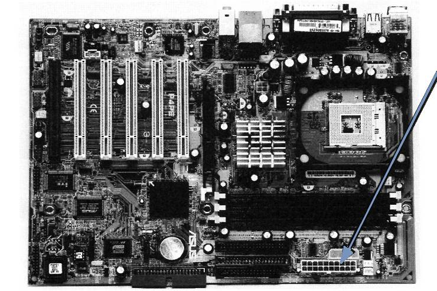
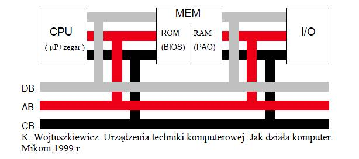
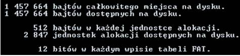
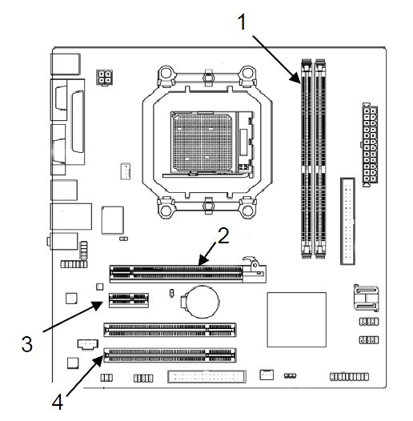
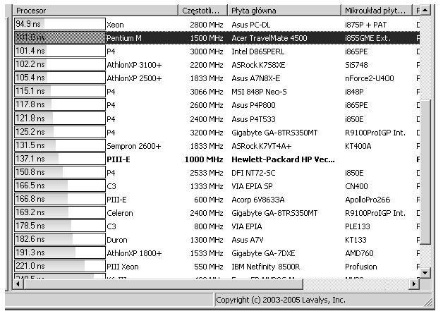
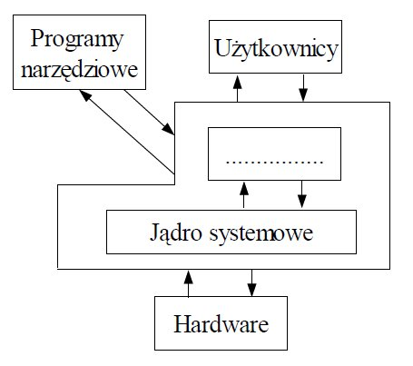
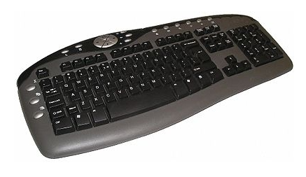

Baza wszystkich pytań E.12
1. Na rysunku procesor oznaczony jest numerem

A. 2
B. 3
C. 5
D. 8
2. Na rysunku karta rozszerzeń oznaczona jest numerem
A. 1
B. 4
C. 6
D. 7
3. Rysunek przedstawia pamięć
A. SIMM
B. DDR DIMM
C. SDRAM DIMM
D. Compact Flash
4. W przedstawionej na schemacie płycie głównej zasilanie należy podłączyć do złącza oznaczonego numerem
A. 3
B. 5
C. 6
D. 7
5. W przedstawionej na schemacie płycie głównej złącze PCI oznaczone jest numerem

A. 1
B. 2
C. 3
D. 4
6. Złącze AGP służy do podłączenia
A. szybkich pamięci dyskowych
B. urządzeń wejścia/wyjścia
C. kart graficznych
D. modemu
7. Do którego wyprowadzenia należy podłączyć głośniki aktywne w karcie dźwiękowej, której schemat funkcjonalny przedstawia rysunek?

A. Mic in
B. Line in
C. Line out
D. Speaker out
8. Który z elementów pokazanych na schemacie karty dźwiękowej na rysunku służy do cyfrowego przetwarzania sygnałów?
A. Przetwornik A/D
B. Procesor DSP
C. Syntezator
D. Mikser
9. Warunkiem niezbędnym przy archiwizacji danych jest
A. kompresja danych
B. kopiowanie danych
C. kompresja i kopiowanie danych
D. kompresja i kopiowanie danych z jednoczesnym ich szyfrowaniem
10. Ile komórek pamięci można zaadresować bezpośrednio w 64 bitowym procesorze, który ma 32 bitową szynę adresową?
A. 2 do potęgi 32
B. 2 do potęgi 64
C. 32 do potęgi 2
D. 64 do potęgi 2
11. Co oznacza zwrot "wykonanie backupu systemu"?
A. Zamknięcie systemu
B. Ponowne uruchomienie systemu
C. Wykonanie aktualizacji systemu
D. Wykonanie kopii zapasowej systemu
12. Klaster komputerowy to
A. komputer z macierzą dyskową
B. komputer z wieloma procesorami
C. grupa komputerów pracujących współbieżnie tak, jakby był to jeden komputer
D. komputer zapasowy, na którym co pewien czas wykonywana jest kopia systemu głównego
13. Pamięć oznaczona symbolem PC3200 nie może współpracować z magistralą
A. 300 MHz
B. 333 MHz
C. 400 MHz
D. 533 MHz
14. Co oznacza jednostka dpi podawana w parametrach katalogowych skanerów i drukarek?
A. Punkty na cal
B. Gęstość optyczną
C. Punkty na milimetr
D. Punkty na centymetr
15. Jaka jest maksymalna prędkość odczytu płyt CD-R w napędzie oznaczonym x48?
A. 480 kB/s
B. 4800 kB/s
C. 7200 kB/s
D. 10000 kB/s
16. Funkcje różnych kategorii (daty i czasu, finansowe, tekstowe, matematyczne, statystyczne) są elementem składowym
A. edytora tekstu
B. przeglądarki internetowej
C. arkusza kalkulacyjnego
D. programów do tworzenia prezentacji multimedialnych
17. Analizując rysunek zauważamy, że limit zadeklarowanej pamięci wynosi 620976 KB. Widać jednocześnie, że zainstalowanej pamięci fizycznej w analizowanym systemie jest mniej niż pamięci zadeklarowanej. Jaki typ pamięci decyduje w tym wypadku o zwiększeniu limitu pamięci zadeklarowanej ponad wielkość zainstalowanej pamięci fizycznej?
A. Pamięć cache procesora
B. Pamięć pliku stron
C. Pamięć RAM
D. Pamięć jądra
18. Urządzenie komputerowe, które bezwzględnie powinno być podłączone do sieci za pośrednictwem UPS, to
A. dysk zewnętrzny
B. drukarka atramentowa
C. serwer sieciowy
D. ploter
19. Z jakiego systemu plików należy skorzystać instalując Linuxa, by mieć możliwość definiowania uprawnień do plików i folderów?
A. EXT2
B. FAT32
C. NTFS
D. ISO9660
20. W celu zdalnego i przy tym bezpiecznego administrowania systemem Linux należy wykorzystać protokół
A. FTP
B. Telnet
C. SMTP
D. SSH2
21. Cechą charakterystyczną wirusów polimorficznych jest to, że
A. atakują tablicę FAT
B. atakują rekord startowy dysku
C. zarażają wszystkie komputery w sieci lokalnej
D. mają cechę polegającą na modyfikowaniu swojego kodu
22. Na komputerze podłączonym do Internetu, w programie antywirusowym bazę wirusów należy aktualizować co najmniej
A. raz dziennie
B. raz w tygodniu
C. raz w miesiącu
D. raz do roku
23. Jeżeli podczas podłączenia stacji dysków elastycznych 1,44 MB kabel danych zostanie podłączony odwrotnie, to
A. BIOS komputera zgłosi błąd podłączenia stacji dysków
B. BIOS komputera poprawnie wykryje stację dysków
C. BIOS komputera wykryje stację dysków jako 2,88 MB
D. stacja dysków ulegnie uszkodzeniu
24. Jakie elementy znajdują się na przedstawionej płycie głównej?
A. 2 złącza ISA, 3 złącza PCI, 4 złącza pamięci DIMM
B. 2 złącza ISA, 4 złącza PCI, 3 złącza pamięci DIMM
C. 3 złącza ISA, 4 złącza PCI, 2 złącza pamięci DIMM
D. 4 złącza ISA, 2 złącza PCI, 3 złącza pamięci DIMM
25. Na schemacie blokowym, przedstawiającym fragment systemu mikroprocesorowego, symbolem X oznaczono
A. pamięć Cache
B. kontroler DMA
C. kontroler przerwań
D. pamięć stałą ROM
26. Na zdjęciu przedstawiono płytę główną komputera. Strzałką oznaczono
A. procesor z umocowanymradiatorem
B. chip wbudowanej karty graficznej
C. kontroler mostka północnegoz umocowanym radiatorem
D. kontroler mostka południowego
27. Zdjęcie przedstawia kartę
A. sieciową ze złączem ISA
B. dźwiękową ze złączem PCI
C. telewizyjną ze złączem ISA
D. telewizyjną ze złączem PCI
28. Który z interfejsów jest interfejsem równoległym?
A. LPT
B. PS/2
C. RS232
D. USB
29. Na schemacie blokowym procesora blok funkcyjny nazwany SIMD to
A. zestaw 256 bitowych rejestrów znacznie przyspieszający obliczenia na liczbach stałopozycyjnych
B. zestaw 128 bitowych rejestrów niezbędny przy wykonywaniu instrukcji SSE procesora na liczbach stało- i zmiennoprzecinkowych
C. jednostka zmiennoprzecinkowa procesora (koprocesor)
D. moduł procesora realizujący wyłącznie operacje graficzne
30. Jaką funkcję pełnią elementy Tr1 i Tr2 widoczne na schemacie przedstawiającym kartę sieciową Ethernet?
A. Sygnalizują za pomocą dźwięku aktywność karty sieciowej
B. Zapewniają szyfrowanie i deszyfrowanie danych przesyłanych przez sieć
C. Sygnalizują za pomocą świecenia kolorem zielonym szybkość pracy karty sieciowej
D. Zapewniają izolację obwodu elektrycznego sieci LAN od obwodu elektrycznego komputera
31. Schemat blokowy przedstawia
A. streamer
B. dysk twardy
C. napęd dyskietek
D. napęd DVD-ROM
32. Systemy operacyjne z rodziny Linux rozprowadzane są na podstawie licencji
A. GNU
B. MOLP
C. shareware
D. komercyjnej
33. Zgodnie z przedstawionym w tabeli standardem opisu pamięci PC-100 wskażpamięć, która ma maksymalny czas dostępu 6 nanosekund i minimalne opóźnienie między sygnałami CAS i RAS wynoszące 2 cykle zegara
A. PC100-322-60
B. PC100-323-70
C. PC100-332-70
D. PC100-333-60
34. Zgodnie z dokumentacją karty graficznej jej zdolność do pracy z systemem AGP 2X/4X umożliwia
A. przesyłanie danych z maksymalną prędkością 1066 MB/s
B. przesyłanie danych z maksymalną prędkością 256 MB/s
C. pracę z maksymalną częstotliwością taktowania 55 MHz
D. pracę z maksymalną częstotliwością taktowania 44 MHz
35. Jeżeli w konfiguracji karty graficznej zostanie wybrane odświeżanie obrazu większe od zalecanego, monitor CRT spełniający normy TCO 99
A. ulegnie uszkodzeniu
B. nie wyłączy się, będzie wyświetlał czarny obraz
C. nie wyłączy się, będzie wyświetlał jedynie część obrazu
D. przejdzie w stan uśpienia lub pojawi się okno informacyjne z komunikatem
36. Jakie systemy operacyjne infekuje wirus MS Blaster?
A. MS Windows 2000/NT/XP
B. MS Windows 9x
C. Linux
D. DOS
37. W dokumentacji opisano system plików
A. FAT32
B. NTFS
C. EXT4
D. FAT
38. Liczba 356 zapisana w systemie dwójkowym to
A. 100001100
B. 110011010
C. 101100100
D. 110011000
39. Pewną liczbę naturalną w systemie szesnastkowym zapisano następująco: 41. Wskaż tę liczbę zapisaną w systemie dziesiętnym
A. 65
B. 75
C. 81
D. 91
40. Na płycie głównej wykorzystującej układ Intel 865G
A. nie można zainstalować karty graficznej
B. można zainstalować kartę graficzną ze złączem AGP
C. można zainstalować kartę graficzną ze złączem ISA
D. można zainstalować kartę graficzną ze złączem PCI-Express
41. Najlepsze zabezpieczenie komputera przed wirusami stanowi zainstalowanie
A. zapory FireWall
B. hasła dla BIOS-u
C. skanera antywirusowego
D. licencjonowanego systemu operacyjnego
42. W celu wymiany uszkodzonego modułu pamięci RAM w pierwszej kolejności należy
A. zdemontować uszkodzony moduł pamięci
B. otworzyć obudowę komputera
C. odłączyć zasilanie komputera
D. wyłączyć monitor ekranowy
43. Specyfika pracy firmy wymaga posługiwania się systemami plików charakteryzujących się dużym bezpieczeństwem i możliwością szyfrowania danych.W tym celu należy zastosować system operacyjny Windows
A. 2000/7/XP
B. NC
C. NTSC
D. Server
44. Oprogramowanie antywirusowe może skutecznie chronić komputer. Ważne jest, aby wybrać opcję uruchamiania programu wraz z komputerem oraz opcję
A. skanowania ostatnio używanych programów
B. monitorowania w czasie rzeczywistym (skanowania w tle)
C. automatycznego kasowania zainfekowanych plików
D. automatycznego odłączenia od sieci w przypadku infekcji
45. Szerokość magistrali pamięci DDR SDRAM wynosi
A. 72 bity
B. 64 bity
C. 36 bitów
D. 32 bity
46. Przy pomocy taśmy 34-pinowej przedstawionej na rysunku podłącza się do płyty głównej komputera
A. dyski SCSI
B. dyski ATA
C. napędy dyskietek 3,5 lub 5,25 cala
D. napędy DVD.
47. Niektóre systemy operacyjne są wielodostępne (multiuser). Systemy takie
A. równocześnie wykonują wiele programów (zadań)
B. sterują układem (klasterem) niezależnych komputerów
C. stosowane są głównie w przemyśle i systemach sterowania
D. oprócz wielozadaniowości z wywłaszczeniem realizują funkcję przydzielania czasu użytkownikom
48. Jeżeli w systemie operacyjnym komputera zainstaluje się program nazywany Trojanem, to spowoduje on
A. wykonywanie niepożądanych działań poza kontrolą użytkownika
B. ochronę systemu operacyjnego przed działaniem wirusów
C. optymalizację działania systemu operacyjnego
D. wspomaganie działania użytkownika
49. Zdjęcie przedstawia płytę główną komputera. Strzałką oznaczono

A. gniazdo zasilania do płyty ATX
B. gniazdo zasilania do płyty AT
C. połączenie do dysku IDE
D. połączenie do dysku SCSI
50. Przy pomocy taśmy 60-pinowej przedstawionej na rysunku podłącza się do płyty głównej komputera
A. tylko dyski SCSI
B. tylko dyski EIDE
C. napędy ATAPI
D. wszystkie powyższe urządzenia
51. NIEWŁAŚCIWE podłączenie taśmy sygnałowej do napędu dyskietek spowoduje
A. trwałe uszkodzenie napędu
B. błędy w zapisie na dyskietce
C. niemożność pracy z napędem
D. problemy z uruchomieniem komputera.
52. Tabela przedstawia parametry trzech dysków twardych standardu Ultra320 SCSI. Dyski te mogą pracować z maksymalnym transferem wewnętrznym
A. 132 MB/s
B. 320MB/S
C. 200MB/S
D. 320 GB/s
53. Usługa Windows XP Professional "Mostek sieciowy" pozwala na łączenie ze sobą
A. segmentów sieci LAN
B. dwóch komputerów
C. roboczych stacji bezdyskowych
D. klienta z serwerem
54. Na zdjęciu przedstawiono kartę
A. graficzną AGP
B. graficzną PCI
C. telewizyjną PCI Express
D. telewizyjną EISA
55. Blok funkcjonalny RAMDAC na schemacie blokowym przedstawia
A. przetwornik cyfrowo-analogowy z pamięcią RAM
B. przetwornik analogowo-cyfrowy z pamięcią RAM
C. pamięć RAM karty graficznej
D. pamięć ROM karty graficznej
56. Który z rodzajów macierzy RAID oferuje tzw. mirroring dysków?
A. RAID-0
B. RAID-1
C. RAID-2
D. RAID-5
57. Liczbami 25 i 27, na przedstawionej płycie głównej komputera, oznaczono złącza
A. PS 2
B. RS 232
C. USB
D. LPT
58. W trybie wielozadaniowości z wywłaszczeniem zawieszony program
A. może zawiesić cały system operacyjny
B. nie może zawiesić systemu operacyjnego
C. zablokuje pracę wszystkich innych programów
D. nie pozwoli usunąć się z pamięci operacyjnej
59. Jak należy wpisać w formule arkusza kalkulacyjnego adres komórki B3, żeby przy kopiowaniu tej formuły w dowolne miejsce arkusza adres komórki B3 pozostał niezmieniony?
A. B3
B. $B3
C. B$3
D. $B$3
60. Blok funkcjonalny oznaczony DSP w zamieszczonym schemacie blokowym to
A. bufor RAM
B. mikroprocesor karty dźwiękowej
C. przetwornik cyfrowo-analogowy z pamięcią RAM
D. przetwornik analogowo-cyfrowy z pamięcią RAM
61. W wyniku użycia narzędzia diagnostycznego chkdsk otrzymano informacje widoczne na zrzucie ekranu. Jaką wielkość posiada pojedynczy klaster dysku?
A. 1 972 kB
B. 2 140 kB
C. 4 kB
D. 8 kB
62. Komputery przenośne są z reguły wyposażone w bezprzewodowe sieci LAN. Ograniczenia ich użytkowania dotyczą emisji fal radiowych mogących zakłócać działanie innych, ważnych dla bezpieczeństwa, urządzeń
A. w pociągu
B. w samolocie
C. w biurze
D. w mieszkaniu
63. Plik zaszyfrowany przez użytkownika za pomocą systemu NTFS 5.0 jest każdorazowo automatycznie szyfrowany podczas
A. zapisywania go na dysku
B. kopiowania go przez sieć
C. wysyłania go pocztą e-mail
D. odczytywania go przez innego użytkownika
64. Na zdjęciu przedstawiono
A. modem kablowy
B. kartę telewizyjną
C. kartę sieci bezprzewodowej
D. moduł łączący komputer z UPS
65. W systemie Linux mamy następujące prawa dostępu do pewnego pliku rwxr--r-- . Jakim poleceniem zmienimy je na rwxrwx---?
A. chmod 221 nazwapliku
B. chmod 544 nazwapliku
C. chmod 770 nazwapliku
D. chmod 755 nazwapliku
66. Zerowanie rejestrów procesora odbywa się poprzez
A. użycie sygnału RESET
B. wyzerowanie bitów rejestru flag
C. ustawienie parametru w BIOS-ie
D. ustawienie licznika rozkazów na adresie zerowym
67. Do porównywania liczb binarnych służą
A. sumatory
B. komparatory
C. multipleksery
D. demultipleksery
68. Na podstawie nazw sygnałów sterujących określ funkcję podzespołu komputera oznaczonego na rysunku symbolem X

A. Układ generatorów programowalnych
B. Zegar czasu rzeczywistego
C. Kontroler przerwań
D. Kontroler DMA
69. Który z podzespołów komputera przy wyłączonym zasilaniu przechowuje program rozpoczynający ładowanie systemu operacyjnego?

A. CPU
B. RAM
C. ROM
D. I/O
70. Zdjęcie przedstawia
A. wentylator procesora
B. wentylator karty graficznej
C. chłodzenie aktywne chipsetu
D. chłodzenie pasywne chipsetu
71. Monitor CRT łączy się z kartą graficzną za pomocą złącza
A. PCMCIA
B. D-USB
C. D-SUB
D. BNC
72. Rejestr mikroprocesora zwany licznikiem rozkazów zawiera
A. liczbę rozkazów wykonanych przez procesor do danego momentu
B. liczbę rozkazów pozostałych do wykonania do końca programu
C. adres rozkazu przeznaczonego do wykonania jako następny
D. liczbę cykli zegara liczoną od początku pracy programu
73. Układ RAMDAC
A. zawiera konwerter analogowo-cyfrowy
B. stanowi stopień wyjściowy karty graficznej
C. jest charakterystyczny dla standardu ATA
D. jest charakterystyczny dla standardu S-ATA
74. Jaką liczbę dziesiętną zapisano na jednym bajcie w kodzie znak – moduł: 1 1111111
A. –100
B. –127
C. 128
D. 256
75. W systemie Linux polecenie ps spowoduje wyświetlenie
A. konfiguracji Proxy Server
B. listy aktualnych procesów drukowania
C. konfiguracji serwera drukarek Print Server
D. listy aktualnych procesów zalogowanego użytkownika
76. MFT w systemie plików NTFS to
A. główny plik indeksowy partycji
B. główny rekord rozruchowy dysku
C. tablica partycji na dysku twardym
D. plik zawierający informacje dotyczące poszczególnych plików i folderów na danym woluminie
77. Sumą dwóch liczb binarnych 1101011 i 1001001 jest liczba dziesiętna
A. 402
B. 201
C. 180
D. 170
78. W systemie Windows XP na komputerze klienckim, plik "hosts" jest plikiem tekstowym, który służy do mapowania
A. dysków twardych
B. nazw hostów na adresy IP
C. nazw hostów na adresy MAC
D. nazw hostów przez serwery DNS
79. Czynności samokontrolujące komputer po włączeniu zasilania oznaczone są skrótem
A. POST
B. BIOS
C. CPU
D. MBR
80. Magistrala, która łączy w komputerze procesor z kontrolerem pamięci, składająca się z szyny adresowej, szyny danych i linii sterujących, nosi nazwę
A. AGP – Accelerated Graphics Port
B. FSB – Front Side Bus
C. ISA – Industry Standard Architecture
D. PCI – Peripheral Component Interconnect
81. Określ wielkość klastra na podstawie zamieszczonego fragmentu komunikatu systemu WINDOWS wyświetlonego po zakończeniu działania programu format a:

A. 0,5 KB
B. 512 KB
C. 12 bitów
D. 1 457 664 bajtów
82. Systemy operacyjne z rodziny Linux rozprowadzane są na podstawie licencji
A. GNU
B. MOLP
C. shareware
D. komercyjnej
83. W systemie Linux ifconfig oznacza
A. nazwę karty sieciowej
B. narzędzie umożliwiające wyświetlenie stanu interfejsów sieciowych
C. narzędzie umożliwiające sprawdzanie znanych adresów MAC/IP
D. wykorzystanie pakietów TCP/IP do sprawdzenia stanu odległego hosta
84. Które złącze płyty głównej komputera służy do zainstalowania przedstawionej na zdjęciu karty graficznej?
A. ISA
B. PCI
C. AGP
D. PCI-E
85. Który z portów na panelu tylnym komputera oznacza się przedstawionym symbolem?
A. COM
B. LPT
C. RJ45
D. USB
86. Jak nazywa się port panelu tylnego komputera zamieszczony na rysunku?
A. FIRE WIRE
B. D-SUB
C. HDMI
D. DVI
87. Scandisk to program, który stosuje się do
A. defragmentacji dysku
B. formatowania dysku
C. oczyszczania dysku
D. sprawdzania dysku
88. Program, który dostarcza informacji o wydajności zestawu komputerowego to
A. sniffer
B. debugger
C. kompilator
D. benchmark
89. Główny rekord rozruchowy dysku twardego komputera to
A. BOOT
B. MBR
C. FAT
D. PT
90. Jaki zestaw kolorów zawiera tryb CMYK?
A. Błękitny, purpurowy, żółty i czarny
B. Czerwony, zielony, żółty i granatowy
C. Czerwony, zielony, niebieski i czarny
D. Czerwony, purpurowy, żółty i karmelowy
91. W systemie Windows moduł odpowiedzialny za internetowe usługi informacyjne to
A. IIS
B. ISA
C. IIU
D. OSI
92. Co oznacza znajdujący się w dokumentacji technicznej płyty głównej parametr LGA 775?
A. Typ gniazda procesora
B. Typ chipsetu płyty
C. Rodzaj obsługiwanych pamięci
D. Rodzaj karty graficznej
93. Przedstawione w ramce parametry katalogowe dotyczą dysku twardego
A. posiadającego 4 talerze
B. z pamięcią cache 12 MB
C. o pojemności dysku 32 MB
D. o maksymalnym transferze zewnętrznym 300 MB/s
94. Rezydentna część programu antywirusowego jako podstawowa forma ochrony antywirusowej, odpowiedzialna za ciągłe nadzorowanie chronionego systemu komputerowego, to
A. skaner skryptowy
B. zapora systemowa
C. monitor antywirusowy
D. moduł antyspywarowy
95. Do połączenia kamery cyfrowej posiadającej interfejs IEEE 1394 (FireWire), z komputerem stosuje się kabel z wtyczką przedstawioną na zdjęciu
A. A
B. B
C. C
D. D
96. Na zdjęciu, strzałką wskazano gniazdo interfejsu
A. COM
B. FDD
C. IDE
D. LPT
97. Na zdjęciu przedstawiono gniazda należące do karty
A. sieciowej
B. telewizyjnej
C. dźwiękowej
D. faksmodemowej
98. Który z podzespołów komputera przy wyłączonym zasilaniu przechowuje program rozpoczynający ładowanie systemu operacyjnego?
A. CPU
B. RAM
C. ROM
D. I/O
99. Na podstawie nazw sygnałów sterujących określ funkcję podzespołu komputera oznaczonego na rysunku symbolem X
A. Układ generatorów programowalnych
B. Zegar czasu rzeczywistego
C. Kontroler przerwań
D. Kontroler DMA
100. Co oznacza skrót MBR, dotyczący urządzeń techniki komputerowej?
A. Główny rekord rozruchowy SO
B. Fizyczny adres karty sieciowej
C. Bloki pamięci górnej komputera IBM/PC
D. Usługę związaną z tłumaczeniem nazw domeny
101. Który z interfejsów jest interfejsem równoległym?
A. LPT
B. USB
C. PS/2
D. RS232
102. Który z rodzajów macierzy RAID oferuje tzw. mirroring dysków?
A. RAID-0
B. RAID-1
C. RAID-2
D. RAID-5
103. Rejestr mikroprocesora zwany licznikiem rozkazów zawiera
A. liczbę rozkazów wykonanych przez procesor do danego momentu
B. liczbę rozkazów pozostałych do wykonania do końca programu
C. adres rozkazu przeznaczonego do wykonania jako następny
D. liczbę cykli zegara liczoną od początku pracy programu
104. Nazwa "PIO Mode" dotyczy trybu pracy
A. pamięci
B. modemu
C. kanału IDE
D. napędu FDD
105. Liczba 257 dziesiętnie to
A. 1 0000 0001 dwójkowo
B. 1000 0000 dwójkowo
C. FF szesnastkowo
D. F0 szesnastkowo
106. Liczba szesnastkowa: FFFF w systemie dwójkowym ma postać
A. 1111 1111 1111 1111
B. 1111 0000 0000 0111
C. 0010 0000 0000 0111
D. 0000 0000 0000 0000
107. Na podstawie informacji z "Właściwości systemu" można wywnioskować, że na komputerze jest zainstalowana fizycznie pamięć RAM o pojemności
A. 523 MB
B. 512 MB
C. 256 MB
D. 128 MB
108. Jaka drukarka powinna być zastosowana w dziale sprzedaży hurtowni materiałów budowlanych do drukowania faktur na papierze samokopiującym, tak aby uzyskać na nim kopie wydruku?
A. Igłowa
B. Laserowa
C. Atramentowa
D. Sublimacyjna
109. Manager bootowania, który pozwala na wybór systemu operacyjnego Linux do uruchomienia to
A. Ranish Partition Manager
B. Smart Boot Manager
C. Boot Magic
D. Grub
110. Wyrównanie tekstu do prawego i lewego marginesu nazywa się
A. interlinią
B. wersalikiem
C. kapitalikiem
D. justowaniem
111. W którym miejscu znajduje się nagłówek i stopka w dokumencie tekstowym Word?
A. Nagłówek jest drukowany na górnym marginesie, natomiast stopka jest drukowana na dolnym marginesie
B. Nagłówek jest drukowany na dolnym marginesie, natomiast stopka jest drukowana na górnym marginesie
C. Nagłówek znajduje się na początku dokumentu, natomiast stopka na końcu dokumentu
D. Na parzystych stronach dokumentu
112. Odwrotnością bezstratnej kompresji danych jest
A. archiwizacja
B. dekompresja
C. prekompresja
D. pakowanie danych
113. Jaki pierwszy znak w nazwie pliku w systemie Windows oznacza plik tymczasowy?
A. #
B. *
C. ~
D. &
114. Robak komputerowy to program, który
A. ma zdolność samoreplikacji
B. potrzebuje programu nosiciela
C. uaktywnia się, gdy nadejdzie odpowiednia data
D. uruchamia się, gdy użytkownik zainfekowanego komputera uruchomi jakiś program
115. W systemie operacyjnym Linux archiwizację danych wykonuje się poleceniem
A. tar
B. rpm
C. cmd
D. chmod
116. Drugi monitor CRT podłączony do zestawu komputerowego służy do
A. kalibracji danych
B. przetwarzania danych
C. wyprowadzania informacji
D. przechowywania informacji
117. Ile dział elektronowych posiada matryca LCD?
A. 3
B. 2
C. 1
D. 0
118. Pamięć podręczna określana jest nazwą
A. Chipset
B. Cache
C. EIDE
D. VLB
119. Pamięć nieulotna, elektrycznie kasowana i programowana określana jest skrótem
A. IDE
B. ROM
C. RAM
D. EEPROM
120. Ustawienie zworek na dyskach z interfejsem IDE odpowiada za
A. rodzaj interfejsu dyskowego
B. prędkość obrotową dysku
C. napięcie zasilania silnika
D. tryb pracy dysku
121. Koprocesor (Floating Point Unit) w komputerze służy do wykonywania
A. podprogramów
B. operacji na liczbach całkowitych
C. operacji na liczbach naturalnych
D. operacji zmiennoprzecinkowych
122. Jakie mogą być typy partycji dyskowych w systemie operacyjnym Windows?
A. Podstawowa, rozszerzona oraz dysk logiczny
B. Dodatkowa, rozszerzona, wymiany oraz dysk logiczny
C. Podstawowa, rozszerzona, wymiany, dodatkowa
D. Dodatkowa, podstawowa, rozszerzona, wymiany oraz dysk logiczny
123. Na płycie głównej pokazanej na schemacie, moduły pamięci RAM można zainstalować w gnieździe oznaczonym cyfrą

A. 1
B. 2
C. 3
D. 4
124. Które zadanie spełnia system informatyczny?
A. Przetwarzanie danych
B. Sterowanie monitorem CRT
C. Zabezpieczanie przed wirusami
D. Kontrola pracy oprogramowania diagnostycznego
125. W czasie uruchamiania (krótko po teście POST) komputer zawiesza się. Co może być przyczyną takiej usterki?
A. Zbyt dużo ikon na pulpicie
B. Źle skonfigurowana drukarka
C. Brak podłączonej myszki komputerowej
D. Niewłaściwe napięcie zasilania procesora
126. Rysunek przedstawia wejście typu
A. USB
B. LPT
C. COM
D. FireWire
127. Na rysunku przedstawiono zrzut ekranu z przeprowadzonego testu

A. czasu oczekiwania pamięci
B. czasu dostępu do dysku twardego
C. czasu dostępu do napędu optycznego
D. czasu opróżniania buforu systemowego
128. Przedstawiony symbol odnosi się do urządzeń
A. USB
B. LPT
C. SCSI
D. IEEE-1394
129. Z jaką najniższą efektywną częstotliwością taktowania mogą współpracować pamięci DDR2?
A. 800 MHz
B. 533 MHz
C. 333 MHz
D. 233 MHz
130. Pamięci DDR2 zasilane są napięciem
A. 1,0 V
B. 1,4 V
C. 1,8 V
D. 2,5 V
131. Na zdjęciu przedstawiono kość pamięci
A. RIMM
B. SIMM
C. SDRAM
D. RAMBUS
132. Wartość liczby 1101 0100 0111 w kodzie szesnastkowym wynosi
A. C27
B. D43
C. C47
D. D47
133. Cookie nazywa się plik
A. graficzny przechowujący obraz witryny sieci Web
B. tekstowy, z którego korzystają wszystkie witryny sieci
C. graficzny, z którego korzystają wszystkie witryny sieci
D. tekstowy, przechowujący informacje dla danej witryny sieci Web
134. Na zdjęciu jest widoczny tylny panel komputera. Jak nazywa się wejście oznaczone strzałką?
A. LPT
B. USB
C. COM
D. FireWire
135. Które ze złączy oznaczonych strzałkami na schemacie monitora jest wejściem cyfrowym?

A. Złącze 1
B. Złącze 2
C. Złącza 1 i 2
D. Żadne ze złączy
136. Jaką funkcję pełni układ zaznaczony strzałką na schemacie karty graficznej?
A. Oblicza kolory każdego wyświetlanego piksela
B. Ustala widoczność i przesłanianie się obiektów na ekranie
C. Wykonuje kalkulacje oświetlenia, uwzględniając położenie światła
D. Oblicza wygląd i położenie wielokątów, z których zbudowany jest obiekt
137. Rysunek przedstawia schemat blokowy karty dźwiękowej. Jaką funkcję pełni układ oznaczony cyfrą 1?
A. Wzmacnia sygnał wejściowy
B. Wzmacnia sygnał wyjściowy
C. Zamienia sygnał analogowy na cyfrowy
D. Zamienia sygnał cyfrowy na analogowy
138. Active Directory w systemach MS Windows Server 2000 i MS Windows Server 2003 to
A. baza danych zawierająca informacje o użytkownikach sieci, ich hasłach dostępu i uprawnieniach
B. logiczna grupa komputerów, które mają możliwość komunikowania się w sieci i wzajemnego udostępniania zasobów
C. grupa komputerów połączonych w sieć, składająca się z serwera pełniącego rolę kontrolera oraz stacji roboczych – klientów
D. usługa katalogowa, która przechowuje informacje dotyczące obiektów w sieci i udostępnia je użytkownikom oraz administratorom sieci
139. Procesor RISC to procesor
A. z pełną listą rozkazów
B. z główną listą rozkazów
C. z kompleksową listą rozkazów
D. ze zredukowaną listą rozkazów
140. W dokumentacji systemu operacyjnego Windows XP opisane są pliki z rozszerzeniem .dll. Rozszerzenie to dotyczy pliku
A. biblioteki
B. uruchamialnego
C. inicjalizacyjnego
D. dziennika zdarzeń
141. Licencja OEM to
A. dokument, który zezwala na używanie oprogramowania na dowolnym sprzęcie komputerowym w określonej w niej ilości stanowisk, bez instalacyjnych dyskietek, czy krążków CD
B. licencja czyniąca z oprogramowania własność ogółu, w myśl której autor lub autorzy oprogramowania zrzekają się praw do upowszechniania oprogramowania na rzecz ogółu użytkowników
C. licencja oprogramowania wyłącznie na system komputerowy, na którym zostało oryginalnie zainstalowane, dotyczy oprogramowania sprzedawanego z nowymi komputerami lub odpowiednimi częściami
D. licencja uprawniająca użytkownika do zainstalowania nabytego oprogramowania tylko w jednym komputerze, obejmująca zakaz udostępniania takiego oprogramowania w sieci oraz na innych wolnostojących komputerach
142. Procesor Athlon 2800+ to
A. procesor firmy Intel taktowany częstotliwością 2,8 GB
B. procesor firmy AMD taktowany częstotliwością 2,8 GB
C. procesor firmy AMD o wydajności podobnej do procesora Pentium 4 taktowanego częstotliwością 2,8 GHz
D. procesor firmy Intel o wydajności podobnej do procesora Pentium 4 taktowanego częstotliwością 2,8 GHz
143. Najbardziej zaawansowany tryb pracy portu równoległego standardu IEEE-1284 tworzący dwukierunkową magistralę 8-bitową mogącą przesyłać zarówno dane, jak i adresy z maksymalną szybkością transmisji do 2,3 MB/s, pozwalający na podłączenie do 64 urządzeń, to
A. EPP Mode
B. Byte Mode
C. Nibble Mode
D. Compatilibility Mode
144. Gdzie w edytorze tekstu wprowadza się informację lub ciąg znaków, który ma pojawić się na wszystkich stronach dokumentu?
A. W polu tekstowym
B. W przypisach dolnych
C. W nagłówku lub stopce
D. W przypisach końcowych
145. Jeżeli w komórce arkusza kalkulacyjnego MS Excel, zamiast cyfr pojawiają się znaki ########, to należy przede wszystkim sprawdzić, czy
A. wpisana formuła zawiera błąd
B. pojawił się błąd w obliczeniach
C. wprowadzone zostały znaki tekstowe, a nie liczby
D. liczba nie mieści się w komórce i nie można jej prawidłowo wyświetlić
146. We właściwościach karty graficznej w zakładce Zasoby jest określony jeden z zakresów pamięci dla tej karty od A0000h do BFFFFh. Wielkość ta oznacza obszar pamięci określony adresem fizycznym
A. 1010 0000 0000 0000 0000 – 1011 1111 1111 1111 1111
B. 1011 0000 0000 0000 0000 – 1100 1111 1111 1111 1111
C. 1001 1111 1111 1111 1111 – 1010 0000 0000 0000 0000
D. 1100 1111 1111 1111 1111 – 1110 1111 1111 1111 1111
147. Numer przerwania przydzielony dla karty sieciowej został przedstawiony w postaci binarnej jako liczba 10101. Jaka to liczba dziesiętna?
A. 15
B. 20
C. 21
D. 41
148. Po włączeniu komputera procedura POST pokazuje 512 MB RAM. Na karcie właściwości ogólnych systemu operacyjnego Windows widnieje wartość 480 MB RAM. Co jest przyczyną tej różnicy?
A. System operacyjny jest źle zainstalowany i nie obsługuje całego obszaru pamięci
B. Jest źle przydzielony rozmiar pliku stronicowania w ustawieniach pamięci wirtualnej
C. Jedna z kości pamięci jest uszkodzona lub jest uszkodzone jedno z gniazd pamięci RAM na płycie głównej
D. W komputerze znajduje się karta graficzna zintegrowana z płytą główną wykorzystująca część pamięci RAM
149. Firma potrzebuje drukarki służącej do drukowania trwałych kodów kreskowych oraz etykiet na folii i powierzchniach z tworzyw sztucznych. Jaką drukarkę musi zakupić?
A. Igłową
B. Termiczną
C. Mozaikową
D. Termotransferową
150. W przedsiębiorstwie należy cyklicznie tworzyć kopie bezpieczeństwa dużej ilości danych, znajdujących się na serwerze, rzędu kilkuset GB. Jakie urządzenie najlepiej wykorzystać do tego celu?
A. Streamer
B. Macierz RAID1
C. Nagrywarkę CD
D. Nagrywarkę DVD
151. Zamontowany w komputerze dysk ma zostać podzielony na partycje. Podaj maksymalną liczbę partycji rozszerzonych, możliwych do utworzenia na jednym dysku
A. 1
B. 2
C. 3
D. 4
152. W jakim systemie operacyjnym przy instalacji sterowników do nowego urządzenia może pojawić się komunikat
A. Unix
B. Linux
C. Windows XP
D. Windows 98
153. System operacyjny działający w trybie tekstowym z możliwością uruchomienia środowiska graficznego KDE, to
A. DOS
B. Linux
C. Windows 95
D. Windows XP
154. Skaner antywirusowy wykrył niepożądane oprogramowanie. Z opisu wynika, że jest to dialer, który pozostawiony w systemie
A. zaatakuje rekord startowy dysku
B. zainfekuje załączniki poczty internetowej
C. przejmie pełną kontrolę nad komputerem
D. połączy się z płatnymi numerami telefonicznymi przy użyciu modemu
155. Co należy zrobić z wiadomością pocztową od nieznanej osoby, zawierającą niepewny załącznik?
A. Nie otwierać wiadomości, natychmiast ją usunąć
B. Otworzyć załącznik, jeśli jest w nim wirus, natychmiast go zamknąć
C. Otworzyć wiadomość i odpowiedzieć na nią, pytając co zawiera załącznik
D. Otworzyć załącznik i zapisać go na dysku twardym, a następnie sprawdzić plik programem antywirusowym
156. Jakie oznaczenie zgodnie z Dyrektywami Rady Europy musi posiadać komputer, by mógł być dopuszczony do sprzedaży na terenie Polski?
A. A
B. B
C. C
D. D
157. Jaką cyfrą został oznaczony procesor na schemacie płyty głównej komputera?
A. 1
B. 2
C. 3
D. 4
158. Blok funkcjonalny RAMDAC na schemacie blokowym przedstawia
A. przetwornik cyfrowo-analogowy z pamięcią RAM
B. przetwornik analogowo-cyfrowy z pamięcią RAM
C. pamięć RAM karty graficznej
D. pamięć ROM karty graficznej
159. Na rysunku przedstawiono symbol układu cyfrowego
A. dekodera priorytetu
B. kodera priorytetu
C. multipleksera priorytetu
D. demultipleksera priorytetu
160. Znajdujący się w dokumentacji technicznej płyty głównej symbol: "LGA 775" oznacza typgniazda dla procesorów:
A. których obudowa posiada piny
B. których obudowa posiada pola dotykowe
C. które współpracują z szyną systemową o częstotliwości taktowania maksymalnie do 1 333 MHz.
D. które zawiera mniej połączeń zasilających niż gniazdo dla procesorów w obudowie PGA.
161. Na schemacie blokowym, przedstawiającym fragment systemu mikroprocesorowego, symbolem X oznaczono
A. pamięć cache
B. kontroler DMA
C. kontroler przerwań
D. pamięć stałą ROM
162. Jaką kartę rozszerzeń komputera przedstawiono na zdjęciu?
A. sieciową
B. graficzną
C. dźwiękową
D. telewizyjną (TV)
163. Cecha systemu operacyjnego, pozwalająca uruchomić równocześnie kilka aplikacji w ramach podziału czasu, przy czym podział czasu realizowany jest przez same aplikacje nosi nazwę
A. wielodostępowości
B. wielozadaniowości kooperatywnej
C. wielozadaniowości z wywłaszczeniem
D. wieloprogramowości
164. Współcześnie pamięci podręczne procesora drugiego poziomu (ang. "L-2 cache") wykonane są z układów pamięci
A. ROM
B. DRAM
C. SRAM
D. EEPROM
165. Program "VirtualPC", który można pobrać z witryny firmy Microsoft służy do korzystania:
A. z wirtualnych systemów operacyjnych na dysku lokalnym
B. z bezpłatnej pomocy technicznej TechNet.Soft firmy Virtual Soft
C. z bezpłatnego konta o pojemności 100 MB w ramach hostingu firmy Microsoft
D. z konta osobistego o pojemności 1 GB w serwerze wirtualnym firmy Microsoft
166. Zapisywanie kluczy rejestru do pliku nazywamy
A. eksportowaniem rejestru
B. kopiowaniem rejestru
C. modyfikacją rejestru
D. edycją rejestru
167. Polecenie "mmc" systemu Windows 2OOO/Windows XP uruchamia narzędzie do tworzenia, zapisywania oraz otwierania
A. plików multimedialnych, przechowujących filmy
B. pliku dziennika operacji dyskowych w systemie plików NTFS
C. katalogu wraz z jego podkatalogami na partycji sformatowanej w systemie plików NTFS
D. zestawu narzędzi administracyjnych zwanych konsolami, służących do zarządzania sprzętem i oprogramowaniem
168. W tabeli zamieszczono podstawowe dane techniczne dwóch interfejsów. Wynika z nich, że SATA w porównaniu z ATA ma
A. mniejszą przepustowość i mniejszą liczbę wyprowadzeń w złączu
B. większą przepustowość i większą liczbę wyprowadzeń w złączu
C. większą przepustowość i mniejszą liczbę wyprowadzeń w złączu
D. mniejszą przepustowość i większą liczbę wyprowadzeń w złączu
169. fps (ang. frames per second) bezpośrednio odnosi się do
A. płynności wyświetlania ruchomych obrazów
B. prędkości przesyłania danych do dysku w standardzie SATA
C. wydajności układów pamięci RAM
D. efektywności przepływu informacji na magistrali systemowej
170. W tabeli zamieszczono dane katalogowe procesora AMD Athlon 1333 Model 4 Thunderbird. Z jaką częstotliwością realizowane są przesłania międzyrejestrowe?
A. 133 MHz
B. 266 MHz
C. 1333 MHz
D. 2666 MHz
171. Suma liczb szesnastkowych: 4C + C4 zapisana w systemie dziesiętnym wynosi
A. 270
B. 271
C. 272
D. 273
172. Liczbie 16 bitowej 0011110010101110 zapisanej w systemie dwójkowym odpowiada w systemie szesnastkowym liczba
A. 3CAE
B. 3CBE
C. 3DAE
D. 3DFE
173. Do zbudowania programowej macierzy dyskowej RAID-1 należy użyć minimum
A. 1 dysku podzielonego na dwie partycje
B. 2 dysków
C. 3 dysków
D. 4 dysków
174. Instalując system operacyjny Linux należy skorzystać z systemu plików
A. FAT32
B. NTFS 4
C. NTFS 5
D. ReiserFS
175. Monitor powinien spełniać standard
A. TN GNS
B. ISO-9N01
C. TCO Energy66.
D. EPA Energy Star
176. Szkodliwe samoreplikujące się programy komputerowe wykorzystujące luki w systemie operacyjnym, które potrafią uzupełniać i zmieniać swoją funkcjonalność to
A. robaki
B. rootkity
C. trojany
D. wirusy
177. Symbol graficzny odnosi się do standardu urządzeń
A. LPT
B. USB
C. SCSI-12
D. FireWire
178. Zdjęcie przedstawia 168-stykową pamięć
A. SIPP
B. SIMM
C. RIMM
D. SDRAM
179. Rysunek przedstawia schemat blokowy zasilacza
A. awaryjnego (UPS)
B. impulsowego komputera
C. analogowego komputera
D. impulsowego matrycy RAID
180. Na schemacie element odpowiedzialny za dekodowanie instrukcji jest oznaczony cyfrą
A. 1
B. 2
C. 3
D. 6
181. Na schemacie blokowym karty dźwiękowej element zmieniający sygnał analogowy na sygnał cyfrowy jest oznaczony cyfrą

A. 2
B. 3
C. 4
D. 5
182. Rozpowszechniona forma oprogramowania zgodna z zasadą "najpierw wypróbuj, a potem kup", to
A. OEM
B. Software
C. Freeware
D. Shareware
183. Z nośników optycznych największą pojemność ma płyta
A. CD
B. DVD
C. Blu-Ray
D. DVD-RAM
184. W którym z rejestrów wewnętrznych procesor zapisuje dodatkowe cechy wyniku wykonywanej operacji?
A. W akumulatorze
B. W liczniku rozkazów
C. We wskaźniku stosu
D. W rejestrze flagowym
185. Który z portów panelu tylnego płyty głównej jest oznaczany w dokumentacji jako port standardu RS232C?
A. COM
B. LPT
C. PS/2
D. USB
186. Termin SLI dotyczy
A. dysków twardych
B. kart graficznych
C. kart sieciowych
D. modemów
187. W tabeli zamieszczono podstawowe dane techniczne dwóch interfejsów. Wynika z nich, że SATA w porównaniu z ATA ma
A. mniejszą przepustowość i mniejszą liczbę wyprowadzeń w złączu
B. większą przepustowość i większą liczbę wyprowadzeń w złączu
C. większą przepustowość i mniejszą liczbę wyprowadzeń w złączu
D. mniejszą przepustowość i większą liczbę wyprowadzeń w złączu
188. W tabeli przedstawiono parametry katalogowe czterech twardych dysków. Największą średnią szybkość odczytu danych zapewnia dysk
A. A
B. B
C. C
D. D
189. Tablica partycji zakończona jest sygnaturą (ciągiem bitów) 55AA (szesnastkowo). Odpowiadająca jej wartość dwójkowa to
A. 1,0101010010101E+015
B. 1,0100101101001E+015
C. 101101001011010
D. 101010110101010
190. Zgodnie z zamieszczonym fragmentem testu w komputerze jest zainstalowana
A. pamięć fizyczna 0,50 GB i plik wymiany 1,00 GB
B. pamięć fizyczna 0,49 GB i plik wymiany 1,20 GB
C. pamięć fizyczna 0,49 GB i plik wymiany 1,22 GB
D. pamięć fizyczna 0,70 GB i plik wymiany 1,22 GB
191. Pracownik serwisu w wyniku przeprowadzonego testu na serwerze NetWare uzyskał informację, że obiekt ma prawo
A. czytania swoich właściwości
B. dodawania swoich właściwości
C. porównania swoich właściwości
D. dodawania lub usuwania swoich właściwości
192. Kamera cyfrowa przy zgrywaniu filmu transmituje na dysk 220 MB na minutę. Na podstawie diagramu wybierz interfejs o najmniejszej szybkości transferu zapewniający warunki takiej transmisji
A. USB 1
B. 1394a
C. USB 2
D. 1394b
193. Jednoczesne zwiększenie szybkości operacji (zapis/odczyt) i bezpieczeństwa przechowywania danych umożliwia macierz dyskowa
A. RAID 0
B. RAID 1
C. RAID 3
D. RAID 50
194. W systemie Linux dla uzyskania uprawnień administratora należy w oknie terminala użyć polecenia
A. df
B. su root
C. $HOME
D. uname -s
195. Szkodliwe samoreplikujące się programy komputerowe wykorzystujące luki w systemie operacyjnym, które potrafią uzupełniać i zmieniać swoją funkcjonalność to
A. robaki
B. rootkity
C. trojany
D. wirusy
196. Program testujący wydajność sprzętu komputerowego to
A. benchmark
B. checkdisk
C. exploit
D. sniffer
197. Jaką nazwę nosi niepożądane oprogramowanie komputerowe instalowane najczęściej bez wiedzy użytkownika?
A. Shareware
B. Slackware
C. Freeware
D. Malware
198. Na zdjęciu przedstawiono złącza karty graficznej. Złącze cyfrowe to

A. wyłącznie złącze 1
B. wyłącznie złącze 2
C. wyłącznie złącze 3
D. złącze 1 i 2
199. Które złącze na tylnym panelu komputera oznaczane jest przedstawionym symbolem graficznym?
A. HDMI
B. USB
C. PS/2
D. 8P8C
200. Przedstawiony symbol graficzny oznacza
A. generator dźwięku
B. filtr dolnoprzepustowy
C. przetwornik cyfrowo-analogowy
D. przetwornik analogowo-cyfrowy
201. Na schemacie działania skanera numerem 1 oznaczono element, którego zadaniem jest
A. wzmacnianie sygnału optycznego
B. wzmacnianie sygnału elektrycznego
C. zamiana sygnału analogowego na sygnał cyfrowy
D. zamiana sygnału optycznego na sygnał elektryczny
202. Element oznaczony numerem 1 na schemacie blokowym procesora jest odpowiedzialny za
A. przechowywanie wyniku operacji
B. wykonywanie operacji na blokach danych
C. wykonywanie operacji na liczbach zmiennoprzecinkowych
D. przechowywanie dodatkowych informacji o wykonywanej operacji
203. Element oznaczony numerem 1 na schemacie blokowym karty graficznej

A. zawiera matrycę znaków trybu tekstowego
B. zamienia sygnał cyfrowy na sygnał analogowy
C. generuje sygnał RGB na wyjście karty graficznej
D. przechowuje dane wyświetlane, w trybie graficznym
204. Który z elementów oznaczonych numerami od 1 do 4, przedstawionych na schemacie blokowym frame grabbera i opisanym we fragmencie dokumentacji technicznej, służy do wymiany danych z innymi urządzeniami przetwarzającymi obraz wideo bez niepotrzebnego obciążania magistrali PCI?
A. 1
B. 2
C. 3
D. 4
205. W ramce zamieszczono zawartość jednego z plików systemu operacyjnego MS Windows. Jest to plik
A. tekstowy, zawierający listę zainstalowanych systemów operacyjnych
B. dziennika, zawierający informacje o zainstalowanych urządzeniach
C. wykonywalny, uruchamiający edytor rejestru systemu
D. wsadowy, służący do uruchamiania instalatora
206. Domyślnie, w systemie Linux, twardy dysk w standardzie SATA oznaczony jest
A. fda
B. sda
C. ida
D. ide
207. Przedstawione parametry katalogowe dotyczą routera posiadającego pamięć masową
A. 3 MB
B. 32 MB
C. 64 MB
D. 680 MB
208. Ile maksymalnie dysków twardych można podłączyć bezpośrednio do płyty głównej, której fragment specyfikacji przedstawiono w ramce?
A. 2
B. 4
C. 5
D. 8
209. Do sporządzenia projektu sieci komputerowej dla budynku szkoły najlepiej wykorzystać edytor grafiki wektorowej, którym jest program
A. AutoCad
B. MS Excel
C. MS Publisher
D. Adobe Photoshop
210. Zakres we/wy kontrolera DMA zapisany w postaci heksadecymalnej wynosi 0094-009F, a w systemie dziesiętnym
A. 73-249
B. 148-159
C. 1168-3984
D. 2368-2544
211. Adres komórki pamięci podano w postaci binarnej 1110001110010100. W systemie szesnastkowym adres zapisuje się w postaci
A. 493
B. 7E+092
C. D281
D. E394
212. W ramce umieszczono wyniki badania dysku twardego. Jakie działania należy podjąć po ich analizie, aby poprawić sprawność dysku?
A. Oczyścić dysk
B. Sformatować dysk
C. Zdefragmentować dysk
D. Podzielić dysk na partycje
213. Firma zajmująca się sprzątaniem musi drukować faktury tekstowe w czterech egzemplarzach jednocześnie, na papierze samokopiującym. Jaką drukarkę powinna wybrać?
A. Igłową
B. Laserową
C. Atramentową
D. Termosublimacyjną
214. W biurze rachunkowym znajduje się w jednym pomieszczeniu sześć komputerów podłączonych do koncentratora kablem UTP Cat 5e. Pracownicy użytkujący te komputery muszą mieć możliwość drukowania bardzo dużej ilości (powyżej 5 tys. stron miesięcznie) dokumentów monochromatycznych. Aby koszty zakupu sprzętu i eksploatacji były jak najniższe należy wybrać:
A. laserową drukarkę sieciową z portem RJ45
B. atramentowe urządzenie wielofunkcyjne ze skanerem i faksem
C. laserowe drukarki lokalne podłączone do każdego z komputerów
D. drukarkę atramentową podłączoną do jednego z komputerów i udostępnianą w sieci
215. Trzech użytkowników komputera z zainstalowanym systemem operacyjnym Windows XP Pro ma swoje foldery z dokumentami w katalogu głównym dysku C:. Na dysku jest zainstalowany system plików NTFS. Użytkownicy mają założone w systemie konta z ograniczeniami. W jaki sposób należy zabezpieczyć folder każdego z użytkowników, by pozostali nie mogli modyfikować zawartości folderu?
A. Nadać dokumentom atrybut Ukryty we właściwościach folderów
B. Każdemu z użytkowników zmienić typ konta na konto z ograniczeniami
C. Nie udostępniać dokumentów w zakładce Udostępnianie we właściwościach folderu
D. Przypisać uprawnienia NTFS do modyfikacji folderu tylko właściwemu użytkownikowi
216. Główny księgowy musi mieć możliwość odzyskiwania zawartości folderów z kopii zapasowej plików. Do jakiej grupy użytkowników systemu MS Windows XP należy go przydzielić?
A. Użytkownicy z ograniczeniami
B. Użytkownicy pulpitu zdalnego
C. Operatorzy kopii zapasowych
D. Operatorzy konfiguracji sieci
217. Jakie oprogramowanie, zapobiegające włamaniu do sieci, należy zainstalować na serwerze udostępniającym połączenie z internetem?
A. DNS
B. DHCP
C. FireWall
D. Active Directory
218. Komputer jest najprawdopodobniej zainfekowany boot wirusem. Jakie działanie spowoduje usunięcie wirusa w sposób najmniej inwazyjny dla systemu operacyjnego?
A. Restart systemu
B. Uruchomienie systemu w trybie awaryjnym
C. Ponowne zainstalowanie systemu operacyjnego
D. Przeskanowanie programem antywirusowym z bootowalnego nośnika
219. Jednym z zaleceń dotyczących ochrony antywirusowej jest skanowanie całego komputera.Zgodnie z tym zaleceniem komputer należy skanować
A. jedynie w sytuacji, gdy podejrzewamy zainfekowanie wirusem
B. tylko wtedy, gdy nie działa w systemie monitor antywirusowy
C. jedynie po aktualizacji baz programu antywirusowego
D. systematycznie, na przykład raz w tygodniu
220. Do zarządzania programami i usługami uruchamianymi wraz ze startem systemu operacyjnego w Windows 7 należy wykorzystać program
A. config.sys
B. autorun.inf
C. autoexec.bat
D. msconfig.exe
221. GRUB, LILO, NTLDR to
A. wersje głównego interfejsu sieciowego
B. aplikacje do aktualizacji BIOS-u
C. firmware dla dysku twardego
D. programy rozruchowe
222. Użytkownik zamierza zainstalować 32-bitowy system operacyjny Windows 7. Ile minimalnie pamięci RAM musi posiadać komputer, aby była możliwa praca systemu w trybie graficznym ?
A. 256 MB
B. 512 MB
C. 1 GB
D. 2 GB
223. Na nowym komputerze program antywirusowy należy zainstalować
A. w trakcie instalacji systemu operacyjnego
B. przed zainstalowaniem systemu operacyjnego
C. zaraz po zainstalowaniu systemu operacyjnego
D. po zainstalowaniu pobranych z Internetu programów
224. Materiałem eksploatacyjnym dla kolorowej drukarki laserowej jest
A. przetwornik CMOS
B. podajnik papieru
C. kartridż z tonerem
D. pamięć wydruku
225. W jednostce ALU do akumulatora została wpisana liczba dziesiętna 240. Jaka jest jej binarna reprezentacja?
A. 11110000
B. 11111000
C. 11111100
D. 11111110
226. Instalowanie systemów Linux oraz Windows 7 przebiegło bez żadnych utrudnień. Systemy zainstalowały się poprawnie z domyślnymi ustawieniami. Na tym samym komputerze, przy identycznej konfiguracji, podczas instalowania systemu Windows XP wyświetlony został komunikat o braku dysków twardych co może świadczyć o
A. złym ułożeniu zworek w dysku twardym
B. uszkodzeniu logicznym dysku twardego
C. źle ustawionym bootowaniu napędów
D. braku sterowników
227. W systemie Windows 7 w celu skopiowania katalogu c:\test wraz z podkatologami na dysk przenośny f:\ należy użyć polecenia
A. copy c:\test f:\test/E
B. copy f:\test c:\test/E
C. xcopy c:\test f:\test/E
D. xcopy f:\test c:\test/E
228. Która czynność doprowadzi do nieodwracalnej utraty danych, w przypadku uszkodzenia systemu plików?
A. Formatowanie dysku.
B. Włączenie systemu operacyjnego.
C. Skanowanie programem antywirusowym.
D. Przeprowadzenie skanowania scandiskiem.
229. Plik ma rozmiar 2 KiB. Jest to
A. 2000 bitów
B. 2048 bitów
C. 16000 bitów
D. 16384 bitów
230. Wskaż właściwą kolejność operacji przygotowujących nowy laptop do pracy.
A. Montaż baterii, podłączenie zewnętrznego zasilania sieciowego, włączenie laptopa, instalacja systemu operacyjnego, wyłączenie laptopa po instalacji systemu operacyjnego
B. Podłączenie zewnętrznego zasilania sieciowego, włączenie laptopa, instalacja systemu operacyjnego, montaż baterii, wyłączenie laptopa po instalacji systemu operacyjnego
C. Podłączenie zewnętrznego zasilania sieciowego, włączenie laptopa, montaż baterii, instalacja systemu operacyjnego, wyłączenie laptopa po instalacji systemu operacyjnego
D. Włączenie laptopa, montaż baterii, instalacja systemu operacyjnego, podłączenie zewnętrznego zasilania sieciowego, wyłączenie laptopa po instalacji systemu operacyjnego
231. Zaletą systemu plików NTFS jest
A. możliwość sformatowania nośnika o małej pojemności (od 1,44MiB)
B. zapisywanie plików o nazwie dłuższej niż 255 znaków
C. przechowywanie tylko jednej kopi tabeli plików
D. możliwość szyfrowania folderów i plików
232. Okresowych kopii zapasowych dysku serwera nie można tworzyć na wymiennych nośnikach typu
A. karty SD
B. karty MMC
C. płyty CD-RW
D. płyty DVD-ROM
233. W dokumentacji jednego z elementów składowych komputera zamieszczono informację, że urządzenie wspiera OpenGL. Dokumentacja dotyczy
A. mikroprocesora.
B. karty sieciowej.
C. karty graficznej.
D. dysku twardego.
234. Użytkownik komputera udostępnia publicznie posiadane pliki w sieci Internet. Prawa autorskie zostaną naruszone, gdy udostępni
A. otrzymany dokument urzędowy.
B. własne autorskie filmy z demonstracji ulicznych.
C. wykonane przez siebie zdjęcia obiektów wojskowych.
D. obraz płyty systemu operacyjnego Windows 7 Home
235. Niskopoziomowe formatowanie dysku IDE HDD
A. tworzy partycję rozszerzoną.
B. tworzy partycję podstawową.
C. jest wykonywane przez producenta dysku.
D. umieszcza program rozruchowy w MBR
236. Przy uruchamianiu komputera pojawia się komunikat "CMOS checksum error press F1 to continue press DEL to setup". Wciśnięcie klawisza DEL spowoduje
A. usunięcie pliku setup
B. wejście do BIOS-u komputera
C. skanowanie zawartości pamięci CMOS
D. przejście do konfiguracji systemu Windows
237. W systemie Windows XP w celu utworzenia nowego użytkownika o nazwie egzamin z hasłem qwerty należy użyć polecenia
A. net user egzamin qwerty /add
B. useradd egzamin qwerty /add
C. adduser egzamin qwerty /add
D. user net egzamin qwerty /add
238. Którego oprogramowania nie można używać na urządzeniach należących do instytucji rządowych lub edukacyjnych?
A. AbiWord
B. Microsoft Word
C. Windows Defender
D. Microsoft Security Essentials
239. W dokumentacji płyty głównej jest informacja „Wsparcie dla S/PDIF Out”. Oznacza to, że dana płyta główna zawiera
A. cyfrowe złącze sygnału video
B. cyfrowe złącze sygnału audio
C. analogowe złącze sygnału wyjścia video
D. analogowe złącze sygnału wejścia video
240. W systemie Windows XP do zmiany typu systemu plików z FAT32 na NTFS należy wykorzystać program
A. convert.exe
B. replace.exe
C. subst.exe
D. attrib.exe
241. W systemie operacyjnym Ubuntu do monitorowania w czasie rzeczywistym uruchomionych procesów i programów służy polecenie
A. ps
B. top
C. proc
D. sysinfo
242. W celu dokonania aktualizacji zainstalowanego systemu operacyjnego Linux Ubuntu należy użyć polecenia
A. yum upgrade
B. kernel update
C. system update
D. apt-get upgrade
243. Wskaż nieprawidłowy podział dysku MBR na partycje
A. 3 partycje podstawowe i 1 rozszerzona
B. 2 partycje podstawowe i 1 rozszerzona
C. 1 partycja podstawowa i 1 rozszerzona
D. 1 partycja podstawowa i 2 rozszerzone
244. Interfejs SLI (ang. Scalable Link Interface) służy do łączenia
A. dwóch kart graficznych
B. czytnika kart z płytą główną
C. napędu Blu-ray z kartą dźwiękową
D. karty graficznej z odbiornikiem TV
245. Jaki będzie koszt wymiany karty graficznej w komputerze, jeśli karta kosztuje 250 zł, jej wymiana zajmie pracownikowi serwisu 80 min, a każda rozpoczęta roboczo godzina kosztuje 50 zł?
A. 250 zł
B. 300 zł
C. 350 zł
D. 400 zł
246. W systemie operacyjnym Fedora katalogi domowe użytkowników umieszczone są w katalogu
A. /bin
B. /user
C. /users
D. /home
247. W systemie operacyjnym Ubuntu konto użytkownika student można usunąć za pomocą polecenia
A. userdel student
B. del user student
C. net user student /del
D. user net student /del
248. Użytkownik systemu Windows otrzymuje komunikaty o zbyt małej pamięci wirtualnej. Problem ten można rozwiązać przez
A. zamontowanie dodatkowej pamięci cache procesora
B. zwiększenie rozmiaru pliku virtualfile.sys
C. zamontowanie dodatkowego dysku
D. zwiększenie pamięci RAM
249. Program WinRaR wyświetlił okienko informacyjne pokazane na rysunku. Z jakiego typu licencji na program korzystał do tej pory użytkownik?
A. adware
B. freeware
C. shareware
D. public domain
250. Licencja Windows OEM nie pozwala na wymianę
A. sprawnego zasilacza na model o lepszych parametrach
B. sprawnej płyty głównej na model o lepszych parametrach
C. sprawnej karty graficznej na model o lepszych parametrach
D. sprawnego dysku twardego na model o lepszych parametrach
251. Po uruchomieniu komputera pojawił się komunikat "Non-system disk or disk error. Replace and strike any key when ready". Przyczyną może być
A. brak pliku ntldr
B. uszkodzony kontroler DMA
C. skasowany BIOS komputera
D. dyskietka włożona do napędu
252. W drukarce laserowej do utrwalania wydruku wykorzystuje się
A. rozgrzane wałki
B. promienie lasera
C. taśmy transmisyjne
D. głowice piezoelektryczne
253. Jaki typ złącza musi posiadać płyta główna, aby użytkownik mógł zainstalować przedstawioną na rysunku kartę graficzną?
A. AGP
B. PCI
C. PCIe x1
D. PCIe x16
254. Które konto nie jest wbudowanym w systemie Windows XP ?
A. gość
B. admin
C. pomocnik
D. administrator
255. System S.M.A.R.T. służy do monitorowania pracy i wykrywania błędów
A. płyty głównej
B. kart rozszerzeń
C. dysków twardych
D. napędów płyt CD/DVD
256. Po zainstalowaniu Systemu Windows 7 została w BIOS komputera zmieniona konfiguracja dysku SATA z AHCI na IDE. Po ponownym uruchomieniu komputera system będzie
A. resetował się podczas uruchamiania
B. uruchamiał się bez zmian
C. działał szybciej
D. działał wolniej
257. W systemie operacyjnym Ubuntu do utworzenia archiwum danych należy wykorzystać program
A. set
B. tar
C. sed
D. awk
258. Interfejsem umożliwiającym przesyłanie danych pomiędzy pokazaną na rysunku płyta główna, a urządzeniem zewnętrznym, bez równoczesnego zasilania urządzenia zewnętrznego poprzez interfejs jest
A. PCI
B. USB
C. PCIe
D. SATA
259. W systemach operacyjnych Windows ograniczenie użytkownikom dostępu do poszczególnych katalogów, plików lub dysków umożliwia system plików
A. FAT16
B. FAT32
C. NTFS
D. EXT2
260. W dokumentacji technicznej procesora Intel Xeon Processor E3-1220, producent podaje następujące parametry: # of Cores: 4 # of Threads: 4 Clock Speed: 3.1 GHz Max Turbo Frequency: 3.4 GHz Intel Smart Cache: 8 MB DMI: 5 GT/s Instruction Set: 64 bit Instruction Set Extensions: SSE4.1/4.2, AVX Embedded Options Available: No Lithography: 32 nm Max TDP: 80 W. Oznacza to, że Menedżer zadań systemu Windows będzie pokazywał historię użycia dla
A. 2 procesorów
B. 4 procesorów
C. 8 procesorów
D. 16 procesorów
261. Użytkownik systemu Windows otrzymuje komunikaty o zbyt małej pamięci wirtualnej. Problem ten można rozwiązać przez
A. zwiększenie pamięci RAM
B. zamontowanie dodatkowego dysku
C. zwiększenie rozmiaru pliku virtualfilo.sys
D. zamontowania dodatkowej pamięci cache procesora
262. W hurtowni materiałów budowlanych istnieje konieczność jednoczesnego drukowania faktur w kilku egzemplarzach. Należy użyć drukarki
A. igłowej
B. laserowej
C. atramentowej
D. termosublimacyjnej
263. Złącze IrDA do komunikacji bezprzewodowej jest
A. złączem pozwalającym transmitować dane na odległość 100m
B. rozwinięciem systemu BlueTooth
C. złączem szeregowym
D. złączem radiowym
264. Na który z nośników pamięci zewnętrznej, nie przedostanie się wirus podczas odczytywania jego zawartości?
A. na kartę SD
B. na pamięć Flash
C. na płytę DVD-ROM
D. na dysk zewnętrzny
265. Adres MAC karty sieciowej zapisany w postaci binarnej wynosi 00000000-00010100-10000101-10001011-01101011-10001010. Który z zapisów jest postacią heksadecymalną tego adresu?
A. 00-12-85-8B-6B-8A
B. 00-14-85-8B-6B-8A
C. 00-14-85-8C-6C-8B
D. 00-16-83-8C-6B-8B
266. Któremu zapisowi heksadecymalnemu odpowiada zapis binarny adresu komórki pamięci 0111 1100 1111 0110?
A. 5AF3
B. 7BF5
C. 7CF6
D. 5DF6
267. Jaką funkcję pełni podzespół wskazany strzałką na schemacie chipsetu płyty głównej ?
A. Umożliwia połączenie i korzystanie z pamięci DDR 400 jako DUAL Channel w celu zachowania zgodności z DUAL Channel DDR2 800
B. Umożliwia korzystanie z pamięci DDR3-800 i DDR2-800 jako DUAL Channel
C. Pozwala wykorzystać magistralę o szerokości 128 bitów do przesyłania danych pomiędzy pamięcią RAM, a kontrolerem pamięci
D. Pozwala wykorzystać typowe pamięci DDR SDRAM
268. Na rysunku przedstawiono gniazdo
A. DVI
B. HDMI
C. D-SUB
D. FIRE WIRE
269. Na podstawie zamieszczonej w tabeli informacji dotyczącej dysku twardego określ, który wniosek jest prawdziwy
A. Defragmentacja jest zbędna, fragmentacja plików wynosi 0%
B. Dysk wymaga defragmentacji, fragmentacja całkowita wynosi 19%
C. Defragmentacja nie jest konieczna, fragmentacja całkowita wynosi 9%
D. Należy zdefragmentować dysk, fragmentacja wolnego miejsca wynosi 19%
270. W czasie przeprowadzania procedury POST na ekranie pojawia się komunikat "CMOS Battery State Low". Co w takiej sytuacji należy zrobić, aby komunikat nie pojawił się w przyszłości
A. Podłączyć zasilanie sieciowe
B. Wymienić akumulatory laptopa na nowe
C. Wymienić baterię na płycie głównej komputera
D. Ustawić poprawnie opcje konfiguracyjne CMOS dotyczące zasilania
271. Niskopoziomowe formatowanie dysku IDE HDD
A. tworzy partycje rozszerzoną.
B. tworzy partycję podstawową.
C. jest wykonywane przez producenta dysku.
D. umieszcza program rozruchowy w MBR.
272. Procedura POST (Power-On Self Test) uruchamiana przez BIOS komputera odpowiada za
A. włączenie lub wyłączenie automatycznego rozpoznawania urządzeń pracujących w standardzie P&P
B. predefiniowane typy schematów zarządzania energią oraz daje możliwość zdefiniowania własnych ustawień
C. kolejność przeszukiwania zainstalowanych urządzeń w celu znalezienia sektora startowego podczas uruchamiania komputera
D. przeprowadzenie testu poprawności działania podstawowych podzespołów komputera, wykonywanego przy każdym uruchomieniu lub restarcie
273. Element oznaczony cyfrą 1 na schemacie karty dźwiękowej
A. zamienia sygnał audio na sygnał wideo
B. usuwa dźwięk pochodzący z kilku źródeł
C. eliminuje szumy na linii, wykorzystując krótkie próbki szumu.
D. tworzy dźwięk o odpowiednim czasie trwania, wykorzystując krótkie próbki dźwięku
274. Instalowanie systemów Linux oraz Windows 7 przebiegało bez żadnych utrudnień. Systemy zainstalowały się poprawnie z domyślnymi ustawieniami. Na tym samym komputerze, przy identycznej konfiguracji, podczas instalowania systemu Windows XP wyświetlony został komunikat o braku dysków twardych, co może świadczyć o
A. złym ułożeniu zworek w dysku twardym.
B. uszkodzeniu logicznym dysku twardego.
C. źle ustawionym bootowaniu napędów.
D. braku sterowników.
275. Jaka usługa umożliwia zdalną instalację systemu operacyjnego?
A. IIS
B. RIS
C. IRC
D. DNS
276. Na schemacie, przedstawiającym budowę modemu, za funkcję modulacji i demodulacji odpowiada podzespół oznaczony cyfrą
A. 1
B. 2
C. 3
D. 4
277. Główny rekord rozruchowy dysku twardego to
A. MBR
B. BOOT
C. FDISK
D. NTLDR
278. Prefetching to
A. cecha systemu operacyjnego umożliwiająca równoczesne wykonanie kilku procesów
B. wykonanie przez procesor fazy pobrania następnego rozkazu w trakcie realizacji fazy wykonania rozkazu poprzedniego
C. sposób pracy procesora polegający na przejściu do tryby pracy procesora Intel 8086
D. właściwość procesorów umożliwiająca korzystanie ze wspólnych danych przez rdzenie, bez pośrednictwa pamięci umieszczonej na zewnątrz procesora
279. Dla dysku twardego, wartość współczynnika MTBF (Mean Time Between Failure) podawana jest w
A. latach
B. dniach
C. minutach
D. godzinach
280. W dokumentacji technicznej płyty głównej jest zapis Supports up to Athlon XP 3000+ procesor. Oznacza on, że płyta główna obsługuję procesory Athlon.
A. zgodnie z mobile Athlon 64
B. nie nowsze niż Athlon XP 3000+
C. wszystkie o częstotliwości poniżej 3000 MHz
D. wszystkie o częstotliwości powyżej 3000 MHz
281. W modelu RGB, w systemie szesnastkowym, kolor jest zapisany następująco: ABCDEF. Natężenie koloru niebieskiego w tym zapisie ma wartość dziesiętną
A. 171
B. 186
C. 205
D. 239
282. Który zapis w systemie binarnym odpowiada liczbie 111 zapisanej w systemie dziesiętnym?
A. 1101111
B. 1110111
C. 1111110
D. 1111111
283. W systemie Linux plik ma ustawione uprawnienia na 541. Właściciel może plik:
A. modyfikować
B. tylko wykonać
C. odczytać i wykonać
D. odczytać, zapisać i wykonać
284. Industry Standard Architecture jest standardem magistrali, zgodnie z którym szyna danych ma szerokość:
A. 128 bitów
B. 64 bitów
C. 32 bitów
D. 16 bitów
285. Która z wymienionych pamięci RAM wykorzystuje do przesyłania danych wznoszące i opadające zbocze sygnału zegarowego?
A. SIMM
B. SDR
C. DDR
D. SIPP
286. Na rysunku przedstawiono gniazdo:
A. DisplayPort
B. HDMI
C. SATA
D. DVI
287. Które z poleceń systemu Linux powoduje zakończenie procesu?
A. kill
B. end
C. null
D. dead
288. Równoważnym zapisem 2^32 bajtów jest zapis:
A. 1 GiB
B. 2 GB
C. 4 GiB
D. 8 GB
289. Do wyświetlania zawartości katalogu w systemie Linux służy polecenie:
A. ls
B. cd
C. rpm
D. pwd
290. Polecenie msconfig uruchamia w systemie Windows:
A. panel sterowania
B. menedżera zadań
C. menedżera plików
D. narzędzie konfiguracji systemu
291. Użytkownik systemu Windows otrzymuje komunikaty o zbyt małej pamięci wirtualnej. Problem ten można rozwiązać przez:
A. zamontowanie dodatkowej pamięci cache procesora
B. zwiększenie rozmiaru pliku virtualfile.sys
C. zamontowanie dodatkowego dysku
D. zwiększenie pamięci RAM
292. W systemie Windows, zainstalowanym w wersji obsługującej przydziały dyskowe, użytkownik o nazwie Gość
A. nie może należeć do żadnej grupy
B. może należeć tylko do grupy globalnej
C. może należeć tylko do grupy o nazwie Goście
D. może należeć do grup lokalnych i do grup globalnych
293. Które określenie dotyczące konta użytkownika Active Directory w systemie Windows jest prawdziwe?
A. Nazwa logowania użytkownika musi mieć mniej niż 21 znaków
B. Nazwa logowania użytkownika musi mieć mniej niż 20 znaków
C. Nazwa logowania użytkownika może mieć długość większą niż 100 bajtów
D. Nazwa logowanie użytkownika nie może mieć długości większej niż 100 bajtów
294. Harmonogram zadań w systemie Windows pozwala przypisać
A. Więcej niż pięć terminów wykonania dla wskazanego programu
B. Nie więcej niż trzy terminy wykonania dla wskazanego programu
C. Nie więcej niż cztery terminy wykonania dla wskazanego programu
D. Nie więcej niż pięć terminów wykonania dla wskazanego programu
295. Na płycie głównej uległa uszkodzeniu zintegrowana karta sieciowa. Komputer nie posiadadysku twardego ani żadnych innych napędów takich jak stacja dysków czy CD-ROM. Klient twierdzi, że w sieci firmowej komputery nie posiadają żadnych napędów i wszystko "czyta"się z serwera. W celu zapewnienia utraconej funkcjonalności należy zamontować
A. w komputerze dysk twardy
B. w komputerze napęd CD-ROM
C. w gnieździe rozszerzeń kartę sieciową samodzielnie wspierającą funkcję Postboot Execution Enumeration
D. w gnieździe rozszerzeń kartę sieciową samodzielnie wspierającą funkcję Preboot Execution Environment
296. Podłączając drukarkę wyposażoną w złącze równoległe do komputera, który posiada tylko porty USB należy zainstalować adapter
A. USB na PS/2
B. USB na LPT
C. USB na COM
D. USB na RS-232
297. Do oprogramowania typu malware (z ang. malicious software) nie należy oprogramowanie typu:
A. computer aided manufacturing
B. scumware
C. keylogger
D. exploit
298. Jeśli jednostka alokacji ma 1024 bajty, to pliki zamieszczone w tabeli zajmą na dysku:
A. 3 klastry
B. 4 klastry
C. 5 klastrów
D. 6 klastrów
299. Dysk z systemem plików FAT32, na którym często wykonywane są operacje kasowania starych plików oraz zapisu nowych plików, ulega:
A. defragmentacji
B. fragmentacji
C. kolokacji
D. relokacji
300. W czterech sklepach sprzedawany jest ten sam komputer w różnych cenach. Najtaniej można go nabyć w sklepie:
A. A
B. B
C. C
D. D
301. W systemie Linux hasła użytkowników są przechowywane w pliku:
A. users
B. groups
C. passwd
D. password
302. Postcardware to rodzaj
A. karty sieciowej
B. wirusa komputerowego
C. licencji oprogramowania
D. usługi poczty elektronicznej
303. Licencja wolnego i otwartego oprogramowania, to licencja
A. Trial
B. OEM
C. Adware
D. GNU GPL
304. Przedstawiony na rysunku symbol graficzny oznacza opakowanie
A. zgodne z normą TCO
B. wielokrotnego użytku
C. nadającego się do recyklingu
D. wyprodukowane z surowców wtórnych
305. W systemie plików NTFS zmianę nazwy pliku umożliwia uprawnienie
A. zapisu
B. odczytu
C. modyfikacji
D. odczytu i wykonania
306. Bezprzewodową transmisję danych zapewnia standard, którego elementem jest interfejs
A. LFH60
B. HDMI
C. IrDA
D. DVI
307. Jaki wyraz należałoby wstawić w wykropkowanym miejscu na schemacie blokowym ilustrującym budowę systemu operacyjnego?

A. Sterowniki
B. Powłoka
C. Programy użytkowe
D. Benchmarki
308. Której liczbie dziesiętnej odpowiada liczba FF zapisana w systemie szesnastkowym?
A. 248
B. 250
C. 254
D. 255
309. Na fotografii przedstawiono
A. tusz
B. tuner
C. kartridż
D. taśmę barwiącą
310. Po uruchomieniu komputera pojawił się komunikat: Non-system disk or disk error. Replace and strike any key when ready. Przyczyną może być
A. brak pliku NTLDR
B. uszkodzony kontroler DMA
C. skasowany BIOS komputera
D. dyskietka włożona do napędu
311. W celu powiększenia lub zmniejszania ikony na pulpicie należy kręcić kółkiem myszy, przytrzymując jednocześnie klawisz:
A. SHIFT
B. CTRL
C. ALT
D. TAB
312. Na fotografii przedstawiono
A. reflektometr
B. tester sieciowy
C. zaciskarkę do tulejek
D. zaciskarkę wtyków RJ45
313. Wewnętrzny dysk twardy IDE zasilany jest poprzez złącze typu
A. Molex
B. SATA
C. PCIe
D. ATX
314. Ile maksymalnie partycji podstawowych możemy utworzyć na dysku twardym z MBR?
A. 4
B. 8
C. 24
D. 26
315. Na dysku należy zapisać 100 tysięcy pojedynczych plików, każdy o rozmiarze 2570 bajtów. Zapisane pliki zajmą najmniej miejsca na dysku o jednostce alokacji wynoszącej
A. 8192 bajty
B. 4096 bajtów
C. 3072 bajty
D. 2048 bajtów
316. Po podłączeniu sprawnej klawiatury do dowolnego z portów USB nie można wybrać awaryjnego trybu uruchomienia systemu Windows. Mimo to, klawiatura po uruchomieniu systemu w normalnym trybie, działa prawidłowo. Wskazuje to na:
A. uszkodzony kontroler klawiatury
B. niepoprawne ustawienia BIOS-u
C. uszkodzone porty USB
D. uszkodzony zasilacz
317. Aby sprawdzić, który program najbardziej obciąża procesor w systemie Windows, należy uruchomić program:
A. menedżer zadań
B. msconfig
C. regedit
D. dxdiag
318. W systemie Windows ustawienia bieżącego użytkownika komputera zapisane są w gałęzi rejestru o skróconej nazwie:
A. HKCC
B. HKCR
C. HKCU
D. HKLM
319. Brak odporności na utratę danych z uwagi na fizyczną awarię jednego z dysków jest cechą
A. RAID 3
B. RAID 2
C. RAID 1
D. RAID 0
320. Rodzina protokołów, której cechą jest wspólna technika szyfrowania, to
A. PPP
B. SSH
C. UDP
D. SPX/IPX
321. Który adres IP w systemie dziesiętnym odpowiada adresowi IP 10101010.00001111.10100000.11111100 zapisanemu w systemie binarnym?
A. 170.14.160.252
B. 170.15.160.252
C. 171.14.159.252
D. 171.15.159.252
322. Suma liczb binarnych 1010 + 111 zapisana w systemie dziesiętnym wyniesie
A. 16
B. 17
C. 18
D. 19
323. Jednostka obliczeń zmiennoprzecinkowych to
A. FPU
B. ALU
C. RPU
D. AND
324. Przydzielaniem czasu procesora do określonych zadań zajmuje się
A. chipset
B. pamięć RAM
C. cache procesora
D. system operacyjny
325. Najkrótszy czas dostępu posiada
A. dysk twardy
B. pamięć USB
C. pamięć RAM
D. pamięć cache procesora
326. Przedstawiona na rysunku karta rozszerzeń posiada chłodzenie
A. aktywne
B. pasywne
C. wymuszone
D. symetryczne
327. Błąd systemu Windows typu STOP Error (Blue Screen), polegający na odwoływaniu się systemu do nieprawidłowych danych w pamięci operacyjnej, to
A. NTFS_FILE_SYSTEM
B. UNMOUNTABLE_BOOT_VOLUME
C. PAGE_FAULT_IN_NONPAGE_AREA
D. UNEXPECTED_KERNEL_MODE_TRAP
328. Na rysunku przedstawiono złącze zasilania
A. stacji dyskietek
B. ATX12V zasilania procesora
C. dysków wewnętrznych SATA
D. Molex do dysków twardych
329. Po instalacji z domyślnymi ustawieniami system Windows XP nie obsługuje systemu plików
A. EXT
B. NTFS
C. FAT16
D. FAT32
330. Wyłączenie automatycznej aktualizacji systemu Windows powoduje
A. automatyczne pobieranie aktualizacji bez jej instalacji
B. zablokowanie każdego sposobu pobierania aktualizacji systemu
C. zablokowanie samodzielnego pobierania uaktualnień przez system
D. automatyczne sprawdzenie, czy jest dostępna aktualizacja i powiadomienie o niej użytkownika
331. Klawiszem F5 standardowo w programie Explorator systemu Windows aktywowana jest czynność:
A. kopiowania
B. otwierania okna wyszukiwania
C. odświeżania zawartości bieżącego okna
D. uruchamiania drukowania zrzutu ekranowego
332. Polecenie md w wierszu poleceń systemu Windows służy do
A. tworzenia pliku
B. tworzenia katalogu
C. zmiany nazwy pliku
D. przejścia do katalogu nadrzędnego
333. Głównym celem mechanizmu Plug and Play jest:
A. automatyczne uruchomienie ostatnio otwartej gry
B. automatyczne tworzenie kopii danych na nowo podłączonym nośniku pamięci
C. wykrycie nowo podłączonego sprzętu i automatycznie przydzielenie mu zasobów
D. automatyczne odinstalowanie sterowników, które przez dłuższy czas nie były używane
334. Dziedziczenie uprawnień polega na:
A. przekazywaniu uprawnień jednego użytkownika drugiemu
B. nadawaniu uprawnień użytkownikowi przez administratora
C. przeniesieniu uprawnień z obiektu podrzędnego na obiekt nadrzędny
D. przeniesieniu uprawnień z obiektu nadrzędnego na obiekt podrzędny
335. W systemie Windows domyślne konto administratora po jego wyłączeniu i ponownym uruchomieniu komputera
A. nie pozwala na zmianę hasła dostępu do konta
B. umożliwia uruchamianie niektórych usług z tego konta
C. jest niedostępne, gdy system uruchomi się w trybie awaryjnym
D. pozostaje dostępne po uruchomieniu systemu w trybie awaryjnym
336. Program komputerowy służący do zarządzania strukturą plików i katalogów, to:
A. system plików
B. edytor tekstowy
C. menedżer plików
D. menedżer urządzeń
337. Programu CHKDSK używa się w celu
A. defragmentacji dysku
B. zmiany systemu plików
C. naprawy logicznej struktury dysku
D. naprawy fizycznej struktury dysku
338. Program firewall stosuje się w celu zabezpieczenia
A. dysku przed przepełnieniem
B. systemu przed błędnymi programami
C. sieci LAN i systemów przed intruzami
D. procesora przed przeciążeniem ze strony systemu
339. Programem typu wirus, którego głównym celem jest rozprzestrzenianie się w sieci komputerowej, jest:
A. robak
B. trojan
C. backdoor
D. keylogger
340. Przerywając pracę na komputerze zachowujemy możliwości szybkiego powrotu do pracy po wybraniu w systemie Windows opcji:
A. wylogowania
B. stanu wstrzymania
C. zamknięcia systemu
D. ponownego uruchomienia
341. Zgodnie z zamieszczonym cennikiem, średni koszt wyposażenia stanowiska komputerowego wynosi:
A. 2000,00 zł
B. 4350,00 zł
C. 5000,50 zł
D. 6700,00 zł
342. W systemie Windows, zainstalowanym w wersji obsługującej przydziały dyskowe, użytkownik o nazwie Gość
A. nie może należeć do żadnej grupy
B. może należeć tylko do grupy globalnej
C. może należeć tylko do grupy o nazwie Goście
D. może należeć do grup lokalnych i do grup globalnych
343. Oprogramowanie OEM (Original Equipment Manufacturer) przypisane jest do
A. właściciela/nabywcy komputera
B. komputera (lub jego części), na którym jest zainstalowane
C. systemu operacyjnego zainstalowanego na danym komputerze
D. do wszystkich komputerów w danym gospodarstwie domowym
344. Licencja CAL (Client Access License) daje użytkownikowi prawo
A. zmiany kodu programu
B. używania programu bezterminowo
C. kopiowania programu na nośniki zewnętrzne
D. korzystania z usług udostępnionych przez serwer
345. Oznakowanie CE informuje, że
A. wyrób jest zgodny z normami ISO
B. wyrób jest wyprodukowany na terenie Unii Europejskiej
C. producent sprawdził produkt pod względem wydajności i ergonomii
D. wyrób spełnia wymagania pod względem bezpieczeństwa użytkowania, ochrony zdrowia i ochrony środowiska
346. Recykling można określić jako
A. odzysk
B. produkcję
C. segregację
D. oszczędność
347. Gorące podłączenie (hot-plug) oznacza, że podłączane urządzenie jest
A. sterowane temperaturą
B. kompatybilne z komputerem
C. sprawne po zainstalowaniu właściwych sterowników
D. sprawne zaraz po podłączeniu, bez konieczności wyłączania bądź restartowania systemu
348. Interfejsem wewnętrznym komputera jest
A. DVI
B. AGP
C. IrDA
D. RJ-45
349. Urządzeniem wskazującym jest
A. skaner
B. drukarka
C. pamięć USB
D. ekran dotykowy
350. Wielkość plamki monitora LCD jest równa
A. wielkości jednego piksela wyświetlanego na ekranie
B. wielkości obszaru na którym wyświetla się 1024 pikseli
C. odległości od początku jednego do początku następnego piksela
D. wielkości obszaru, na którym można wyświetlić wszystkie kolory obsługiwane przez monitor
351. Standardem komunikacji pomiędzy skanerem a programem graficznym jest
A. USB
B. OPC
C. SCAN
D. TWAIN
352. Ustawa z dnia 14 grudnia 2012r. o odpadach nakazuje
A. składowanie odpadów maksymalnie przez 1 rok
B. spalenie odpadów w jak najwyższej temperaturze
C. poddanie odpadów w pierwszej kolejności odzyskowi
D. neutralizację odpadów w dowolny sposób w jak najkrótszym czasie
353. W drukarce igłowej materiałem eksploatacyjnym jest
A. tusz
B. toner
C. pigment
D. taśma barwiąca
354. Która macierz RAID jest zbudowana w oparciu o replikację dwóch lub więcej dysków fizycznych?
A. RAID 0
B. RAID 1
C. RAID 3
D. RAID 5
355. Który interfejs pozwala przesyłać dane w postaci cyfrowej i analogowej pomiędzy komputerem a monitorem?
A. HDMI
B. DVI-I
C. DFP
D. DISPLAY PORT
356. Powodem niekontrolowanego zapełnienia dysku może być
A. wirus komputerowy
B. częsta defragmentacja
C. zbyt małe jednostki alokacji plików
D. źle skonfigurowana pamięć wirtualna
357. Aby uporządkować pliki na dysku w celu przyspieszenia pracy systemu, należy:
A. wykonać defragmentację
B. usunąć pliki tymczasowe
C. odinstalować nieużywane programy
D. przeskanować dysk programem antywirusowym
358. W celu odzyskania danych usuniętych przy pomocy kombinacji klawiszy Shift + Delete, należy
A. odzyskać je z kosza systemowego
B. użyć kombinacji klawiszy Shift+Insert
C. odzyskać je z katalogu plików tymczasowych
D. skorzystać z oprogramowania do odzyskiwania danych
359. Obraz dysku tworzy się, aby
A. przyspieszyć pracę z wybranymi plikami na tym dysku
B. zabezpieczyć dane przed nieupoważnionymi użytkownikami
C. zabezpieczyć aplikacje przed nieupoważnionymi użytkownikami
D. zabezpieczyć system, aplikacje i dane przed poważną awarią komputera
360. W systemach Windows XP Pro/Windows Vista Business/Windows 7 Pro/Windows 8 Pro, opcją gwarantująca poufność danych dla użytkowników korzystających z tego samego komputera, których dane mogą być wykorzystywane wyłącznie przez nich samych, jest
A. korzystanie z własnym kont z ograniczeniami
B. samodzielne przypisywanie plikom atrybutu: ukryty
C. samodzielnie przypisywanie plikom atrybutu: zaszyfrowany
D. korzystanie z własnych kont z uprawnieniami administratora
361. Notacja #102816 oznacza zapis w systemie
A. dziesiętnym
B. dwójkowym
C. ósemkowym
D. szesnastkowym
362. Liczba 110011(2) zapisana w systemie dziesiętnym ma postać
A. 50
B. 51
C. 52
D. 53
363. Liczba 45(H) zapisana w systemie ósemkowym ma postać
A. 102
B. 105
C. 108
D. 110
364. Przerzutnik bistabilny przechowuje bit informacji w pamięci
A. SRAM
B. DRAM
C. SDRAM
D. DDR SDRAM
365. Dodatkowe cechy wyniku operacji wykonywanej przez jednostkę arytmetyczno - logiczną ALU zawiera
A. akumulator
B. wskaźnik stosu
C. rejestr flagowy
D. licznik rozkazów
366. Poprawę jakości skanowania można uzyskać poprzez zmianę
A. rozdzielczości
B. wielkości wydruku
C. formatu pliku wejściowego
D. rozmiaru skanowanego dokumentu
367. Który typ dysków jest podłączany do gniazda IDE płyty głównej komputera?
A. SSD
B. ATA
C. SCSI
D. FLASH
368. Standard podstawki procesora bez nóżek to
A. LGA
B. PGA
C. SPGA
D. CPGA
369. Pokazany na rysunku symbol graficzny oznacza złącze
A. DVI
B. COM
C. HDMI
D. FIRE WIRE
370. Do ilu maksymalnie GB pamięci RAM może uzyskać dostęp 32-bitowa wersja systemu Windows?
A. 2 GB
B. 4 GB
C. 8 GB
D. 12 GB
371. W którym typie macierzy, przestrzeń wszystkich dysków fizycznych jest widziana jako jeden dysk logiczny?
A. RAID 0
B. RAID 1
C. RAID 2
D. RAID 5
372. Do przywracania struktury kluczy rejestru z kopii zapasowej w systemie Windows stosowane jest polecenie
A. reg add
B. reg load
C. reg restore
D. reg import
373. W systemie Linux polecenie chown umożliwia
A. przeniesienie pliku
B. zmianę właściciela pliku
C. naprawę systemu plików
D. zmianę parametrów pliku
374. W systemie Linux wyświetlenie informacji o uruchomionych procesach umożliwia polecenie
A. ls
B. ps
C. su
D. rm
375. W systemie Windows uruchomienie usługi dotyczącej wydajności komputera realizowane jest za pomocą polecenia
A. secpol.msc
B. services.msc
C. perfmon.msc
D. compmgmt.msc
376. Programem służącym do diagnozowania połączeń między hostami w systemie Windows jest
A. ping
B. route
C. ipconfig
D. traceroute
377. Które polecenie należy wykonać w celu zamontowania pierwszej partycji logicznej dysku primary slave w systemie Linux?
A. mount /dev/hda2 /mnt/hdd
B. mount /dev/hdb3 /mnt/hdd
C. mount /dev/hda4 /mnt/hdd
D. mount /dev/hdb5 /mnt/hdd
378. W dokumentacji technicznej procesora umieszczonego na płycie głównej komputera szybkość zegara podaje się w
A. s
B. kHz
C. GHz
D. GHz/s
379. Autorskie prawo osobiste twórcy do programu komputerowego
A. nigdy nie wygasa
B. trwa 50 lat od daty pierwszej publikacji
C. trwa 70 lat od daty pierwszej publikacji
D. trwa wyłącznie przez czas życia jego twórcy
380. Oprogramowanie komputerowe, z którego można korzystać za darmo i bez ograniczeń czasowych, rozpowszechniane jest w ramach licencji typu
A. trial
B. shareware
C. donationware
D. public domain
381. Grupowa licencja oprogramowania Microsoft to licencja typu
A. GNU
B. OEM
C. MOLP
D. EULA
382. Asynchronicznym interfejsem szeregowym zgodnym ze standardem RS-232 jest port
A. LPT
B. ECP
C. EPP
D. COM
383. Interfejs USB 3.0 umożliwia transfer danych z prędkością do
A. 120 MB/s
B. 400 Mb/s
C. 4 GB/s
D. 5 Gb/s
384. System oświetlenia oparty o trójkolorowe diody LED wykorzystują skanery typu
A. CIS
B. CCD
C. CMOS
D. CMYK
385. Jeżeli rozdzielczość myszy wynosi 200 dpi a monitora Full HD, to przeciągnięcie kursora w poprzek ekranu wymaga przesunięcia myszy o
A. 480 i
B. 1080 px
C. około 25 cm
D. około 35 cm
386. Technika zwana rytownictwem odnosi się do zasady działania plotera
A. tnącego
B. laserowego
C. solwentowego
D. grawerującego
387. Elementem eksploatacyjnym drukarki laserowej NIE JEST
A. bęben
B. głowica
C. wałek grzewczy
D. lampa czyszcząca
388. Klawiatura QWERTY umożliwiająca wprowadzenie znaków charakterystycznych dla języka polskiego nazywana jest również klawiaturą
A. polską
B. maszynistki
C. programisty
D. diakrytyczną
389. Dla zmiany zeskanowanego obrazu na tekst należy zastosować oprogramowanie wykorzystujące techniki
A. DPI
B. DTP
C. OCR
D. OMR
390. Do pomiaru wartości rezystancji służy
A. omomierz
B. watomierz
C. woltomierz
D. amperomierz
391. Symulowanie stanów logicznych obwodów cyfrowych umożliwia
A. sonometr
B. kalibrator
C. impulsator
D. sonda logiczna
392. Jeden długi i dwa krótkie sygnały dźwiękowe BIOS POST firmy AMI oraz AWARD oznaczają błąd
A. zegara systemowego
B. mikroprocesora
C. karty graficznej
D. karty sieciowej
393. Aby sprawdzić integralność systemu plików w systemie Linux należy użyć polecenia
A. man
B. fsck
C. mkfs
D. fstab
394. W celu przywrócenia prawidłowych wersji plików systemowych, w systemie Windows stosowane jest narzędzie
A. sfc
B. debug
C. verifer
D. replace
395. Narzędzie System Image Recovery dostępne w zaawansowanych opcjach rozruchu systemu Windows 7 umożliwia
A. naprawę uszkodzonych plików startowych
B. naprawę działania systemu wykorzystując punkty przywracania
C. przywrócenie działania systemu wykorzystując jego kopię zapasową
D. uruchomienie systemu w specjalnym trybie rozwiązywania problemów
396. Przyczyną awarii drukarki igłowej może być usterka
A. dyszy
B. termorezystora
C. elektromagnesu
D. elektrody ładującej
397. W celu zwolnienia adresu IP dla danej karty sieciowej w systemie Windows, należy zastosować polecenie systemowe
A. ipconfig /renew
B. ipconfig /release
C. ipconfig /flushdns
D. ipconfig /displaydns
398. Plik messages w systemie Linux przechowuje
A. kody błędów systemowych
B. dane dotyczące uwierzytelniania
C. komunikaty związane z inicjacją systemu
D. ogólne informacje o zdarzeniach systemowych
399. Które z wymienionych poleceń jest stosowane w celu naprawy głównego rekordu rozruchowego dysku twardego systemu z rodziny Windows?
A. fixmbr
B. fixboot
C. bcdedit
D. bootcfg
400. Podczas przeglądania stron WWW, w celu podniesienia bezpieczeństwa prywatnych danych, jest wskazane wyłączenie w opcjach przeglądarki
A. monitów dotyczących uruchomienia skryptów
B. powiadamiania o wygasłych certyfikatach
C. blokady wyskakujących okienek
D. funkcji zapamiętywania haseł
401. Które złącze karty graficznej NIE jest interfejsem cyfrowym?
A. DVI-D
B. HDMI
C. Display Port
D. D-SUB 15pin
402. Liczba 3FC7 zapisana w systemie dwójkowym będzie miała postać:
A. 11111111000111
B. 00111110010111
C. 01111111100011
D. 10111011110111
403. Koprocesor arytmetyczny, którego rolą w mikroprocesorze jest dokonywanie obliczeń na liczbach zmiennoprzecinkowych został na schemacie oznaczony cyfrą
A. 1
B. 2
C. 3
D. 4
404. Standard ACPI BIOSu komputera odpowiada za
A. sprawdzanie poprawności działania podstawowych podzespołów płyty głównej
B. zmianę ustawień BIOSu
C. zarządzanie energią i konfiguracją
D. zapamiętanie kolejności bootowania
405. Dodatkowa funkcja mikroprocesora Intel Turbo Boost pozwala na
A. wykonywanie większej liczby instrukcji w jednym cyklu zegara
B. automatyczną regulację częstotliwości pracy mikroprocesora w zależności od obciążenia
C. włączenie i wyłączenie elementów mikroprocesora w celu oszczędzania energii
D. dokonywanie rozległych obliczeń przez dwa niezależne rdzenie, przy czym każdy z nich wykonuje do czterech pełnych instrukcji jednocześnie
406. Kości pamięci DDR3 SDRAM zasilane są napięciem
A. 1,5 V
B. 1,8 V
C. 2,5 V
D. 3 V
407. Określenie w dyskach twardych oznacza
A. czas potrzebny na ustawienie głowicy nad odpowiednim cylindrem
B. czas, w którym dane są przesyłane z talerza do elektroniki dysku
C. sumę czasu przeskoku pomiędzy dwoma cylindrami i czasu przesyłania danych z talerza do elektroniki dysku
D. sumę średniego czasu wyszukiwania i opóźnienia
408. Wyjście słuchawek lub głośników minijack oznaczone jest na karcie dźwiękowej kolorem
A. różowym
B. zielonym
C. niebieskim
D. żółtym
409. Technologia zapewnia
A. możliwość podłączenia urządzenia do włączonego komputera
B. możliwość automatycznego instalowania sterowników po podłączeniu urządzenia
C. jednoczesne wysyłanie i odbieranie danych
D. przesyłanie danych tylko w jednym kierunku, lecz szybciej
410. Układ elektroniczny RAMDAC występuje w
A. karcie dźwiękowej
B. procesorze
C. karcie graficznej
D. zasilaczu
411. Ile klawiszy funkcyjnych znajduje się na klawiaturze w standardzie QWERTY?
A. 8
B. 10
C. 12
D. 14
412. Jakim poleceniem w systemie Linux, można zmienić prawa dostępu do pliku bądź katalogu?
A. chmod
B. attrib
C. iptables
D. chattrib
413. Przedstawiony na rysunku interfejs to
A. HDMI
B. S-Video
C. DisplayPort
D. D-Sub
414. Jakim poleceniem w systemie Linux, nadamy pełny dostęp wszystkim użytkownikom do zasobów?
A. chmod 777
B. chmod 533
C. chmod 666
D. chmod 000
415. AC-72-89-17-6E-B2 to adres fizyczny karty sieciowej zapisany w postaci
A. binarnej
B. oktalnej
C. dziesiętnej
D. heksadecymalnej
416. Liczba 10011001100 zapisana w postaci heksadecymalnej ma postać
A. 4CC
B. 2E4
C. EF4
D. 998
417. Konwerter RAMDAC przetwarza sygnał
A. analogowy na cyfrowy
B. cyfrowy na analogowy
C. zmienny na stały
D. stały na zmienny
418. W systemie Linux plik ma ustawione uprawnienia na 541. Właściciel może plik
A. modyfikować
B. tylko wykonać
C. odczytać i wykonać
D. odczytać, zapisać i wykonać
419. W komputerach wykonujących zadania serwerowe, wymagające dużej wydajności, należy zastosować dysk z interfejsem
A. SAS
B. ATA
C. USB
D. SATA
420. W technologii Blu-ray nośnik jednokrotnego zapisu oznaczany jest
A. BD
B. BD-R
C. BD-RE
D. BD-ROM
421. Który poziom macierzy RAID zapisuje dane równolegle na kilku dyskach jako jedno urządzenie
A. RAID 0
B. RAID 1
C. RAID 2
D. RAID 3
422. W systemie plików NTFS zmianę nazwy pliku umożliwia uprawnienie
A. zapisu
B. odczytu
C. modyfikacji
D. odczytu i wykonania
423. Którego polecenia należy użyć w konsoli do naprawy błędów na dysku?
A. CHDIR
B. SUBST
C. CHKDSK
D. DISKCOMP
424. W celu powiększenia lub zmniejszenia ikony na pulpicie należy kręcić rolką myszki, przytrzymując jednocześnie klawisz
A. SHIFT
B. CTRL
C. ALT
D. TAB
425. Wewnętrzny dysk twardy IDE zasilany jest poprzez złącze typu
A. Molex
B. SATA
C. PCIe
D. ATX
426. W systemie Linux do monitorowania w czasie rzeczywistym uruchomionych procesów służy polecenie:
A. ps
B. sed
C. proc
D. sysinfo
427. W systemie Windows XP do zmiany typu systemu plików na dysku z FAT32 na NTFS należy skorzystać z programu
A. convert
B. replace
C. subst
D. attrib
428. Jednostka obliczeń zmiennoprzecinkowych to
A. FPU
B. ALU
C. RPU
D. AND
429. Wskaż złącze, które NIE występuje w zasilaczach ATX
A. MPC
B. PCI-E
C. DE-15/HD-15
D. SATA Connector
430. Przedstawiona na rysunku karta rozszerzeń posiada chłodzenie
A. aktywne
B. pasywne
C. wymuszone
D. symetryczne
431. Który aplet panelu sterowania w systemie Windows 7 umożliwia ograniczenie czasu pracy użytkownika na komputerze?
A. Centrum akcji
B. Windows Defender
C. Konta użytkowników
D. Kontrola rodzicielska
432. Po instalacji z domyślnymi ustawieniami system Windows XP NIE OBSŁUGUJE systemu plików
A. EXT
B. NTFS
C. FAT16
D. FAT32
433. Bezpłatnym programem antywirusowym dostarczanym przez Microsoft dla użytkowników legalnych wersji systemu operacyjnego Windows jest
A. Microsoft Security Essentials
B. Microsoft Free Antywirus
C. Windows Antywirus
D. Windows Defender
434. Licencja oprogramowania umożliwiająca darmowe rozpowszechnianie aplikacji to
A. OEM
B. MOLP
C. freeware
D. shareware
435. Głównym celem mechanizmu Plug and Play jest
A. automatycznie uruchamianie ostatnio otwartej gry
B. automatyczne tworzenie kopii danych na nowo podłączonym nośniku pamięci
C. wykrycie nowo podłączonego sprzętu i automatycznie przydzielenie mu zasobów
D. automatyczne odinstalowywanie sterowników, które przez dłuższy czas nie były używane
436. Na rysunku przedstawiono taśmę (kabel) złącza
A. SAS
B. ATA
C. SCSI
D. SATA
437. Interfejs HDMI komputera pozwala na przesyłanie sygnału
A. cyfrowego video
B. cyfrowego audio
C. cyfrowego video i audio
D. analogowego audio i video
438. Licencja CAL(Client Access License) daje użytkownikowi prawo
A. zmiany kodu programu
B. używanie programu bezterminowo
C. kopiowanie programu na nośniki zewnętrzne
D. korzystanie z usług udostępnionych przez serwer
439. Program antyspyware chroni przed
A. programami typu robak
B. programami szpiegującymi
C. programami antywirusowymi
D. atakami typu DoS i DDoS(Denial of Service)
440. Wielkość plamki monitora LCD jest równa
A. wielkości jednego piksela wyświetlanego na ekranie
B. wielkości obszaru na którym wyświetla się 1024 pikseli
C. odległości od początku jednego do początku następnego piksela
D. wielkość obszaru, na którym można wyświetlić wszystkie kolory obsługiwane przez monitor
441. W przypadku zaschnięcia dyszy w drukarce atramentowej spowodowanych długimi przestojami należy w pierwszej kolejności
A. ustawić wydruk ekonomiczny
B. wymienić mechanizm drukujący
C. oczyścić dyszę wacikiem nasączonym olejem syntetycznym
D. dokonać oczyszczenia dyszy z poziomu odpowiedniego programu
442. Interfejsem wewnętrznym komputera jest
A. IrDA
B. AGP
C. D-SUB
D. PCMCIA
443. W drukarce laserowej do utrwalania wydruku na papierze służą
A. rozgrzane wałki
B. promienie lasera
C. bęben transferowy
D. głowice piezoelektryczne
444. Aby uniknąć uszkodzenia układów scalonych, podczas naprawy sprzętu komputerowego należy stosować
A. okulary ochronne
B. gumowe rękawiczki
C. skórzane rękawiczki
D. opaskę antystatyczną
445. System S.M.A.R.T. przeznaczony jest do monitorowania pracy i wykrywania błędów
A. płyty głównej
B. kart rozszerzeń
C. dysków twardych
D. napędów płyt CD/DVD
446. Wskaż najbardziej prawdopodobną przyczynę wystąpienia komunikatu: przy uruchomieniu komputera
A. Usunięty plik setup
B. Uszkodzona karta graficzna
C. Skasowana zawartość pamięci CMOS
D. Rozładowana bateria podtrzymująca ustawienia BIOS-u
447. W komunikacie o błędzie systemu informacja wyświetlana w postaci heksadecymalnej oznacza
A. kod błędu
B. definicję błędu
C. nazwę sterownika
D. odnośnik do systemu pomocy
448. Najbardziej prawdopodobną przyczyną słabej jakości wydruku drukarki laserowej, charakteryzującego się widocznym rozmazywaniem tonera jest
A. zacięcie papieru
B. uszkodzenie rolek
C. zbyt niska temperatura utrwalacza
D. zanieczyszczenie wnętrza drukarki
449. Ustawienia wszystkich użytkowników komputera zapisane są w gałęzi rejestru o akronimie
A. HKU
B. HKCR
C. HKCC
D. HKLM
450. Pliki, które znajdują się w koszu, można odzyskać poprzez zastosowanie polecenia
A. Wróć
B. Cofnij
C. Ponów
D. Przywróć
451. Podstawowym mechanizmem ochrony danych znajdujących się na serwerze jest
A. włączenie ochrony systemu
B. tworzenie kopii bezpieczeństwa
C. tworzenie punktu przywracania systemu
D. automatyczne wykonywanie kompresji danych
452. Aby przywrócić ustawienia domyślne płyty głównej w przypadku, gdy nie ma możliwości uruchomienia programu BIOS Setup, należy
A. zaktualizować BIOS Setup
B. uruchomić ponownie system
C. przełożyć zworkę na płycie głównej
D. doładować baterię na płycie głównej
453. Kopia różnicowa polega na
A. kopiowaniu tylko plików, które zostały utworzone od czasu ostatniej kopii pełnej
B. kopiowaniu tylko plików, które zostały zmienione od czasu utworzenia ostatniej kopii pełnej
C. kopiowaniu tylko plików, które zostały utworzone lub zmienione od czasu utworzenia ostatniej kopii pełnej
D. kopiowaniu tylko tej części plików, która została dopisana od czasu utworzenia ostatniej kopii pełnej
454. Przedstawiony na rysunku symbol graficzny oznacza opakowanie
A. zgodne z normą TCO
B. wielokrotnego użytku
C. nadające się do recyklingu
D. wyprodukowane z surowców wtórnych
455. Ile maksymalnie partycji podstawowych na dysku twardym z tablicą MBR pozwala utworzyć narzędzie Zarządzanie dyskami dostarczone wraz z systemem Windows?
A. 1
B. 2
C. 3
D. 4
456. W jakim systemie liczbowym są zapisane zakresy We/Wy przedstawione na rysunku?
A. Binarnym
B. Ósemkowym
C. Dziesiętnym
D. Szesnastkowym
457. Podstawowe znaczenie przy budowie stacji roboczej, na której będzie działać wiele wirtualnych maszyn ma:
A. Wysokiej klasy karta sieciowa
B. Zespół chłodzenia wodą
C. Silna karta graficzna
D. Liczba rdzeni procesora
458. Złącze przedstawione na zdjęciu umożliwia podłączenie
A. Monitora
B. Drukarki
C. Modemu
D. Myszy
459. Które urządzenie NIE powinno być naprawiane w trakcie używania urządzeń antystatycznych?
A. Modem
B. Pamięć
C. Zasilacz
D. Dysk twardy
460. Liczba 10101110110(2) zapisana w systemie szesnastkowym ma postać
A. AE6
B. 536
C. 576
D. A76
461. Przedstawioną na rysunku kartę rozszerzeń można zainstalować w komputerze, w którym na płycie głównej jest co najmniej jeden wolny slot

A. ISA
B. PCI
C. AGP
D. PCIe
462. System plików, który umożliwia w systemie Windows kompresję danych i nadawanie uprawnień do folderów i plików, to
A. FAT
B. FAT32
C. NTFS
D. EXT
463. Po podłączeniu sprawnej klawiatury do dowolnego z portów USB nie można wybrać awaryjnego trybu uruchomienia systemu Windows. Mimo to, klawiatura po uruchomieniu systemu w normalnym trybie, działa prawidłowo. Wskazuje to na
A. Uszkodzony zasilacz
B. Niepoprawne ustawienia BIOS-u
C. Uszkodzone porty USB
D. Uszkodzony kontroler klawiatury
464. Przy wyborze zasilacza komputerowego największe znaczenie
A. Ma typ procesora
B. Ma współczynnik kształtu obudowy
C. Ma łączna moc wszystkich podzespołów komputerowych
D. Mają parametry zainstalowanego systemu operacyjnego
465. W systemie operacyjnym Linux ilość wolnego miejsca na dyskach można sprawdzić poleceniem
A. du
B. df
C. fstab
D. mkfs
466. Najczęstszą przyczyną rozmazywania się tonera na wydrukach z drukarki laserowej jest
A. Zbyt niska temperatura utrwalacza
B. Uszkodzenie rolek
C. Zacięcie papieru
D. Zanieczyszczenie wnętrza drukarki
467. Za przydzielanie czasu procesora do określonych zadań odpowiada
A. Chipset
B. Pamięć RAM
C. Cache procesora
D. System operacyjny
468. Które konto nie jest kontem wbudowanym w system Windows XP?
A. Gość
B. Admin
C. Pomocnik
D. Administrator
469. W systemie Windows 7, do modyfikacji konfiguracji rozruchowej komputera za pomocą linii poleceń, należy zastosować polecenie
A. bootcfg
B. bootfix
C. bcdedit
D. config
470. Wyłączenie automatycznej aktualizacji systemu Windows powoduje
A. Automatycznie pobieranie aktualizacji bez jej instalacji
B. Zablokowanie każdego sposobu pobierania aktualizacji systemu
C. Zablokowanie samodzielnego pobierania uaktualnień przez system
D. Automatyczne sprawdzenie, czy jest dostępna aktualizacja i powiadomienie o niej użytkownika
471. Wskaż 24-pinowe lub 29-pinowe złącze żenskie, które może przesyłać skompresowany cyfrowy sygnał na monitor.
A. VGA
B. HDMI
C. RCA
D. DVI
472. Interfejs SATA 2 (3Gb/s) zapewnia przepustowość
A. 150 MB/s
B. 300 MB/s
C. 375 MB/s
D. 750 MB/s
473. Aby w systemie Windows przydzielić użytkownikowi prawo do zmiany czasu systemowego, należy użyć przystawki
A. secpol.msc
B. eventvwr.msc
C. certmgr.msc
D. services.msc
474. Program typu firewall nie chroni przed
A. Wirusami rozprzestrzeniającymi się pocztą e-mail
B. Atakami generującymi wzmożony ruch w sieci
C. Uzyskaniem dostępu do komputera przez hakerów
D. Szpiegowaniem i wykradaniem poufnych danych użytkownika
475. Korzystając z zamieszczonej w tabeli specyfikacji płyty głównej, określ maksymalną liczbę kart rozszerzeń, które można podłączyć do magistrali Peripheral Component Interconnect
A. 1
B. 2
C. 3
D. 5
476. Ile urządzeń może być podłączonych do portu IEEE1394?
A. 1
B. 8
C. 55
D. 63
477. Które narzędzie należy użyć w systemie Windows do wyświetlenia informacji na temat problemów systemowych?
A. Zasady grupy
B. Podgląd zdarzeń
C. Foldery udostępnione
D. Harmonogram zadań
478. Oprogramowanie, przypisane do jednego komputera lub jego części, uniemożliwiające ponowną instalację na nowszym sprzęcie zakupionym przez tego samego użytkownika, to
A. MPL
B. CPL
C. MOLP
D. OEM
479. Umieszczany na urządzeniach symbol, będący certyfikatem zgodności urządzeń pod względem emisji promieniowania, ergonomii, energooszczędności i ekologii, przedstawiono na rysunku
A. A
B. B
C. C
D. D
480. Który z interfejsów jest portem równoległym?
A. USB
B. RS232
C. IEEE1394
D. IEEE1284
481. Na rysunku przedstawiono element, który jest częścią składową
A. HDD
B. Plotera
C. Drukarki igłowej
D. Napędu CD-ROM
482. Jaka kopia w procesie archiwizacji plików pozostawia znacznik archiwizacji?
A. Normalna
B. Różnicowa
C. Całościowa
D. Przyrostowa
483. Jakiego typu złącze należy użyć, aby podłączyć zasilanie do CD-ROM?
A. Berg
B. Molex
C. Mini-Molex
D. 20-pinowe ATX
484. Bęben światłoczuły jest niezbędnym elementem działania drukarki
A. Igłowej
B. Laserowej
C. Atramentowej
D. Sublimacyjnej
485. Zużyte urządzenie elektryczne lub elektroniczne, na którym umieszczony jest znak przedstawiony na rysunku, należy
A. Przekazać do punktu skupu złomu
B. Wyrzucić do pojemników na śmieci bytowe
C. Przekazać do punktu odbioru zużytej elektroniki
D. Wyrzucić do pojemników oznaczonych tym znakiem
486. Przedstawione na rysunku ustawienia dotyczą
A. Karty sieciowej
B. Modemu
C. Drukarki
D. Skanera
487. Na stabilność obrazu w monitorach CRT znaczący wpływ ma
A. Czas reakcji
B. Wieloczęstotliwość
C. Odwzorowanie kolorów
D. Częstotliwość odświeżania
488. Do wykonania w systemie Linux kopii zapasowej wybranych plików należy z wiersza poleceń zastosować program
A. set
B. tar
C. cal
D. gdb
489. Przedstawiony na rysunku znak zgodny ze standardem Energy Star oznacza urządzenie
A. Energooszczędne
B. O podwyższonym poborze mocy
C. Będące zwycięzcą plebiscytu EnergyStar
D. Wyprodukowane przez firmę EnergyStar Co
490. Co pozwala utrzymać równomierny rozkład ciepła między procesorem a radiatorem?
A. Mieszanka termiczna
B. Pasta grafitowa
C. Silikonowy spray
D. Klej
491. Przedstawiony na rysunku wpis w dzienniku zdarzeń zalicza się do zdarzeń typu
A. Błędy
B. Informacje
C. Ostrzeżenia
D. Inspekcja niepowodzeń
492. Nośniki danych takie jak dysk twardy przechowują informacje w porcjach zwanych sektorami, które mają rozmiar
A. 128B
B. 512B
C. 512KB
D. 1024KB
493. Które polecenie w systemie Linux uruchamia sprawdzanie dysku oraz umożliwia naprawę jego błędów?
A. fsck
B. lshw
C. fdisk
D. mkfs
494. W systemie Linux narzędziem do monitorowania użycia procesora, pamięci, procesów oraz obciążenia systemu z poziomu powłoki jest
A. top
B. pwd
C. dxdiag
D. passwd
495. Liczba szesnastkowa 29A zapisana w systemie binarnym będzie miała postać:
A. 1010011010
B. 1001011010
C. 1010010110
D. 1000011010
496. Który typ pamięci należy umieścić na płycie głównej komputera w miejscu wskazanym strzałką?
A. SO-DIMM DDR2
B. SD-RAM DDR3
C. SIMM
D. FLASH
497. Do zamiany kodu źródłowego na program wykonywalny służy
A. debuger
B. emulator
C. interpreter
D. kompilator
498. Zgodnie z obowiązującymi przepisami BHP odległość oczu od ekranu monitora powinna wynosić
A. 20-39 cm
B. 39-49 cm
C. 40-75 cm
D. 75-110 cm
499. W celu dokonania aktualizacji zainstalowanego systemu operacyjnego Linux Ubuntu należy użyć polecenia
A. yum upgrade
B. kernel update
C. system update
D. apt-get upgrade
500. Do uruchomienia edytora rejestru w systemie Windows należy użyć narzędzia
A. msconfig
B. ipconfig
C. regedit
D. cmd
501. W systemie Windows, wykorzystując wiersz poleceń do zmiany partycji FAT na partycję NTFS bez utraty zawartych na niej danych, należy użyć polecenia
A. format
B. convert
C. change
D. recover
502. Który system plików należy wybrać podczas instalacji systemu Linux?
A. FAT
B. NTFS
C. EXT4
D. FAT32
503. Która usługa umożliwia zdalną instalację systemu operacyjnego?
A. IIS
B. RIS
C. IRC
D. DNS
504. Przedstawiona na rysunku karta rozszerzeń posiada chłodzenie
A. aktywne
B. pasywne
C. wymuszone
D. symetryczne
505. Program, który umożliwia komunikację między kartą sieciową a systemem operacyjnym, to
A. sniffer
B. sterownik
C. middleware
D. komunikator
506. Bezprzewodową transmisję danych zapewnia interfejs
A. LFH60
B. HDMI
C. IrDA
D. DVI
507. W systemie Windows wymagania co do złożoności hasła należy określić w
A. BIOS-ie
B. autostarcie
C. panelu sterowania
D. zasadach zabezpieczeń lokalnych
508. Przedstawiona na zdjęciu wtyczka jest częścią obwodu elektrycznego zasilającego

A. stację dyskietek
B. napędy CD-ROM
C. procesor ATX12V
D. dyski wewnętrzne SATA
509. Aby dane pliku znajdującego się na dysku twardym, zapisane na niesąsiadujących ze sobą klastrach, zostały ułożone tak, by zajmowały sąsiadujące klastry, należy uruchomić
A. program chkdsk
B. program scandisk
C. oczyszczanie dysku
D. defragmentację dysku
510. Aby zwolnić miejsce na dysku bez utraty danych, należy wykonać
A. backup dysku
B. sprawdzanie dysku
C. oczyszczanie dysku
D. defragmentację dysku
511. W celu ochrony systemu przed programem posiadającym zdolność replikacji należy zainstalować
A. program szpiegowski
B. program narzędziowy
C. program antywirusowy
D. program diagnostyczny
512. Która tablica partycji umożliwia utworzenie do 128 partycji podstawowych na jednym dysku?
A. GPT
B. MBR
C. BOOT
D. NTLDR
513. Koszt wydrukowania jednej strony tekstu wynosi 95 gr, natomiast koszt przygotowania jednej płyty CD to 1,54 zł. Jakie koszty poniesie firma, przygotowująca płytę z prezentacjami oraz 120 stronicowy poradnik?
A. 115,54 zł
B. 120,95 zł
C. 145,54 zł
D. 154,95 zł
514. Bez zezwolenia posiadacza autorskich praw majątkowych do programu komputerowego jego legalny użytkownik, zgodnie z ustawą o prawie autorskim i prawach pokrewnych
A. może rozpowszechniać program
B. nie może wykonać żadnej kopii programu
C. może wykonać dowolną liczbę kopii programu na własny użytek
D. może wykonać jedną kopię, jeśli jest to niezbędne do korzystania z programu
515. Która licencja umożliwia bezpłatne wykorzystywanie programu, pod warunkiem, że użytkownik zatroszczy się o środowisko naturalne?
A. Donationware
B. Greenware
C. Adware
D. OEM
516. Przedstawiony na rysunku symbol oznacza produkt
A. nadający się do powtórnego przetworzenia
B. przeznaczony do powtórnego użycia
C. biodegradowalny
D. niebezpieczny
517. Który z trybów nie jest dostępny dla narzędzia lupa w systemie Windows?
A. Pełnoekranowy
B. Zadokowany
C. Płynny
D. Lupy
518. Która drukarka wykorzystuje technikę polegającą na przenoszeniu stałego barwnika z taśmy na papier odporny na wysoką temperaturę?
A. Laserowa
B. Termiczna
C. Atramentowa
D. Termosublimacyjna
519. Partycja, na której zainstalowany jest system operacyjny, nazywana jest partycją
A. rozszerzoną
B. systemową
C. folderową
D. wymiany
520. Zużyte kasety od drukarek należy
A. przekazać do wydziału ochrony środowiska
B. przekazać firmie utylizującej tego typu odpady
C. wyrzucić do pojemnika z odpadami komunalnymi
D. wyrzucić do pojemnika przeznaczonego na plastik
521. Przyczyną awarii drukarki igłowej może być usterka
A. dyszy
B. elektromagnesu
C. elektrody ładującej
D. utrwalacza termicznego
522. Materiałem eksploatacyjnym w drukarce laserowej jest
A. pojemnik z tuszem
B. kaseta z tonerem
C. taśma barwiąca
D. laser
523. Technika transmisji danych pomiędzy urządzeniami CD/DVD a pamięcią komputera w trybie bezpośredniego dostępu do pamięci to
A. PIO
B. IDE
C. DMA
D. SATA
524. Programy GRUB, LILO, NTLDR to
A. wersje głównego interfejsu sieciowego
B. aplikacje do aktualizacji BIOS-u
C. firmware dla dysku twardego
D. programy rozruchowe
525. Przed wykonaniem prac serwisowych związanych z modyfikacją rejestru systemu Windows należy wykonać
A. defragmentację dysku
B. czyszczenie rejestru
C. oczyszczanie dysku
D. kopię rejestru
526. Jak nazywa się klucz rejestru systemu Windows, w którym są zapisane powiązania typów plików z obsługującymi je aplikacjami?
A. HKEY_LOCAL_RELATIONS
B. HKEY_CURRENT_PROGS
C. HKEY_CLASSES_ROOT
D. HKEY_USERS
527. Który typ plików należy utworzyć w systemie operacyjnym do zautomatyzowania najczęściej wykonywanych czynności, takich jak kopiowanie, tworzenie plików lub folderów?
A. Konfiguracyjny
B. Systemowy
C. Wsadowy
D. Inicjujący
528. Przy uruchamianiu się komputera pojawia się komunikat . Wciśnięcie klawisza DEL spowoduje
A. usunięcie pliku setup
B. skasowanie zawartości pamięci CMOS
C. wejście do ustawień BIOS-u komputera
D. przejście do konfiguracji systemu Windows
529. Do przechowywania części plików programów i danych, które są duże i nie mogą być umieszczone w całości w pamięci, służy
A. plik stronicowania
B. schowek systemu
C. menadżer zadań
D. edytor rejestru
530. Na załączonym rysunku przedstawiono operację
A. fuzji danych
B. kompresji danych
C. kasowania danych
D. kompilacji danych
531. Aby zapobiec utracie danych w programie do prowadzenia ewidencji uczniów, należy po zakończeniu pracy każdego dnia wykonać
A. aktualizację systemu
B. kopię zapasową danych programu
C. aktualizację systemu operacyjnego
D. bezpieczne zamknięcie systemu operacyjnego
532. Przy próbie odzyskania danych z dysku, który został sformatowany należy skorzystać z programu typu
A. irc
B. p2p
C. sniffer
D. recovery
533. Jakie rozszerzenie posiadają pakiety instalacyjne systemu operacyjnego Linux?
A. ini, dll
B. zip, exe
C. tgz, dmg
D. rpm, deb
534. Na rysunku zamieszczono fragment karty graficznej ze złączem
A. PCI
B. ISA
C. AGP
D. PCI-Express
535. Jaką nazwę nosi rodzina procesorów firmy Intel, o niewielkich rozmiarach i małym poborze prądu, dedykowanych do zastosowań mobilnych?
A. Atom
B. Alpha
C. Athlon
D. Radeon
536. Większą wydajność programów multimedialnych w systemie rodziny Windows zapewnia technologia
A. GPU
B. CUDA
C. jQuery
D. DirectX
537. Zamieszczone parametry charakteryzują pamięć
A. SWAP
B. RAM
C. flash
D. SD
538. Na rysunku przedstawiono kabel z wtyczkami
A. ATA
B. Berg
C. Molex
D. SATA
539. Złącze szeregowe na płycie głównej, służące do podłączania kart rozszerzeń o różnej, w zależności od wariantu, liczbie pinów nosi nazwę
A. ISA
B. PCI
C. AGP
D. PCI Express
540. Widoczne na schemacie procesora rejestry pełnią funkcję
A. przechowywania adresu do następnej instrukcji programu
B. sterowania wykonywanym programem
C. przechowywanie argumentów obliczeń
D. wykonywania działań arytmetycznych
541. Schemat układu połączeń bramek logicznych przedstawia
A. kontroler przerwań
B. muliplekser
C. przerzutnik
D. sumator
542. Opisana technologia stosowana w systemach rodziny Windows to
A. Plug and Play
B. File Allocation Table
C. Wywołanie systemowe
D. Hardware Abstraction Layer
543. W ramce zamieszczono opis technologii
A. SLI
B. CUDA
C. 3DVision
D. HyperTransport
544. Który z przedstawionych parametrów procesora AMD APU A10 5700 3400 nie wpływa w sposób bezpośredni na prędkość jego działania?
A. Ilość rdzeni
B. Częstotliwość
C. Pojemność pamięci
D. Proces technologiczny
545. Wskaż program DTP
A. MS Visio
B. MS Word
C. MS Excel
D. MS Publisher
546. Liczba ABBA w kodzie heksadecymalnym ma postać dwójkową o wartości
A. 1010 1011 1011 1010
B. 1011 1010 1010 1011
C. 0101 1011 1011 0101
D. 1010 1111 1111 1010
547. Liczba dziesiętna 129 zostanie zapisana w postaci dwójkowej na
A. 5 bitach
B. 6 bitach
C. 7 bitach
D. 8 bitach
548. Przedstawiony wydruk w systemie rodziny Linux pojawi się po wydaniu komendy
A. ps
B. pwd
C. ls -la
D. free
549. Aby bezprzewodowo połączyć mysz z komputerem, należy użyć interfejsu
A. DVI
B. RS 232
C. Bluetooth
D. IEEE_1284
550. Wydruk wysokiej jakości fotograficznej zapewnia drukarka
A. igłowa
B. termiczna
C. sublimacyjna
D. termotransferowa
551. W systemie Windows konto użytkownika tworzy się poleceniem
A. users
B. net user
C. useradd
D. adduser
552. Przed modyfikacją rejestru Windows, dla zapewnienia bezpieczeństwa pracy, w pierwszej kolejności należy
A. wykonać kopię zapasową ważnych dokumentów
B. sprawdzić czy na komputerze nie ma wirusów
C. uruchomić komputer w trybie awaryjnym
D. wykonać kopię zapasową rejestru
553. Programem antywirusowym nie jest
A. AVG
B. NOD32
C. AVAST
D. PacketFilter
554. Atak komputerowy przeprowadzony równocześnie z wielu komputerów w sieci, polegający na uniemożliwieniu działania systemu komputerowego poprzez zajęcie wszystkich wolnych zasobów, nosi nazwę
A. DDoS
B. Spoofing
C. Brute force
D. Atak słownikowy
555. Najmniej inwazyjnym, lecz skutecznym sposobem leczenia komputera zainfekowanego wirusem typu rootkit jest
A. przeinstalowanie systemu operacyjnego
B. usunięcie podejrzanych procesów z Menadżera zadań
C. uruchomienie specjalnego programu wykrywającego rootkity z zewnętrznego nośnika(np. LiveCD)
D. zainstalowanie najlepszego programu antywirusowego i włączenie go w tryb monitora - z czasem wirus zostanie sam wykryty
556. Aby zapobiec wyładowaniom elektrostatycznym podczas wymiany podzespołów komputerowych, technik powinien zastosować
A. matę i opaskę antystatyczną
B. odzież poliestrową
C. rękawice gumowe
D. okulary ochronne
557. Przy wymianie którego podzespołów komputera nie wymaga się wyłączenia źródła zasilania?
A. zasilacza
B. płyty głównej
C. pamięci RAM
D. urządzenia typu hot-swap
558. Wskaż tryb pracy, w którym komputer zużywa najmniejszą ilość energii
A. uśpienie
B. hibernacja
C. wstrzymanie
D. gotowość (pracy)
559. W jednostce ALU do akumulatora została wpisana liczba dziesiętna 500. Jaka jest jej binarna reprezentacja?
A. 110110000
B. 111011000
C. 111110100
D. 111111101
560. Liczba 100110011 zapisana w kodzie ósemkowym ma postać
A. 463
B. 383
C. 346
D. 333
561. AC-72-89-17-6E-B2 to adres fizyczny karty sieciowej zapisany w postaci
A. binarnej
B. oktalnej
C. dziesiętnej
D. heksadecymalnej
562. Niskopoziomowe formatowanie dysku IDE HDD
A. tworzy partycję rozszerzoną
B. tworzy partycję podstawową
C. jest wykonywane przez producenta dysku
D. umieszcza program rozruchowy MBR
563. Użytkownik zamierza zainstalować 32-bitowy system operacyjny Windows 7. Ile minimalnie pamięci RAM musi posiadać komputer, aby była możliwa praca w trybie graficznym?
A. 256 MB
B. 512 MB
C. 1 GB
D. 2 GB
564. Konwerter RAMDAC przetwarza sygnał
A. analogowy na cyfrowy
B. cyfrowy na analogowy
C. zmienny na stały
D. stały na zmienny
565. Jaki typ złącza musi posiadać płyta główna, aby użytkownik mógł zainstalować przedstawioną na rysunku kartę graficzną?
A. AGP
B. PCI
C. PCIe x1
D. PCIe x16
566. W systemach operacyjnych Windows ograniczenie użytkownikom dostępu do poszczególnych katalogów, plików lub dysków umożliwia system plików
A. FAT16
B. FAT32
C. NTFS
D. Ext2
567. Na nowym komputerze program antywirusowy należy zainstalować
A. w trakcie instalacji systemu operacyjnego
B. przed zainstalowaniem systemu operacyjnego
C. zaraz po zainstalowaniu systemu operacyjnego
D. po zainstalowaniu pobranych z internetu programów
568. Wskaż właściwą kolejność operacji przygotowujących nowy laptop do pracy
A. Montaż baterii, podłączenie zewnętrznego zasilania sieciowego, włączenie laptopa, instalacja systemu operacyjnego, wyłączenie laptopa po instalacji systemu operacyjnego
B. Podłączenie zewnętrznego zasilania sieciowego, włączenia laptopa, instalacja systemu operacyjnego, montaż baterii, wyłączenie laptopa po instalacji systemu operacyjnego
C. Podłączenie zewnętrznego zasilania sieciowego, włączenie laptopa, montaż baterii, instalacja systemu operacyjnego, wyłączenie laptopa po instalacji systemu operacyjnego
D. Włączenie laptopa, montaż baterii, instalacja systemu operacyjnego, podłączenie zewnętrznego zasilania sieciowego, wyłączenie laptopa po instalacji systemu operacyjnego
569. Jednostka obliczeń zmiennoprzecinkowych to:
A. FPU
B. ALU
C. RPU
D. AND
570. GRUB, LILO, NTLDR to:
A. wersje głównego interfejsu sieciowego
B. aplikacje do aktualizacji BIOS-u
C. firmware dla dysku sieciowego
D. programy rozruchowe
571. W systemie Windows 7 w celu skopiowania katalogu c: est wraz z podkatalogami na dysk przenośny, nalezy użyć polecenia
A. copy c: est f: est /E
B. copy f: est c: est /E
C. xcopy c: est f: est /E
D. xcopy f: est c: est /E
572. Poleceniem służącym do aktualizowania systemu operacyjnego Linux z bazami RPM jest
A. upgrade
B. zypper
C. nm
D. chmode
573. W systemie operacyjnym Ubuntu konto użytkownika student można usunąć za pomocą polecenia
A. userdel student
B. del user student
C. net user student /del
D. user net student /del
574. W systemie operacyjnym Ubuntu do utworzenia archiwum danych należy wykorzystać program:
A. set
B. tar
C. sed
D. awk
575. W komputerach wykonujących zadania serwerowe, wymagające dużej wydajności, nalezy zastosować dysk
A. SAS
B. ATA
C. USB
D. SATA
576. Interface USB 3.0 umożliwia transfer danych z prędkością do
A. 120 MB/s
B. 400 Mb/s
C. 4 GB/s
D. 5 Gb/s
577. Dla zamiany zeskanowanego obrazu na tekst należy zastosować oprogramowanie wykorzystujące techniki
A. DPI
B. DTP
C. OCR
D. OMR
578. Interface HDMI komputera pozwala na przesyłanie sygnału
A. wyłącznie cyfrowego video
B. wyłącznie cyfrowego audio
C. cyfrowego audio i video
D. analogowego audio i video
579. Licencja CAL (Client Access License) daje użytkownikowi prawo
A. zmiany kodu programu
B. używania programu bezterminowo
C. kopiowania programu na nośniki zewnętrzne
D. korzystania z usług udostępnionych przez serwer
580. System oświetlenia oparty o trójkolorowe diody LED wykorzystują skanery typu
A. CIS
B. CCD
C. CMOS
D. CMYK
581. W dokumentacji płyty głównej jest informacja: . Oznacza to, że dana płyta główna zawiera
A. cyfrowe złącze sygnału video
B. cyfrowe złącze sygnału audio
C. analogowe złącze sygnału wyjścia video
D. analogowe złącze sygnału wyjścia audio
582. W dokumentacji jednego z elementów składowych komputera zamieszczono informacje, że urządzenie wspiera OpenGL. Dokumentacja dotyczy
A. mikroprocesora
B. karty sieciowej
C. karty graficznej
D. dysku twardego
583. Użytkownik komputera udostępnia publicznie posiadane pliki w sieci Internet. Prawa autorskie zostaną naruszone, gdy udostępni
A. otrzymany dokument urzędowy
B. własne autorskie filmy z demonstracji publicznych
C. wykonane przez siebie zdjęcia obiektów wojskowych
D. obraz płyty systemu operacyjnego Windows 7 Home
584. Program WinRAR wyświetlił okienko informacyjne pokazane na rysunku. Z jakiego typu licencji na program korzystał do tej pory użytkownik?
A. Adware
B. Freeware
C. Shareware
D. Public domain
585. Licencja Windows OEM nie pozwala na wymianę
A. sprawnego zasilacza na model o lepszych parametrach
B. sprawnej płyty głównej na model o lepszych parametrach
C. sprawnej karty graficznej na model o lepszych parametrach
D. sprawnego dysku twardego na model o lepszych parametrach
586. Do pomiaru wartości rezystancji służy
A. omomierz
B. watomierz
C. woltomierz
D. amperomierz
587. Interfejs SLI (ang. Scalable Link Interface) służy do łączenia
A. dwóch kart graficznych
B. czytnika kart z płytą główną
C. napędu Blu-ray z kartą dźwiękową
D. karty graficznej z odbiornikiem TV
588. W drukarce laserowej do utrwalenia na kartce wydruku wykorzystuje się
A. rozgrzane wałki
B. promienie lasera
C. taśmy transmisyjne
D. głowice piezoelektryczne
589. System S.M.A.R.T przeznaczony jest do monitorowania pracy i wykrywania błędów
A. płyty głównej
B. kart rozszerzeń
C. dysków twardych
D. napędów płyt CD/DVD
590. Materiałem eksploatacyjnym dla kolorowej drukarki laserowej jest
A. przetwornik CMOS
B. podajnik papieru
C. kartridż z tonerem
D. pamięć wydruku
591. Zaletą systemu plików NTFS jest
A. możliwość sformatowana nośnika o małej pojemności (od 1.44 MB)
B. zapisywanie plików o nazwie dłuższej niż 255 znaków
C. przechowywanie tylko jednej kopi tabeli plików
D. możliwość szyfrowania folderów i plików
592. Wskaż niepoprawny podział dysków MBR na partycje
A. 3 partycje podstawowe i 1 rozszerzona
B. 2 partycje podstawowe i 1 rozszerzona
C. 1 partycja podstawowa i 1 rozszerzona
D. 1 partycja podstawowa i 2 rozszerzone
593. Przy uruchomieniu komputera pojawia się komunikat: . Wciśnięcie klawisza DEL spowoduje
A. usunięcie pliku setup
B. wejście do BIOS-u komputera
C. skasowanie zawartości pamięci CMOS
D. przejście do konfiguracji systemu Windows
594. Technika zwana rytownictwem odnosi się do zasady działania plotera
A. tnącego
B. laserowego
C. solwentowego
D. grawerującego
595. Która czynność doprowadzi do nieodwracalnej utraty danych, w przypadku uszkodzenia systemu plików?
A. formatowanie dysku
B. włączenie systemu operacyjnego
C. skanowanie programem antywirusowym
D. przeprowadzenie skanowania scandiskiem
596. Przedstawiony na rysunku symbol graficzny oznacza opakowanie

A. zgodnie z normą TCO
B. wielokrotnego użytku
C. nadającego się do recyklingu
D. wyprodukowane z surowców wtórnych
597. Okresowych kopii zapasowych dysków serwera nie można tworzyć na wymiennych nośnikach typu
A. karty SD
B. karty MMC
C. płyty CD-RW
D. płyty DVD-ROM
598. Jaki będzie koszt wymiany karty graficznej w komputerze, jeśli karta kosztuje 250 zł, jej wymiana zajmie pracownikowi serwisu 80 minut, a każda rozpoczęta roboczogodzina kosztuje 50 zł?
A. 250 zł
B. 300 zł
C. 350 zł
D. 400 zł
599. Zasilanie dostarczane przez płytę główną dla pamięci typu SDRAM DDR3 może mieć wartość
A. 1,2 V
B. 3,3 V
C. 1,5 V
D. 2,5 V
600. Po podłączeniu sprawnej klawiatury do dowolnego z portów USB nie można wybrać awaryjnego trybu uruchomienia systemu Windows. Mimo to po uruchomieniu systemu w normalnym trybie klawiatura działa prawidłowo. Wskazuje to na
A. niepoprawne ustawienia BIOS
B. uszkodzony kontroler klawiatury
C. uszkodzony zasilacz
D. uszkodzone porty USB
601. Przedstawiony rysunek prezentuje złącze
A. D-SUB
B. DVI-D
C. DVI-A
D. HDMI
602. Maksymalny transfer danych napędu CD dla prędkości przesyłu x42 wynosi
A. 6300 KiB/s
B. 3600 KiB/s
C. 6000 KiB/s
D. 2400 KiB/s
603. Taśma barwiąca jest podstawowym materiałem eksploatacyjnym drukarki
A. atramentowej
B. termicznej
C. laserowej
D. igłowej
604. Typem pamięci operacyjnej o możliwie najmniejszym poborze mocy jest
A. DDR
B. SDR
C. DDR3
D. DDR2
605. Wielkość plamki monitora LCD jest równa
A. wielkości obszaru, na którym wyświetla się 1024 pikseli
B. odległości od początku jednego do początku następnego piksela
C. wielkości jednego piksela wyświetlanego na ekranie
D. wielkości obszaru, na którym można wyświetlić jedną składową koloru RGB
606. Narzędziem systemu Linux, służącym do monitorowania systemu przy pomocy scentralizowanego mechanizmu, jest program
A. tar
B. bcdedit
C. fsck
D. syslog
607. System plików, który nie wspiera tworzenia wewnętrznego dziennika zmian, zwanego księgowaniem to
A. ext4
B. FAT32
C. ext3
D. NTFS
608. Adapter USB na LPT można wykorzystać przy niekompatybilności złączy w przypadku podłączenia starszych egzemplarzy
A. drukarki
B. myszy
C. klawiatury
D. monitora
609. Widoczne na schemacie procesora rejestry pełnią funkcję przechowywania adresu do
A. następnej instrukcji programu
B. sterowania wykonywanym programem
C. przechowywania argumentów obliczeń
D. wykonywania działań arytmetycznych
610. Aby w systemie Windows utworzyć nową partycję podstawową, należy użyć przystawki
A. gpedit.msc
B. certmgr.msc
C. fsmgmt.msc
D. diskmgmt.msc
611. W nowoczesnych ekranach dotykowych poprawność działania ekranu zapewnia mechanizm wykrywający zmianę
A. oporu między przezroczystymi diodami wtopionymi w ekran
B. położenia ręki dotykającej ekran poprzez zastosowanie kamery
C. pola elektrostatycznego
D. pola elektromagnetycznego
612. Adware jest oprogramowaniem
A. płatnym na zasadzie dobrowolnej darowizny
B. płatnym po określonym czasie próbnym
C. darmowym bez zastrzeżeń
D. darmowym z dołączonymi reklamami
613. W systemie Linux plik ma ustawione uprawnienia na 765. Grupa przypisana do tego pliku może go
A. odczytać, zapisać, wykonać
B. odczytać i wykonać
C. odczytać i zapisać
D. tylko odczytać
614. Przedstawiony schemat obrazuje zasadę działania skanera

A. bębnowego
B. ręcznego
C. płaskiego
D. 3D
615. Do oznaczenia iloczynu logicznego jest stosowany spójnik
A. OR
B. NOT
C. XOR
D. AND
616. Do interfejsów równoległych zaliczany jest interfejs
A. FireWire
B. DVI
C. RS-232
D. AGP
617. Do naprawy uszkodzenia sektora rozruchowego dysku w systemie Windows 7 należy wykorzystać polecenie
A. fixmbr /all
B. fixboot /renew
C. bootrec /fixmbr
D. nircmd /standby
618. Funkcję S.M.A.R.T. dysku twardego odpowiadającą za aktywność mechanizmu monitoringu i wczesnego ostrzegania przed usterkami można aktywować poprzez
A. opcję polecenia chkdsk
B. rejestr systemu
C. panel sterowania
D. BIOS płyty głównej
619. Emisja sygnałów dźwiękowych: jednego długiego i dwóch krótkich przez BIOS firmy AMI oznacza
A. uszkodzenie pamięci
B. błąd parzystości pamięci
C. błąd karty graficznej
D. uszkodzenie zegara systemowego
620. Polecenie systemowe ipconfig umożliwia konfigurację
A. rejestru systemu
B. mapowania dysków sieciowych
C. interfejsów sieciowych
D. atrybutów uprawnień dostępu
621. Wskaż nieprawidłowy podział dysku z tablicą partycji MBR
A. 1 partycja podstawowa i 1 rozszerzona
B. 2 partycje podstawowe i 1 rozszerzona
C. 1 partycja podstawowa i 2 rozszerzone
D. 3 partycje podstawowe i 1 rozszerzona
622. Przy modyfikacji rejestru Windows dla zapewnienia bezpieczeństwa pracy w pierwszej kolejności należy
A. wykonać kopię zapasową ważnych dokumentów
B. wyeksportować klucze rejestru do pliku
C. sprawdzić czy nie ma błędów na dysku
D. sprawdzić czy na komputerze nie ma wirusów
623. Aby zwiększyć bezpieczeństwo prywatnych danych sesji na stronie WWW jest wskazane wyłączenie w opcjach przeglądarki
A. blokady wyskakujących okienek
B. powiadamiania o wygasłych certyfikatach
C. funkcji zapamiętywania haseł
D. blokady uruchamiania skryptów
624. Urządzenia korzystające z portu USB 2.0 są zasilane napięciem, którego wartość mieści się w zakresie
A. 5,35 V - 5,95 V
B. 4,75 V - 5,35 V
C. 3,55 V - 4,15 V
D. 4,15 V - 4,75 V
625. Aby wstrzymać działanie programu zapisanego w pliku wsadowym Windows, do momentu naciśnięcia dowolnego klawisza należy użyć komendy
A. pause
B. echo off
C. echo on
D. stop
626. Jeden terabajt jest równy
A. 10^12 bajtów
B. 10^10 bajtów
C. 10^8 bajtów
D. 10^14 bajtów
627. Napięcie dostarczane do poszczególnych elementów komputera w zasilaczu komputerowym w standardzie ATX jest zmniejszane z wartości 230 V między innymi do wartości
A. 130 V
B. 12 V
C. 4 V
D. 20 V
628. W systemie Windows 7 narzędzie trybu poleceń Cipher.exe służy do
A. przełączania monitora w tryb oczekiwania
B. podglądu plików tekstowych
C. zarządzania rozruchem systemu
D. szyfrowania i odszyfrowywania plików i katalogów
629. Urządzenie typu Plug and Play, podłączone do komputera po raz kolejny, jest rozpoznawane na podstawie
A. lokalizacji sterownika urządzenia
B. specjalnego sterownika programowego
C. unikalnego identyfikatora urządzenia
D. lokalizacji urządzenia
630. Program stanowiący dodatek dla systemu Windows i służący do ochrony przed oprogramowaniem szpiegującym oraz innymi niepożądanymi komponentami to
A. Windows Embedded
B. Windows Azure
C. Windows Defender
D. Windows Home Server
631. Komputer jest połączony z siecią Internet oraz nie ma zainstalowanego programu antywirusowego. Metodą na sprawdzenie, czy komputer ten jest zainfekowany wirusem, bez ingerowania w konfigurację systemu jest
A. uruchomienie programu chkdsk
B. zainstalowanie skanera pamięci
C. uruchomienie zapory sieciowej
D. wykorzystanie skanera on-line
632. Do montażu zestawu komputerowego z płytą główną zawierającą gniazdo procesora typu Socket AM3 można zastosować procesor
A. Core i7
B. Itanium
C. Pentium D
D. Phenom II
633. Martwy piksel, będący wadą monitorów LCD, to punkt pozostający niezmiennie w kolorze
A. czarnym
B. żółtym
C. szarym
D. fioletowym
634. Na płycie głównej uległa uszkodzeniu zintegrowana karta sieciowa. Komputer nie może uruchomić systemu operacyjnego, gdyż nie ma dysku twardego ani żadnych napędów optycznych, a system operacyjny uruchamiany jest z sieci lokalnej. Aby przywrócić utraconą funkcjonalność, należy zamontować w komputerze
A. najprostszą kartę sieciową wspierającą IEEE 802.3
B. dysk twardy
C. napęd CD-ROM
D. kartę sieciową wspierającą funkcję Preboot Execution Environment
635. Jaki będzie koszt wymiany karty sieciowej w komputerze, jeśli karta kosztuje 40 zł, jej wymiana zajmie pracownikowi serwisu 90 minut, a każda rozpoczęta roboczogodzina kosztuje 60 zł?
A. 160 zł
B. 200 zł
C. 130 zł
D. 40 zł
636. Przed instalacją sterownika urządzenia peryferyjnego system operacyjny Windows powinien sprawdzać, czy sterownik posiada podpis
A. zaufany
B. cyfrowy
C. kryptograficzny
D. elektroniczny
637. W systemie binarnym wynikiem sumowania liczb dwójkowych 1001101 i 11001 jest
A. 1101100
B. 1100110
C. 1110001
D. 1101101
638. Certyfikatem potwierdzającym energooszczędność urządzenia jest
A. Energy TCO
B. Energy STAR
C. Energy IEEE
D. Energy ISO
639. Liczba dziesiętna 512 w systemie binarnym ma postać
A. 100000
B. 1000000
C. 10000000
D. 1000000000
640. Aby zapisać 10 GB danych na jednej płycie DVD, należy użyć nośnika typu
A. DVD-5
B. DVD-9
C. DVD-10
D. DVD-18
641. Na schemacie mikroprocesora wskazany strzałką blok jest odpowiedzialny za
A. przechowywanie obecnie przetwarzanej instrukcji
B. przechowywanie kolejnych adresów pamięci z rozkazami
C. wykonywanie operacji arytmetycznych i logicznych na liczbach
D. przetwarzanie wskaźnika na następną instrukcję programu
642. Do prawidłowego działania procesora jest niezbędne podłączenie 4-stykowego lub 8-stykowego złącza zasilania o napięciu
A. 7 V
B. 12 V
C. 24 V
D. 3,3 V
643. Aby zapisać dane na płycie pokazanej na rysunku, jest potrzebny napęd
A. DVD-R/RW
B. CD-R/RW
C. HD-DVD
D. Blu-ray
644. Transmisję danych z maksymalną przepustowością 6Gb/s umożliwia interfejs
A. USB 2.0
B. USB 3.0
C. SATA 2
D. SATA 3
645. Komputer wyposażono w płytę główną przedstawioną na rysunku. Aby zwiększyć moc obliczeniową komputera zaleca się
A. zainstalowanie dwóch procesorów
B. zwiększyć pamięci operacyjne
C. instalację kontrolera RAID
D. instalację dysku SAS
646. Który z wymienionych systemów operacyjnych nie jest obsługiwany przez system plików ext4?
A. Fedora
B. Gentoo
C. Mandriva
D. Windows
647. Użycie polecenia attrib +h +s +r przykład.txt w linii poleceń systemu Windows spowoduje
A. zabezpieczenie pliku przykład.txt hasłem hsr
B. zapisanie ciągu znaków hsr w pliku przykład.txt
C. nadanie dla pliku przykład.txt atrybytów: ukryty, systemowy, tylko do odczytu
D. nadanie dla pliku przykład.txt atrybytów: ukryty, skompresowany, tylko do odczytu
648. Wynik działania polecenia ls -l użytego w systemie Linux przedstawia rysunek
A. A
B. B
C. C
D. D
649. Którego z poleceń systemu Linux należy użyć do utworzenia archiwum danych?
A. tar
B. cal
C. grep
D. date
650. Aby zmienić właściciela pliku w systemie Linux, należy użyć polecenia
A. ps
B. pwd
C. chown
D. chmod
651. Aby stworzyć katalog za pomocą wiersza poleceń systemu Windows, należy zastosować komendę
A. mv
B. md
C. dir
D. rmdir
652. Zastosowanie polecenia w systemie Windows spowoduje
A. skompresowanie wszystkich plików
B. wyświetlanie zdefiniowanych w systemie lokalnych grup użytkowników
C. utworzenie dowolnej grupy użytkowników
D. defragmentację plików
653. Użycie polecenia fsck w systemie Linux spowoduje
A. sprawdzenie integralności systemu plików
B. wyświetlenie parametrów plików
C. zmianę praw dostępu do pliku
D. odszukanie pliku
654. Na rysunku przedstawiono narzędzie systemu Windows 7 przeznaczone do

A. tworzenia kopii systemu
B. przeprowadzania migracji systemu
C. konfiguracji ustawień użytkownika
D. rozwiązywania problemów z systemem
655. Zrzut ekranu przedstawia program
A. antywirusowy
B. antyspamowy
C. typu recovery
D. typu firewall
656. Aby najlepiej zabezpieczyć zgromadzone dane przed odczytem na wypadek kradzieży komputera, należy
A. zastosować atrybut ukryty dla wszystkich ważnych plików
B. wykonać punkt przywracania systemu
C. zastosować szyfrowanie partycji
D. zabezpieczyć konta hasłem
657. Atak komputerowy, polegający na wyłudzaniu poufnych informacji osobistych przez podszywanie się pod godną zaufania osobę lub instytucję, to
A. backscatter
B. spoofing
C. phishing
D. spam
658. Transfer danych napędu DVD dla prędkości przesyłu x48 wynosi
A. 10800 KiB/s
B. 32400 KiB/s
C. 54000 KiB/s
D. 64800 KiB/s
659. Do podłączenia dysku wyposażonego w interfejs SAS należy zastosować kabel pokazany na rysunku
A. A
B. B
C. C
D. D
660. Jaka jest liczba pinów we wtyczce SATA?
A. 4
B. 5
C. 7
D. 9
661. Transmisja za pomocą fal radiowych korzystających z pasma ISM jest realizowana w interfejsie
A. Bluetooth
B. FireWire
C. HDMI
D. IrDA
662. Bęben światłoczuły jest stosowany w drukarkach
A. igłowych
B. laserowych
C. atramentowych
D. termosublimacyjnych
663. Wydruk z drukarki igłowej odbywa się przy użyciu zestawu stalowych igieł w ilości
A. 6, 9 lub 15
B. 10, 20 lub 30
C. 9, 24 lub 48
D. 9, 15 lub 45
664. Zapis na dyskach BD-R odbywa się za pomocą
A. światła UV
B. lasera czerwonego
C. lasera niebieskiego
D. głowicy magnetycznej
665. Na rysunku przedstawiono schemat zasady działania
A. karty dźwiękowej
B. kontrolera USB
C. karty graficznej
D. modemu
666. Standardem komunikacji między skanerem a programem graficznym jest
A. USB
B. OPC
C. SCAN
D. TWAIN
667. Przydziały dyskowe w systemach rodziny Windows
A. przydzielają partycje na dyskach
B. przydzielają etykietę (np. C) dla danej partycji
C. zapewniają podstawową funkcje diagnostyczne, defragmentację i checkdisk
D. pozwalają na zdefiniowanie maksymalnej przestrzeni dyskowej dla kont użytkowników
668. Aby udrożnić zatkane dysze kartridża drukarki atramentowej, należy
A. przemyć dyszę specjalnym środkiem chemicznym
B. oczyścić dysze za pomocą sprężonego powietrza
C. przeczyścić dysze drobnym papierem ściernym
D. oczyścić dysze za pomocą drucianych zmywaków
669. Do serwisu komputerowego dostarczono laptopa z matrycą bardzo słabo wyświetlającą obraz. Ponadto obraz jest bardzo ciemny i widoczny tylko z bliska. Przyczyna usterki to
A. pęknięta matryca
B. uszkodzony inwerter
C. uszkodzone gniazdo HDMI
D. uszkodzone łącze między procesorem a matrycą
670. Do przechowywania części plików programów i danych, które są duże i nie mogą być umieszczone w całości w pamięci, służy
A. edytor rejestru
B. menadżer zadań
C. schowek systemu
D. plik stronicowania
671. Aby nadpisać błędne wpisy w pliku boot.ini w konsoli odzyskiwania systemu Windows, należy użyć polecenia
A. fixmbr
B. fixboot
C. diskpart /add
D. bootcfg /rebuild
672. Przed wykonaniem prac serwisowych związanych z modyfikacją rejestru systemu Windows należy wykonać
A. kopię rejestru
B. defragmentację dysku
C. czyszczenie rejestru
D. oczyszczanie dysku
673. Przyczyną problemu z wydrukiem z drukarki laserowej pokazanym na rysunku jest
A. zaschnięty tusz
B. uszkodzony podajnik papieru
C. uszkodzony bęben światłoczuły
D. brak tonera w kasecie kartridż
674. Podczas podłączenia sprawnego monitora do innego komputera jest wyświetlany komunikat przedstawiony na rysunku. Pojawienie się komunikatu jest spowodowane
A. wyłączeniem komputera
B. uszkodzeniem karty graficznej komputera
C. uszkodzeniem monitora podczas podłączenia
D. zbyt wysoką lub zbyt niską częstotliwością sygnału
675. Na rysunku przedstawiono oprogramowanie monitorujące
A. SAS
B. NCQ
C. IRDA
D. SMART
676. Aby system operacyjny miał szybszy dostęp do plików znajdujących się na dysku twardym, należy przeprowadzić
A. szyfrowanie dysku
B. fragmentację dysku
C. defragmentację dysku
D. partycjonowanie dysku
677. Aby możliwe było wykorzystanie macierzy RAID 1, potrzeba minimum
A. 2 dysków
B. 3 dysków
C. 4 dysków
D. 5 dysków
678. Najbardziej efektywnym sposobem sporządzania codziennej archiwizacji pojedynczego pliku o rozmiarze 4,8 GB, na pojedynczym stanowisku komputerowym bez dostępu do sieci jest
A. nagranie na płytę DVD-5 w standardzie ISO
B. użycie pamięci USB z systemem plików NTFS
C. użycie pamięci USB z systemem plików FAT32
D. spakowanie i przechowywanie w lokalizacji sieciowej
679. Wynikiem dodawania liczb 33(8) oraz 71(8) jest liczba
A. 1010101(2)
B. 1100101(2)
C. 1001100(2)
D. 1010100(2)
680. Niepoprawna postać zapisu liczby 77(8) to
A. 3F(16)
B. 63(10)
C. 111111(2)
D. 11010(ZM)
681. Typem pamięci operacyjnej o możliwie najmniejszym poborze mocy jest
A. SDR
B. DDR
C. DDR2
D. DDR3
682. We wtyczce zasilania SATA został uszkodzony żółty przewód. Oznacza to, że złącze nie podaje napięcia o wartości
A. 5V
B. 12V
C. 3,3V
D. 8,5V
683. Z danych zestawionych w tabeli wynika, że częstotliwość efektywna pamięci DDR SDRAM wynosi
A. 200 MHz
B. 266 MHz
C. 333 MHz
D. 400 MHz
684. Jak nazywa się technologia umożliwiająca łączenie kart graficznych opracowana przez firmę NVIDIA?
A. SLI
B. ATI
C. RAMDAC
D. CROSSFIRE
685. Aby połączyć komputer z siecią LAN, należy wykorzystać interfejs
A. LPT
B. S/PDIF
C. D-SUB
D. RJ-45
686. Który port na przedstawionej płycie umożliwia podłączenie zewnętrznego dysku poprzez interfejs e-SATA?
A. 1
B. 2
C. 3
D. 4
687. Elementem zestawu komputerowego przetwarzającym zarówno dane wejściowe, jak i wyjściowe jest
A. ploter
B. skaner
C. modem
D. głośnik
688. Odpowiednikiem macierzy RAID 1 w systemie Windows jest wolumin
A. dublowany
B. rozłożony
C. łączony
D. prosty
689. Partycją systemu Linux przechowującą tymczasowo dane w przypadku braku wolnej pamięci RAM jest
A. var
B. sys
C. tmp
D. swap
690. Narzędziem umożliwiającym zarządzanie menadżerem rozruchu systemów Windows począwszy od Windows Vista jest
A. BCDEDIT
B. GRUB
C. AFFS
D. LILO
691. Które polecenie należy wydać, aby uzyskać wykaz przedstawionych plików?
A. dir *a*.jpg
B. ls -l *a* *.jpg
C. grep *a* *.jpg
D. find *.jpg | *a*
692. W wyniku wykonania przedstawionego skryptu
A. zawartość pliku ola.txt zostanie skopiowana do pliku ala.txt
B. zawartość pliku ala.txt zostanie skopiowana do pliku ola.txt
C. zostanie wpisany tekst ola.txt do pliku ala.txt
D. zostanie wpisany tekst ala.txt do pliku ola.txt
693. Aby ustawić w systemach operacyjnych rodziny Windows właściwość pliku na , należy użyć polecenia
A. chmod
B. attrib
C. ftype
D. set
694. Aby zainstalować system openSUSE i skonfigurować jego ustawienia, można wykorzystać narzędzie
A. GEdit
B. YaST
C. Brasero
D. Evolution
695. W systemach Windows można przypisać użytkownika do dowolnej grupy za pomocą przystawki
A. certsrv
B. fsmgmt
C. lusrmgr
D. services
696. Programem umożliwiającym wydzielanie logicznych części dysku twardego w systemie GNU/Linux jest
A. fdisk
B. format
C. convert
D. truncate
697. Do zarządzania przydziałami dyskowymi w systemach Windows 7 oraz Windows 8 służy narzędzie
A. fsutil
B. query
C. perfmon
D. dcpromo
698. W dokumentacji karty dźwiękowej znajduje się następująca informacja: częstotliwość próbkowania 22kHz, rozdzielczość próbkowania 16 bitów. Jaka będzie przybliżona wielkość pliku dźwiękowego z 10-sekundowym nagraniem mono (jednokanałowym)?
A. 80000 B
B. 160000 B
C. 220000 B
D. 440000 B
699. Autorskie prawo majątkowe twórcy do programu komputerowego
A. nie jest prawem zbywalnym
B. nie jest ograniczone w czasie
C. można przenosić na inną osobę
D. trwa 25 lat od daty pierwszej publikacji
700. Uruchamianie programu w dowolnym celu, analizowanie działania programu oraz jego modyfikowanie wraz z możliwością publicznego rozpowszechniania tych zmian jest cechą licencji typu
A. MOLP
B. GNU GPL
C. ADWARE
D. FREEWARE
701. Przypisanie licencji oprogramowania do jednego komputera lub jego podzespołów jest cechą licencji
A. OEM
B. BOX
C. AGPL
D. TRIAL
702. Odzyskiwanie surowców z odpadów w celu ich ponownego wykorzystania to
A. kataliza
B. recykling
C. utylizacja
D. segregacja
703. Jaki rodzaj transmisji danych przesyłanych przez interfejs komputera osobistego został przedstawiony na rysunku?
A. Szeregowy synchroniczny
B. Równoległy synchroniczny
C. Szeregowy asynchroniczny
D. Równoległy asynchroniczny
704. Elementem służącym do utrwalania tonera na papierze podczas wydruku z drukarki laserowej jest
A. wałek grzewczy
B. bęben światłoczuły
C. elektroda ładująca
D. listwa czyszcząca
705. Urządzeniem wskazującym, które reaguje na zmiany pojemności elektrycznej, jest
A. mysz
B. dżojstik
C. touchpad
D. trackpoint
706. Który standard szyfrowania należy wybrać podczas konfiguracji karty sieciowej, aby zabezpieczyć transmisję bezprzewodową?
A. WPA
B. MAC
C. PPP
D. EAP
707. Wymiana taśmy barwiącej związana jest z użytkowaniem drukarki
A. igłowej
B. laserowej
C. atramentowej
D. termicznej
708. W systemie operacyjnym wystąpił błąd sterownika TWAIN. Może być on powodem niepoprawnej pracy
A. plotera
B. skanera
C. drukarki
D. klawiatury
709. Użytkownik Jan nie może zmienić właściciela drukarki w systemie Windows. Aby miał taką możliwość, należy przypisać mu w opcjach zabezpieczeń prawo do
A. zmiany uprawnień drukowania
B. zarządzania dokumentami
C. zarządzania drukarkami
D. uprawnień specjalnych
710. Do sprawdzenia wartości napięcia w zasilaczu służy
A. amperomierz
B. impulsator
C. multimetr
D. pirometr
711. Przy uruchamianiu komputera pojawia sie komunikat . Wciśnięcie klawisza DEL spowoduje
A. usunięcie pliku setup
B. skasowanie zawartości pamięci CMOS
C. wejście do BIOS-u komputera
D. przejście do konfiguracji systemu Windows
712. Odpowiednikiem Linuksowego programu fsck w systemach rodziny Windows jest program
A. erase
B. icacls
C. tasklist
D. chkdsk
713. Programem nie służącym do diagnostyki podzespołów komputera jest
A. CPU-Z
B. Everest
C. HD Tune
D. Cryptic Disk
714. Na rysunku przedstawiono
A. impulsator
B. sondę logiczną
C. czujnik temperatury
D. tester płyt głównych
715. Aby uruchomić tryb awaryjny w systemach rodziny Windows, należy podczas uruchamiania komputera wcisnąć klawisz
A. F1
B. F7
C. F8
D. F10
716. Program działający w systemach rodziny Linux umożliwia wyświetlenie
A. nazwy bieżącego katalogu
B. tekstu pasującego do wzorca
C. zawartości ukrytego katalogu
D. informacji o wolnej przestrzeni dyskowej
717. Aby odzyskać utracone dane w systemach rodziny Windows, należy zastosować polecenie
A. relase
B. renew
C. reboot
D. recover
718. Program umożliwia
A. zarządzanie pakietami
B. archiwizowanie plików
C. konfigurowanie karty sieciowej
D. wyświetlanie listy aktywnych procesów
719. Która z liczb w zapisie dziesiętnym jest prawidłową reprezentacją liczby 10111111 (2)?
A. 191 (10)
B. 193 (10)
C. 381 (10)
D. 382 (10)
720. Prawidłowym wynikiem mnożenia dwóch liczb binarnych 11100110 i 00011110 jest liczba
A. 6900 (10)
B. 6900 (h)
C. 64400 (o)
D. 0110 1001 0000 0000 (2)
721. Parametr pamięci RAM nazywany czasem opóźnienia jest definiowany jako
A. RAS to CAS Delay
B. Command Rate
C. RAS Precharge
D. CAS Latency
722. Zgodnie ze specyfikacją JEDEC napięcie zasilania modułów pamięci RAM DDR3L wynosi
A. 1,35 V
B. 1,5 V
C. 1,85 V
D. 1,9 V
723. Które z wymienionych urządzeń jest elementem jednostki centralnej?
A. Klawiatura PS/2
B. Monitor LCD
C. Modem PCI
D. Mysz USB
724. Spośród wymienionych płyt głównych najmniejsze rozmiary ma format
A. Micro BTX
B. Mini ATX
C. Flex ATX
D. Mini ITX
725. Przedstawiony na rysunku element systemu komputerowego to:

A. karta graficzna do notebooka
B. moduł pamięci Cache
C. dysk SSD
D. GPU
726. Procesory AMD wyposażone w złącze AM2+ będą poprawnie działały na płycie głównej wyposażonej w podstawkę socket
A. FM2
B. AM2
C. AM3
D. AM3+
727. Złącze zasilacza ATX12V służy do zasilania
A. karty graficznej PCI-e 3.0
B. urządzeń SATA
C. stacji dyskietek
D. procesora
728. Pamięć podręczna Intel Smart Cache wbudowana w procesory wielordzeniowe np. Intel Core Duo to pamięć
A. Cache L1 podzielona równo pomiędzy rdzenie
B. Cache L1 współdzielona przez wszystkie rdzenie
C. Cache L2 lub Cache L3, podzielona równo pomiędzy rdzenie
D. Cache L2 lub Cache L3, współdzielona przez wszystkie rdzenie
729. Serwerowa płyta główna do poprawnego działania wymaga pamięci z rejestrem. Który z wymienionych modułów pamięci będzie kompatybilny z taką płytą
A. Kingston 4GB 1333 MHz DDR3 Non-ECC CL9 DIMM
B. Kingston 4GB 1600 MHz DDR3 ECC CL11 DIMM 1,5V
C. Kingston 8GB 1333 MHz DDR3 ECC Reg CL9 DIMM 2Rx8
D. Kingston Hynix B 8GB 1600 MHz DDR3L CL11 ECC SODIMM 1,35V
730. Wymieniając uszkodzoną kartę graficzną, która współpracowała z monitorem wyposażonym tylko w wejście analogowe, należy wybrać kartę
A. Gigabyte GeForce GT 740 OC, 1GB GDDR5 (128 Bit), HDMI, DVI, D-Sub
B. Sapphire Radeon R7 250X FLEX, 1GB GDDR5 (128 Bit), HDMI, 2xDVI, DP, LITE
C. ZOTAC GeForce GT 730 Synergy Edition, 4GB DDR3 (128 Bit), 2xDVI, miniHDMI
D. Sapphire Radeon R7 250, 1GB GDDR5 (128 Bit), microHDMI, DVI, miniDP LP, BULK
731. Aby blokować i usuwać szkodliwe oprogramowanie typu exploit, robaki oraz trojany, należy zainstalować oprogramowanie
A. antymalware
B. antyspyware
C. antyspam
D. adblock
732. W systemie Linux informacje o okresie ważności hasła są zapisane w pliku
A. bash
B. grub
C. passwd
D. shadow
733. Liczby 1001 oraz 100 w wierszu pliku /etc/passwd oznaczają
A. liczbę udanych i nieudanych prób logowania
B. identyfikatory użytkownika i grupy w systemie
C. numer koloru czcionki i numer koloru tła w terminalu
D. liczbę dni od ostatniej zmiany hasła i liczbę dni do wygaśnięcia hasła
734. Po wydaniu polecenia: net user w wierszu poleceń systemu Windows, zostanie wyświetlona
A. lista kont użytkowników
B. pomoc dotycząca polecenia net
C. nazwa aktualnego użytkownika i jego hasło
D. informacja o parametrach konta zalogowanego użytkownika
735. W systemie Windows użytkownik oraz wszystkie grupy, do których on należy mają uprawnienia "odczyt" do folderu XYZ. Użytkownik ten będzie mógł wykonywać operacje
A. usunięcia folderu XYZ
B. zmiany nazwy folderu XYZ
C. kopiowania plików do folderu XYZ
D. odczytu uprawnień do folderu XYZ
736. Którego kodu numerycznego należy użyć w poleceniu zmiany uprawnień do folderu w systemie Linux, aby właściciel folderu miał uprawnienia zapisu i odczytu, grupa miała uprawnienia odczytu i wykonania, a pozostali użytkownicy tylko uprawnienia odczytu?
A. 765
B. 751
C. 654
D. 123
737. Które z poleceń należy wydać w systemie Windows 7, aby bezpośrednio z wiersza poleceń uruchomić program Zapora systemu Windows z zabezpieczeniami zaawansowanymi?
A. wf.msc
B. services.msc
C. perfmon.msc
D. compmgmt.msc
738. Zwykły użytkownik systemu Linux, który chce usunąć konto innego użytkownika razem z jego katalogiem domowym, powinien wydać polecenie
A. userdel nazwa_użytkownika
B. userdel -d nazwa_użytkownika
C. sudo userdel nazwa_użytkownika
D. sudo userdel -r nazwa_użytkowania
739. Dystrybucje systemu Linux Ubuntu rozpowszechniane są na licencjach
A. Public Domain
B. GNU GPL
C. Freeware
D. MOLP
740. Które elementy systemu komputerowego podlegają utylizacji w wyspecjalizowanych zakładach przetwarzania z uwagi na zawartość niebezpiecznych substancji lub pierwiastków chemicznych?
A. Obudowy komputerów
B. Przewody
C. Radiatory
D. Tonery
741. Które medium transmisyjne wykorzystują myszki bluetooth do komunikacji z komputerem?
A. Promieniowanie podczerwone
B. Promieniowanie ultrafioletowe
C. Fale radiowe w paśmie 2,4 GHz
D. Fale radiowe w paśmie 800/900 MHz
742. Diody elektroluminescencyjne RGB są źródłem światła w skanerach
A. bębnowych
B. płaskich CIS
C. płaskich CCD
D. kodów kreskowych
743. Użytkownik, który chce drukować dokumenty jednocześnie w oryginale i trzech kopiach na papierze samokopiującym, powinien do tego celu zakupić drukarkę
A. termotransferową
B. atramentową
C. laserową
D. igłową
744. W której technologii budowy projektorów wykorzystywany jest system mikroskopijnych luster, z których każde odpowiada 1 pikselowi wyświetlanego obrazu?
A. LCD
B. DLP
C. LED
D. LCOS
745. Do zasilacza UPS o mocy rzeczywistej 480 W nie należy podłączać
A. urządzeń sieciowych typu router
B. drukarki laserowej
C. modemu ADSL
D. monitora
746. Tusz żelowy jest stosowany w drukarkach
A. termotransferowych
B. sublimacyjnych
C. fiskalnych
D. igłowych
747. Chusteczki nasączone płynem o właściwościach antystatycznych są przeznaczone do czyszczenia
A. ekranów monitorów CRT
B. ekranów monitorów LCD
C. wałków olejowych w drukarkach laserowych
D. rolek prowadzących papier w drukarkach atramentowych
748. Przedstawiony schemat obrazuje zasadę działania skanera
A. bębnowego
B. płaskiego
C. ręcznego
D. 3D
749. Do pomiaru wartości mocy pobieranej przez komputer należy użyć
A. watomierza
B. woltomierza
C. amperomierza
D. testera zasilaczy
750. Poprawność działania pamięci operacyjnej RAM można sprawdzić za pomocą programu diagnostycznego
A. CPU-Z
B. GPU-Z
C. S.M.A.R.T
D. Memtest86+
751. Komunikat "BIOS checksum error" wyświetlany podczas uruchomienia komputera oznacza najczęściej
A. Błąd pamięci operacyjnej
B. Uszkodzony wentylator procesora
C. Brak nośnika z systemem operacyjnym
D. Uszkodzoną lub rozładowaną baterię na płycie głównej
752. Informacje o błędach działania systemu operacyjnego Linux można uzyskać za pomocą narzędzia
A. grub
B. watch
C. syslog
D. netstat
753. Przy próbie zapisu danych na karcie SD pojawia się komunikat „usuń ochronę przed zapisem lub użyj innego dysku”. Przyczyną takiego komunikatu jest najczęściej
A. Ustawienie mechanicznego przełącznika blokady zapisu na karcie w pozycji ON
B. Posiadanie uprawnień 'tylko odczyt' do plików na karcie SD
C. Za duży rozmiar zapisywanego pliku
D. Brak miejsca na karcie pamięci
754. W systemie Linux do monitorowania bieżących procesów służy polecenie
A. df
B. ps
C. free
D. watch
755. Monitor wydajności i niezawodności w systemie Windows jest uruchamiany za pomocą przystawki
A. diskmgmt.msc
B. taskschd.msc
C. perfmon.msc
D. fsmgmt.msc
756. Dane z dysku twardego HDD z uszkodzonym sterownikiem silnika SM można odzyskać
A. Przez wymianę silnika SM
B. Za pomocą polecenia fixmbr
C. Za pomocą zewnętrznego programu do odzyskiwania danych np. TestDisk
D. Przez wymianę płytki z elektroniką dysku na inną pochodzącą z takiego samego modelu
757. Użytkownicy dysków SSD w ramach zalecanych czynności konserwacyjnych nie powinni wykonywać
A. Defragmentacji dysku
B. Systematycznych kopii zapasowych danych
C. Czyszczenia wnętrza jednostki centralnej z kurzu
D. Systematycznego sprawdzania dysku programem antywirusowym
758. W cenniku usług komputerowych znajdują się przedstawione niżej zapisy. Ile będzie wynosił koszt dojazdu serwisanta do klienta mieszkającego poza miastem, w odległości 15km od siedziby firmy?
A. 30 zł
B. 30 zł + VAT
C. 25 zł + 2 zł za każdy km poza granicami miasta
D. 60 zł + VAT
759. Liczba 563 (8) zapisana w systemie szesnastkowym to
A. 173
B. 317
C. 371
D. 713
760. Wynikiem sumowania liczb binarnych 1001101 i 11001 jest
A. 1000110
B. 1100111
C. 1000111
D. 1100110
761. Komponentem płyty głównej odpowiedzialnym za komunikację pomiędzy procesorem a pozostałymi elementami płyty jest
A. chipset
B. BIOS ROM
C. pamięć RAM
D. układ chłodzenia
762. Odmianą pamięci tylko do odczytu, którą można wykasować za pomocą światła ultrafioletowego, jest pamięcią
A. ROM
B. PROM
C. EPROM
D. EEPROM
763. Magistrala zakończona elementem przedstawionym na rysunku jest charakterystyczna dla interfejsu
A. SCSI
B. SATA
C. ATAPI
D. UDMA
764. Na rysunku złącze monitora oznaczone ramką czerwoną, będzie współpracowało z płytą główną wyposażoną w interfejs
A. DVI
B. HDMI
C. D-SUB
D. DisplayPort
765. Pamięć RAM przedstawiona na rysunku, montowana jest na płycie głównej wyposażonej w gniazdo
A. DDR
B. DDR2
C. DDR3
D. DDR4
766. Użycie komendy perfmon w wierszu poleceń systemu Windows spowoduje
A. wykonanie kopii zapasowej systemu
B. włączenie szyfrowania zawartości folderu bieżącego
C. uruchomienie narzędzia Monitor wydajności
D. aktualizację systemu operacyjnego za pomocą usługi Windows Update
767. Narzędzia dostrajania oraz Unity Tweak Tool to narzędzia systemu Linux służące do
A. nadawania uprawnień do zasobów systemowych
B. zarządzania kontami użytkownika
C. konfiguracji zapory systemowej
D. personalizacji systemu
768. Specjalny interfejs wizualny systemu Windows, którego cechą charakterystyczną jest przezroczystość przypominająca szkło oraz subtelne animacje okien, to
A. Aero
B. Luna
C. Royale
D. Gnome
769. Do utworzenia partycji w systemie Windows można użyć przystawki
A. dsa.msc
B. dfsgui.msc
C. devmgmt.msc
D. diskmgmt.msc
770. Narzędziem wiersza poleceń w systemie Windows, służącym do kompresji oraz dekompresji plików i folderów, jest program
A. Expand.exe
B. Compact.exe
C. DiskPart.exe
D. CleanMgr.exe
771. Aby chronić system przed atakami z sieci określanymi mianem phishing,
A. korzystania z bankowości elektronicznej
B. używania starszych przeglądarek internetowych
C. korzystania z serwisów WWW używających protokołu HTTPS
D. uaktualniania oprogramowania do obsługi poczty elektronicznej
772. Zagrożeniem dla bezpieczeństwa systemu operacyjnego, wymuszającym jego automatyczną aktualizację, są
A. niewłaściwie ustawione prawa do plików
B. luki w oprogramowaniu systemowym
C. błędnie zainstalowane sterowniki urządzeń
D. błędne hasła użytkowników z prawami administratora
773. Rysunek przedstawia schemat
A. karty graficznej
B. przetwornika DAC
C. zasilacza impulsowego
D. przełącznika kopułkowego
774. Wskaż rysunek przedstawiający symbol stosowany do oznaczenia portu równoległego LPT
A. A
B. B
C. C
D. D
775. Oprogramowanie regularnie przerywające działanie poprzez wyświetlenie komunikatu żądania uiszczenia zapłaty, która spowoduje usunięcie tego komunikatu, jest rozpowszechniane na bazie licencji
A. nagware
B. careware
C. greenware
D. crippleware
776. Program Mozilla Firefox jest rozpowszechniany na podstawie licencji
A. OEM
B. MOLP
C. Liteware
D. GNU MPL
777. Interfejs używany do komunikacji między urządzeniami przenośnymi, wykorzystujący cyfrową transmisję optyczną bezprzewodową do przesyłania danych na stosunkowo krótkim odcinku, to
A. IEEE 1394a
B. IEEE 1394c
C. Bluetooth
D. IrDA
778. Interfejs równoległy, którego magistrala składa się z 8 linii danych, 4 linii sterujących, 5 linii statusu, nie zawiera linii zasilających oraz który zapewnia transmisję na odległość do 5 metrów, jeśli przewody sygnałowe są skręcane z przewodami masy, w przeciwnym wypadku na odległość do 2 metrów, nosi nazwę
A. USB
B. LPT
C. EISA
D. AGP
779. Urządzenie peryferyjne sterowane za pomocą komputera, stosowane do pracy z płaskimi powierzchniami wielkoformatowymi, które do tworzenia wydruku odpornego na czynniki zewnętrzne wykorzystuje farby na bazie rozpuszczalników, to ploter
A. solwentowy
B. piaskowy
C. kreślący
D. tnący
780. Urządzenie peryferyjne przedstawione na rysunku to skaner biometryczny, wykorzystujący do autoryzacji
A. rysy twarzy
B. kształt dłoni
C. linie papilarne
D. brzmienie głosu
781. Drukarkę zainstalowano w systemie z rodziny Windows. Aby ustawić między innymi domyślną orientację wydruku, liczbę stron na arkusz oraz dostosowanie kolorów, podczas jej konfiguracji należy wykorzystać opcję
A. prawa drukowania
B. udostępniania drukarki
C. preferencji drukowania
D. zabezpieczenia drukarki
782. Mechanizm umożliwiający podłączenie urządzeń peryferyjnych współpracujących z systemem komputerowym, w którym podłączane urządzenie jest rozpoznawane za pomocą nadanego mu numeru identyfikacyjnego, to
A. CrossFire
B. Hot Swap
C. BootLoader
D. Plug and Play
783. Materiał eksploatacyjny drukarki 3D to
A. fluid
B. filament
C. katalizator
D. pył węglowy
784. Wskaż rysunek przedstawiający materiał eksploatacyjny typowy dla drukarek żelowych
A. A
B. B
C. C
D. D
785. Przy dłuższych przestojach drukarki atramentowej używane w niej pojemniki z tuszem powinny
A. zostać wymontowane z drukarki i umieszczone w szafie, bez dodatkowych zabezpieczeń
B. zostać zabezpieczone w specjalnych pudełkach uniemożliwiających zasychanie dysz
C. pozostać w drukarce, bez wykonywania dodatkowych czynności
D. pozostać w drukarce, którą należy zabezpieczyć folią
786. Czynnością konserwacyjną związaną z eksploatacją skanera płaskiego jest
A. włączenie automatycznego pobierania zalecanych sterowników do urządzenia
B. regularne czyszczenie szyby skanera oraz płyty dociskowej
C. podłączenie urządzenia do listwy przepięciowej
D. czyszczenie dysz kartridża
787. Ikona z wykrzyknikiem przedstawiona na rysunku, która występuje przy nazwie urządzenia w Menedżerze urządzeń, oznacza, że urządzenie to
A. działa poprawnie
B. zostało wyłączone
C. nie działa poprawnie
D. sterowniki na nim zainstalowane mają nowszą wersję
788. Urządzenie przedstawione na rysunku służy do
A. odczytywania kodów POST z płyty głównej
B. sprawdzania długości przewodów sieciowych
C. organizacji przewodów wewnątrz jednostki centralnej
D. zmierzenia wartości napięcia dostarczanego przez zasilacz komputerowy
789. Jeśli podczas uruchamiania się systemu BIOS firmy AWARD komputer wydał długi sygnał i dwa krótkie, oznacza to, że wystąpił błąd
A. płyty głównej
B. karty graficznej
C. pamięci Flash - BIOS
D. kontrolera klawiatury
790. Dostarczanie nieprawidłowych napięć do płyty głównej może prowadzić do
A. puchnięcia kondensatorów, zawieszania się jednostki centralnej oraz niespodziewanych restartów
B. uruchomienia się jednostki centralnej z kolorowymi pasami i kreskami na ekranie
C. braku możliwości instalacji oprogramowania
D. wystąpienia błędów pamięci RAM
791. Proces, w wyniku którego pliki zgromadzone na dysku twardym są zapisywane na niesąsiadujących ze sobą klastrach, jest nazywany
A. defragmentacją danych
B. kodowaniem danych
C. konsolidacją danych
D. fragmentacją danych
792. Uruchomienie systemu Windows jest niemożliwe z powodu usterki programowej. Aby dokonać możliwie najmniej inwazyjnej diagnozy i usunięcia tej usterki, wskazane jest
A. uruchomienie komputera w trybie awaryjnym
B. wykonanie reinstalacji systemu Windows
C. wykonanie diagnostyki podzespołów
D. wykonanie wymiany podzespołów
793. Podczas pracy z drukarką laserową blade wydruki lub nierównomierne nanoszenie medium drukującego mogą świadczyć o
A. uszkodzeniu przewodu łączącego drukarkę z komputerem
B. błędnie zainstalowanych sterownikach drukarki
C. zgięciu kartki papieru wewnątrz urządzenia.
D. wyczerpywaniu się tonera
794. Przedstawiona na rysunku usterka, widoczna na ekranie komputera, być spowodowana przez
A. przegrzewanie się karty graficznej
B. złe napięcia podawane przez zasilacz
C. uszkodzenie modułów pamięci operacyjnej
D. spalenie rdzenia lub pamięci karty graficznej po overclockingu
795. Programem, który dostarcza najwięcej informacji diagnostycznych o procesorze CPU, jest
A. GPU-Z
B. HD Tune
C. HWiNFO
D. Memtest86+
796. W systemie Windows przypadkowo usunięto konto użytkownika bez usunięcia katalogu domowego. Odzyskanie niezaszyfrowanych danych z katalogu domowego użytkownika jest
A. możliwe wyłącznie przy użyciu programu typu recovery
B. niemożliwe, dane są bezpowrotnie utracone wraz z kontem
C. możliwe za pomocą konta o uprawnieniach administratorskich
D. niemożliwe, ponieważ zabezpieczenia systemowe blokują dane
797. Jednym z narzędzi używanych do tworzenia kopii partycji i dysków jest
A. Diskpart
B. Gparted
C. Norton Ghost
D. CrystalDiskInfo
798. Aby zapewnić właściwie funkcjonowanie skanera, należy
A. nie wkładać kartek ze zszywkami do podajnika urządzenia, jeśli jest on automatyczny
B. smarować łożyska wentylatorów chłodzenia jednostki centralnej
C. mieć zainstalowany w systemie program antywirusowy
D. sprawdzić temperaturę podzespołów komputera
799. Zapis koloru RGB(255, 170, 129) odpowiada notacji
A. #FFAA81
B. #81AAFF
C. #18FAAF
D. #AA18FF
800. Zapis liczby siedem w systemie ósemkowym to
A. 7(b)
B. 7(o)
C. 7(d)
D. 7(h)
801. Brak informacji o parzystości liczby lub o znaku wyniku wykonywanej operacji w ALU, może świadczyć o problemach w działaniu
A. pamięci cache
B. wskaźnika stosu
C. tablicy rozkazów
D. rejestru flagowego
802. Funkcję bufora pomiędzy wolną pamięcią operacyjną a szybkim procesorem pełni pamięć
A. SSD
B. FDD
C. ROM
D. CACHE
803. Procesory CISC charakteryzują się
A. dużą liczbą rozkazów
B. prostą i szybką jednostką sterującą
C. niewielką liczbą trybów adresowania
D. ograniczaną komunikacją pomiędzy pamięcią a procesorem
804. Do przedstawionej na rysunku płyty głównej nie można podłączyć urządzenia wykorzystującego złącze
A. IDE
B. PCI
C. AGP
D. SATA
805. Aby poprawić wydajność komputera, można w nim zamontować procesor obsługujący technologię Hyper-Threading, umożliwiającą
A. zwiększenie szybkości pracy zegara
B. wykonywanie przez jeden rdzeń procesora dwóch niezależnych zadań jednocześnie
C. automatyczną regulację częstotliwości rdzeni procesora w zależności od jego obciążenia
D. wymianę danych pomiędzy procesorem a dyskiem twardym z prędkością pracy procesora
806. Jaką rozdzielczość musi obsługiwać karta graficzna, aby oglądać na 23-calowym monitorze materiał video w trybie Full HD?
A. 2560×1440
B. 2048×1152
C. 1920×1080
D. 1600×900
807. Użytkownik laptopa chce do niego podłączyć przedstawioną na rysunku kartę sieciową. Aby to było możliwe, laptop musi być wyposażony w gniazdo
A. BNC
B. Slot 3
C. Mini DIN
D. PCMCIA
808. Który procesor należy wykorzystać podczas montażu komputera osobistego na bazie płyty głównej Asus M5A78L-M/USB3 AMD760G socket AM3+
A. AMD A8-7600 S.FM2 BOX
B. AMD APU A4 6320 3800MHz FM2
C. AMD FX 8300 3300MHz AM3+ OEM
D. AMD APU A8 7650K 3300MHz FM2+ BOX
809. Aby możliwe było przesyłanie cyfrowego sygnału audio i wideo bez strat jakości z komputera do urządzenia zewnętrznego podłączonego do wyjścia karty graficznej, to karta graficzna powinna być wyposażona w interfejs
A. VGA
B. DVI-A
C. D-Sub
D. HDMI
810. Aby uzyskać przepustowość na poziomie 4 GB/s w każdą stronę, należy zamontować w zestawie komputerowym kartę graficzną wykorzystującą interfejs
A. PCI-Express x 1 wersja 3.0
B. PCI-Express x 4 wersja 2.0
C. PCI-Express x 8 wersja 1.0
D. PCI-Express x 16 wersja 1.0
811. W komputerze zamontowano nowy dysk twardy o pojemności 8 TB i podzielono go na 2 partycje, każda po 4 TB wielkości. Którego typu tablicy partycji należy użyć, aby można było dokonać takiego partycjonowania?
A. GPT
B. MBR
C. SWAP
D. FAT32
812. W który rodzaj matrycy powinien być wyposażony monitor w modernizowanym zestawie komputerowym w przypadku konieczności zapewnienia wysokiej jakości obrazu oraz szerokich kątów widzenia w poziomie i pionie?
A. TN
B. IPS
C. CRT
D. DLP
813. Partycją systemu Linux przechowującą tymczasowo dane w przypadku braku wolnej pamięci RAM jest
A. var
B. sys
C. tmp
D. swap
814. Administrator systemu Linux wylistował zawartość katalogu w terminalu i uzyskał następujący wynik Następnie wydał polecenie: Jaki będzie efekt jego działania, wyświetlony w oknie terminala?
A. -rw- rw- rw- 1 admin admin 25 04-09 15:17 szkola.txt
B. -rwx ~x rw- 1 admin admin 25 04-09 15:17 szkola.txt
C. -rwx r-x r-x 1 admin admin 25 04-09 15:17 szkola.txt
D. -rw- rw- r-x 1 admin admin 25 04-09 15:17 szkola.txt
815. W systemie Windows za pomocą polecenia assoc można
A. wyświetlić atrybuty plików
B. porównać zawartość dwóch plików
C. zmienić skojarzenia rozszerzeń plików
D. zmodyfikować listę kontroli dostępu do plików
816. Aby zapobiec nieautoryzowanym zmianom na koncie użytkownika w systemie Windows 7, 8 lub 10 wymagającym uprawnień administratora, należy skonfigurować
A. UAC
B. JOBS
C. POPD
D. SUDO
817. Którą z opcji konfiguracji ustawień użytkownika z ograniczonymi uprawnieniami w systemie Windows, umożliwia przystawka secpol?
A. Zezwolenie na zmianę czasu systemowego
B. Odebranie możliwości zapisu na płytach CD
C. Blokadę określonych elementów w panelu sterowania
D. Czyszczenie historii niedawno otwieranych dokumentów
818. Minimalną długość hasła użytkownika w systemie Windows można ustawić za pomocą polecenia
A. net user
B. net config
C. net accounts
D. net computer
819. Rysunek przedstawia wynik wykonania programu

A. dir
B. vol
C. tree
D. sort
820. Administrator systemu Windows zauważył wyraźne spowolnienie pracy komputera spowodowane małą ilością wolnej pamięci RAM. Aby sprawdzić, który program zużywa jej najwięcej należy użyć programu
A. top
B. rem
C. schtsk
D. tasklist
821. Użytkownik systemu Windows za pomocą programu Cipher może
A. chronić dane przez szyfrowanie plików
B. przeskanować system w poszukiwania malware
C. wykonać przyrostową kopię zapasową plików systemowych
D. usunąć konto użytkownika wraz z jego profilem oraz dokumentami
822. W dokumentacji technicznej procesora producent umieścił wyniki testu przeprowadzonego za pomocą programu CPU-Z. Wynika z niego, że procesor ma
A. 2 rdzenie
B. 4 rdzenie
C. 5 rdzeni
D. 6 rdzeni
823. Prawo do modyfikowania kodu oprogramowania przez jego użytkownika daje licencja typu
A. BOX
B. MOLP
C. GNU GPL
D. FREEWARE
824. Który typ licencji uprawnia do dowolnych modyfikacji, kopiowania oraz rozpowszechniania po uiszczeniu dowolnej opłaty na rzecz autora?
A. adware
B. shareware
C. postcardware
D. donationware
825. Transmisja interfejsem równoległym synchronicznym cechuje się tym, że
A. w wyznaczonych okresach czasu określanych sygnałem zegarowym CLK dane przesyłane są jednocześnie kilkoma przewodami
B. dane są przesyłane jednocześnie całą szerokością magistrali, a początek i koniec transmisji jest oznaczony bitem startu i stopu
C. dane są przesyłane bit po bicie w wyznaczonych okresach czasu określanych sygnałem zegarowym CLK
D. początek i koniec przesyłanych bit po bicie danych jest oznaczony bitem startu i stopu
826. Który interfejs umożliwia korzystanie ze sterowników i oprogramowania systemu operacyjnego, zapewniając m.in. przepływ danych między pamięcią systemową a dyskiem SATA?
A. EHCI
B. OHCI
C. AHCI
D. UHCI
827. W skanerze z układami CIS elementem oświetlającym skanowany dokument jest
A. świetlówka
B. układ żarówek
C. lampa fluorescencyjna
D. grupa trójkolorowych diod LED
828. Aby zapobiec występowaniu różnic w kolorach między zeskanowanymi zdjęciami wyświetlanymi na monitorze komputerowym a ich oryginałami, należy wykonać
A. modelowanie skanera
B. interpolację skanera
C. kadrowanie skanera
D. kalibrację skanera
829. Który przyrząd pomiarowy służy do sprawdzenia wartości napięć w zasilaczu?
A. Omomierz
B. Watomierz
C. Woltomierz
D. Amperomierz
830. Impulsator umożliwia testowanie uszkodzonych układów logicznych komputera między innymi przez
A. odczytanie stanu wyjściowego układu
B. podanie na wejście układu stanu wysokiego
C. kalibrację mierzonych wielkości elektrycznych
D. badanie stanów logicznych obwodów cyfrowych
831. Użytkownik systemu Linux, chcąc przetestować dysk twardy pod kątem występowania na nim uszkodzonych sektorów, może użyć programu
A. fsck
B. defrag
C. chkdisk
D. scandisk
832. Za pomocą przedstawionego na rysunku urządzenia można przetestować działanie
A. zasilacza
B. procesora
C. płyty głównej
D. dysku twardego
833. Użytkownik ma problem z rozruchem systemu Windows. Aby to naprawić, uruchomił narzędzie System Image Recovery, które
A. przywraca system na podstawie kopii zapasowej
B. naprawia pliki startowe, wykorzystując płytę Recovery
C. odtwarza system wykorzystując w tym celu punkty przywracania
D. odzyskuje ustawienia systemu, korzystając z kopii rejestru systemowego backup.reg
834. Za pomocą polecenia taskmgr użytkownik systemu Windows może
A. naprawić błędy systemu plików
B. odzyskać uszkodzone sektory dysku
C. zakończyć działanie wadliwej aplikacji
D. wykonać aktualizację sterowników systemowych
835. Do sprawdzania rozmiaru katalogu w systemie Linux służy polecenie
A. du
B. cp
C. ps
D. rm
836. W systemie Windows po wydaniu polecenia systeminfo NIE UZYSKA SIĘ informacji o
A. liczbie procesorów
B. liczbie partycji podstawowych
C. zainstalowanych poprawkach
D. zamontowanych kartach sieciowych
837. W strategii archiwizacji danych zwanej Dziadek – Ojciec – Syn na poziomie Dziadek wykonuje się kopię danych na koniec
A. dnia
B. roku
C. miesiąca
D. tygodnia
838. Programem służącym do archiwizacji danych w systemie Linux jest
A. compress
B. lzma
C. gzip
D. tar
839. Liczba BACA zapisana w systemie heksadecymalnym odpowiada liczbie
A. 47821 (10)
B. 135316 (8)
C. 1100101010111010 (2)
D. 1011101011001010 (2)
840. Do realizacji iloczynu logicznego z negacją należy użyć funktora
A. NOT
B. AND
C. NAND
D. EX-OR
841. Element płyty głównej odpowiedzialny za wymianę danych między mikroprocesorem a pamięcią operacyjną RAM oraz magistralą karty graficznej jest na rysunku oznaczony numerem
A. 6
B. 5
C. 4
D. 3
842. Odnalezienie głównego rekordu rozruchowego, wczytującego system z aktywnej partycji umożliwia
A. POST
B. CDDL
C. BootstrapLoader
D. GUID Partition Table
843. Montaż przedstawionej karty graficznej będzie możliwy na płycie głównej wyposażonej w złącze
A. AGP x2
B. AGP x8
C. PCI-E x4
D. PCI-E x16
844. Modułem pamięci RAM, kompatybilnym z płytą główną GIGABYTE GA-X99-ULTRA GAMING/ X99/8xDDR4 2133, ECC, max 128GB/ 4x PCI-E 16x/ RAID/ USB 3.1/ S-2011-V3/ATX, jest pamięć
A. HPE 32GB (1x32GB) Quad Rank x4 PC3-14900L (DDR3-1866 Load Reduced CAS-13 Memory Kit)
B. HPE 32GB (1x32GB) Quad Rank x4 DDR4-2133 CAS-15-15-15 Load Reduced Memory Kit, ECC
C. HPE 16GB (1x16GB) Dual Rank x4 PC3-14900R (DDR3-1866) Registered CAS-13 Memory Kit
D. HPE 32GB (1x16GB) Dual Rank x4 PC3L-10600R (DDR3-1333) Registered CAS-9, Non-ECC
845. W którym gnieździe należy zainstalować procesor INTEL CORE i3-4350- 3.60 GHz, x2/4, 4MB, 54W, HD 4600, BOX, s-1150?
A. A
B. B
C. C
D. D
846. W systemach Linux, aby dodać repozytorium, można użyć poleceń
A. zypper ar oraz add-apt-repository
B. zypper ref oraz add-apt-repository
C. zypper rr oraz remove-apt-repository
D. zypper lr oraz remove-apt-repository
847. Aby w systemie Windows ustawić właściwości wszystkich zainstalowanych urządzeń lub wyświetlić ich listę, należy użyć narzędzia
A. devmgmt.msc
B. dnsmgmt.msc
C. diskmgmt.msc
D. dhcpmgmt.msc
848. W systemie Windows użycie prezentowanego polecenia spowoduje tymczasową zmianę koloru
A. tła i czcionki okna Windows
B. paska nazwy okna Windows
C. czcionki wiersza poleceń
D. tła okna wiersza poleceń
849. Która czynność NIE służy do personalizacji systemu operacyjnego Windows?
A. Ustawienie koloru lub kilku przenikających się kolorów jako tła pulpitu
B. Ustawienie opcji wyświetlania pasków menu i pasków narzędziowych
C. Ustawienie domyślnej przeglądarki internetowej
D. Ustawienie wielkości partycji wymiany
850. Do konfiguracji i personalizacji środowiska graficznego GNOME w różnych systemach Linux należy wykorzystać program
A. GNU Compiller Collection
B. GNOME Tweak Tool
C. GIGODO Tools
D. GNOMON 3D
851. Narzędziem wiersza poleceń w systemie Windows, umożliwiającym zamianę tablicy partycji GPT na MBR, jest program
A. diskpart
B. gparted
C. bcdedit
D. cipher
852. Aby wyświetlić przedstawioną informację o systemie Linux w terminalu, mależy użyć polecenia
A. hostname
B. uname -a
C. factor 22
D. uptime
853. Przedstawione wbudowane narzędzie systemów Windows w wersji Enterprise lub Ultimate służy do
A. kryptograficznej ochrony danych na dyskach
B. konsolidacji danych na dyskach
C. tworzenia kopii dysku
D. kompresji dysku
854. Do wykonania obrazu dysku twardego można użyć programu
A. Digital Image Recovery
B. Acronis True Image
C. HW Monitor
D. SpeedFan
855. Umowa, na mocy której użytkownik ma między innymi wgląd do kodu źródłowego oprogramowania w celu jego analizy oraz udoskonalania, to licencja
A. OLP
B. OEM
C. MOLP
D. GNU GPL
856. Wskaż znak umieszczany na urządzeniach elektrycznych przeznaczonych do obrotu i sprzedaży w Unii Europejskiej
A. A
B. B
C. C
D. D
857. Interfejs UDMA to interfejs
A. równoległy, wykorzystywany między innymi do podłączenia kina domowego do komputera
B. szeregowy, który służy do wymiany danych pomiędzy pamięcią RAM a dyskami twardymi
C. równoległy, który został zastąpiony przez interfejs SATA
D. szeregowy, używany do podłączania urządzeń wejścia
858. Przedstawiony panel tylny płyty głównej jest wyposażony w interfejsy:
A. 2 x PS2; 1 x RJ45; 6 x USB 2.0, 1.1
B. 2 x USB 3.0; 4 x USB 2.0, 1.1, 1 x D-SUB
C. 2 x HDMI, 1 x D-SUB, 1 x RJ11, 6 x USB 2.0
D. 2 x USB 3.0; 2 x USB 2.0, 1.1; 2 x DP, 1 x DVI
859. Przedstawiony schemat obrazuje zasadę działania
A. myszy optycznej
B. skanera płaskiego
C. drukarki termosublimacyjnej
D. cyfrowego aparatu fotograficznego
860. DB-25 jest wykorzystywane jako złącze
A. GamePort
B. portu RS-422A
C. VGA, SVGA i XGA
D. portu równoległego LPT
861. Aby podłączyć projektor multimedialny do komputera, nie należy używać złącza
A. D-SUB
B. HDMI
C. SATA
D. USB
862. Materiałem eksploatacyjnym, stosowanym w rzutniku multimedialnym, jest
A. bęben światłoczuły
B. lampa projekcyjna
C. filament
D. fuser
863. Wymiana baterii należy do czynności związanych z eksploatacją
A. skanera płaskiego
B. drukarki laserowej
C. myszy bezprzewodowej
D. telewizora projekcyjnego
864. Drukarka fotograficzna ma bardzo brudną obudowę oraz wyświetlacz. Aby usunąć zabrudzenia, należy użyć
A. suchej chusteczki oraz patyczków do czyszczenia
B. ściereczki nasączonej IPA oraz środka smarującego
C. wilgotnej ściereczki oraz pianki do czyszczenia plastiku
D. mokrej chusteczki oraz sprężonego powietrza z rurką zwiększającą zasięg
865. Pracownik serwisu komputerowego podczas wykonywania konserwacji i czyszczenia drukarki laserowej, odłączonej od źródła zasilania, może wykorzystać jako środek ochrony indywidualnej
A. chusteczkę do czyszczenia zabrudzeń
B. odkurzacz ręczny komputerowy
C. podzespół kotwiczący
D. rękawiczki ochronne
866. Pliki specjalne urządzeń, tworzone podczas instalacji sterowników w systemie Linux, są zapisywane w katalogu
A. /dev
B. /var
C. /sbin
D. /proc
867. Które narzędzie najlepiej wykorzystać do lekkiego odgięcia blachy obudowy komputera oraz zamocowania śruby montażowej w trudno dostępnym miejscu?
A. A
B. B
C. C
D. D
868. Aby wymontować dysk twardy zamocowany w laptopie za pomocą przedstawionych śrub montażowych, najlepiej użyć wkrętaka typu
A. spanner
B. philips
C. imbus
D. torx
869. Komputer wyposażony w BIOS firmy Award wygenerował komunikat o treści Primary/Secondary master/slave hard disk fail. Komunikat ten może oznaczać konieczność wymiany
A. klawiatury
B. karty graficznej
C. dysku twardego
D. pamięci operacyjnej
870. Na wyświetlaczu drukarki pojawił się komunikat "PAPER JAM". Aby usunąć usterkę, należy w pierwszej kolejności
A. załadować papier do podajnika
B. zainstalować podajnik papieru w drukarce
C. wymienić pojemnik z materiałem drukującym
D. zlokalizować miejsce zacięcia papieru w drukarce
871. Komputer ma podłączoną mysz bezprzewodową, a kursor podczas pracy nie porusza się płynie, "skacze" po ekranie. Przyczyną usterki urządzenia może być
A. brak baterii
B. uszkodzenie lewego przycisku
C. uszkodzenie mikroprzełącznika
D. wyczerpywanie się baterii zasilającej
872. Komputer, którego naprawa ma zostać przeprowadzona u klienta, nie reaguje na wciśnięcie przycisku POWER. Pierwszą czynnością harmonogramu prac związanych z lokalizacją i usunięciem tej usterki powinno być
A. odłączenie wszystkich podzespołów, zbędnych do działania komputera
B. sprawdzenie zasilania w gniazdku sieciowym
C. sporządzenie rewersu serwisowego
D. sporządzenie kosztorysu naprawy
873. Narzędziem systemu Windows, służącym do sprawdzenia wpływu poszczególnych procesów i usłg na wydajność procesora oraz tego, w jakim stopniu generują one obciążenie pamięci czy dysku, jest
A. resmon
B. credwiz
C. cleanmgr
D. dcomcnfg
874. Polecenie uname -s w systemie Linux jest wykorzystywane do sprawdzania
A. ilości wolnej pamięci
B. nazwy jądra systemu operacyjnego
C. wolnego miejsca na dyskach twardych
D. statusu aktywnych interfejsów sieciowych
875. Natychmiast po zauważeniu utraty ważnych plików na dysku twardym użytkownik powinien
A. uchronić dysk przed zapisem nowych danych
B. przeprowadzić test S.M.A.R.T. tego dysku
C. zainstalować program diagnostyczny
D. wykonać defragmentację dysku
876. Program typu recovery, w warunkach domowych, pozwala na odzyskanie danych z dysku twardego w przypadku
A. zalania dysku
B. uszkodzenia silnika dysku
C. uszkodzenia elektroniki dysku
D. przypadkowego usunięcia danych
877. Przedstawiona na diagramie strategia zapisu kopii zapasowych na nośnikach nosi nazwę
A. round-robin
B. wieża Hanoi
C. uproszczony GFS
D. dziadek-ojciec-syn
878. Po wykonaniu eksportu klucza HKCR zostanie zapisana kopia rejestru, zawierająca informacje dotyczące konfiguracji
A. kont użytkowników
B. sprzętowej komputera
C. pulpitu zalogowanego użytkownika
D. powiązań między typami plików a aplikacjami
879. Liczba 51(10) zapisana w systemie dwójkowym ma postać
A. 101001
B. 110111
C. 101011
D. 110011
880. Dysk SSD to urządzenie wykorzystujące
A. pamięć ferromagnetyczną
B. pamięć optyczną
C. pamięć półprzewodnikową flash
D. pamięć bębnową
881. Które stwierdzenie NIE dotyczy pamięci typu cache L1?
A. Jest pamięcią typu SRAM
B. Jest zlokalizowana we wnętrzu procesora
C. Ma dłuższy czas dostępu niż pamięć RAM
D. Szybkość jej pracy jest równa częstotliwości pracy procesora
882. Które z urządzeń wykorzystuje metodę polegającą na detekcji zmian pojemności elektrycznej przy sterowaniu kursorem na ekranie?
A. mysz
B. joystik
C. touchpad
D. trackpoint
883. Użytkownik notebooka chce w jego wnętrzu zamontować drugi dysk twardy. Notebook jest wyposażony tylko w jedną zatokę dla HDD. Rozwiązaniem tego problemu może być wykorzystanie dysku wyposażonego w interfejs
A. mSATA
B. ATAPI
C. SCSI
D. USB
884. Który standard złącza DVI umożliwia przesyłanie wyłącznie sygnału analogowego
A. A
B. B
C. C
D. D
885. Zamontowanie w komputerze przedstawionej karty umożliwi

A. rejestrację, przetwarzanie oraz odtwarzanie obrazu telewizyjnego
B. zwiększenie przepustowości magistrali komunikacyjnej komputera
C. bezprzewodowe podłączenie do sieci LAN za pomocą interfejsu BNC
D. podłączenie dodatkowego urządzenia peryferyjnego na przykład skanera lub plotera
886. W serwerach warto stosować dyski obsługujące tryb Hot plugging, ponieważ
A. prędkość zapisu wzrasta do 250 MB/s
B. czas odczytu wzrasta trzykrotnie w porównaniu z trybem Cable select
C. zwiększa się pojemność dysku poprzez automatyczną kompresję danych
D. jest możliwe podłączenie oraz odłączenie dysku przy włączonym zasilaniu serwera
887. Który procesor jest kompatybilny z płytą główną o przedstawionej specyfikacji?
A. A
B. B
C. C
D. D
888. Analiza wyświetlonych przez program danych, pozwala stwierdzić, że
A. jeden dysk twardy został podzielony na 6 partycji podstawowych
B. zamontowano trzy dyski twarde oznaczone sda1, sda2 oraz sda3
C. partycja rozszerzona ma wielkość 24,79 GiB
D. partycja wymiany zajmuje 2 GiB
889. System Windows 8, w którym wcześniej utworzono punkt przywracania systemu, uległ awarii. Które polecenie należy wydać, aby przywrócić pliki i ustawienia systemu?
A. rstrui
B. reload
C. replace
D. rootkey
890. Niekorzystną cechą macierzy RAID 0 jest
A. replikacja danych na n-dyskach
B. brak odporności na awarię choćby jednego dysku
C. konieczność posiadania dodatkowego dysku zapisującego sumy kontrolne
D. zmniejszenie szybkości zapisu/odczytu w porównaniu z pojedynczym dyskiem
891. Jaki rodzaj tablicy partycji należy wybrać, aby utworzyć na dysku twardym partycję o wielkości 3TB?
A. GPT
B. LBA
C. MBR
D. DRM
892. Przedstawiony komunikat jest wynikiem działania polecenia
A. path C:Windows
B. attrib C:Windows
C. subst C:Windows
D. icacls C:Windows
893. Jednym z efektów wykonania przedstawionego polecenia jest
A. zmiana hasła bieżącego użytkownika na test
B. ustawienie możliwości zmiany hasła po upływie jednego dnia
C. wymuszenie konieczności tworzenia haseł minimum pięcioznakowych
D. automatyczna blokada konta użytkownika test po pięciokrotnym błędnym podaniu hasła
894. Jaka jest różnica pomiędzy poleceniem ps a poleceniem top w systemie Linux?
A. Polecenie top umożliwia wyświetlenie PID procesu, a ps nie
B. Polecenie ps pozwala na wyświetlenie uprawnień, z jakimi działa proces, a top nie pozwala
C. Polecenie ps nie pokazuje stopnia wykorzystania CPU, a polecenie top ma taką funkcjonalność
D. Polecenie top wyświetla aktualnie działające w systemie procesy odświeżając na bieżąco informacje, a ps nie
895. Program o nazwie dd, dla którego przedstawiono przykład zastosowania w systemie Linux, pozwala na
A. utworzenie dowiązania symbolicznego Linux.iso do katalogu
B. konwersję systemu plików z wersji ext3 na ext4
C. konfigurowanie interfejsu karty sieciowej
D. stworzenie obrazu nośnika danych
896. Która przystawka w systemie Windows umożliwia sprawdzenie stanu sprzętu, aktualizację sterowników oraz rozwiązanie konfliktów urządzeń?
A. services
B. perfmon
C. eventvwr
D. devmgmt
897. Integralną częścią systemu Windows 10 chroniącą jego użytkowników przed złośliwym oprogramowaniem jest program
A. Microsoft Security Essentials
B. Windows PowerShell
C. Microsoft Hyper-V
D. Windows Defender
898. Zapis "10 W" w dokumentacji technicznej głośnika komputerowego odnosi się do jego
A. mocy
B. napięcia
C. zakresu pracy
D. częstotliwości
899. Mechanizm zasilacza komputerowego chroniący przed przegrzaniem zasilacza jest oznaczony w dokumentacji technicznej jako zabezpieczenie typu
A. UVP
B. OTP
C. SCP
D. OPP
900. Licencją wolnego i otwartego oprogramowania jest
A. BOX
B. GNU GPL
C. ADWARE
D. FREEWARE
901. ACPI jest interfejsem umożliwiającym
A. konwersję sygnału analogowego na cyfrowy
B. transfer danych pomiędzy dyskiem twardym a napędem optycznym
C. zarządzanie konfiguracją i energią dostarczaną do poszczególnych urządzeń komputera
D. przeprowadzenie testu poprawności działania podstawowych podzespołów komputera, np. procesora.
902. W którym rodzaju skanera są wykorzystywane fotopowielacze?
A. płaskim
B. ręcznym
C. bębnowym
D. kodów kreskowych
903. Karta dźwiękowa umożliwiająca odtworzenie pliku zapisanego w formacie MP3 powinna być wyposażona w układ
A. DAC
B. GPU
C. ALU
D. RTC
904. Kod BREAK odczytywany przez układ elektroniczny klawiatury oznacza
A. zwolnienie klawisza
B. awarię kontrolera klawiatury
C. uruchomienie funkcji czyszczącej bufor
D. konieczność ustawienia wartości opóźnienia powtarzania znaków
905. Toner jest materiałem eksploatacyjnym drukarki
A. igłowej
B. laserowej
C. atramentowej
D. sublimacyjnej
906. Włączenie podczas konfiguracji skanera opcji OCR daje możliwość
A. modyfikowania głębi ostrości
B. korzystania z większej przestrzeni barw
C. zwiększenia jego rozdzielczości optycznej
D. zamiany zeskanowanego obrazu na edytowalny dokument tekstowy
907. Na rysunku przedstawiono grot wkrętaka typu
A. torx
B. imbus
C. tri-wing
D. krzyżowego
908. Program służący do diagnozy komputera wyświetlił komunikat NIC ERROR. Komunikat ten oznacza awarię karty
A. dźwiękowej
B. graficznej
C. sieciowej
D. wideo
909. W systemie Linux program fsck pozwala na
A. zlokalizowanie i naprawę uszkodzonych sektorów na dysku twardym
B. usuwanie błędnych wpisów w rejestrze systemowym
C. testowanie wydajności karty sieciowej
D. monitorowanie stanu procesora
910. Uruchomienie systemu Windows w trybie debugowania pozwala na
A. eliminację błędów w działaniu systemu
B. uruchomienie systemu z ostatnią poprawną konfiguracją
C. tworzenie pliku dziennika LogWin.txt podczas startu systemu
D. zapobieganie ponownemu automatycznemu uruchamianiu systemu w przypadku wystąpienia błędu
911. Przyczyną awarii klawiatury może być uszkodzenie

A. matrycy CCD
B. kontrolera DMA
C. przełącznika membranowego
D. czujnika elektromagnetycznego
912. Ogólne informacje o zdarzeniach systemowych w systemie Linux są przechowywane w
A. pliku messages
B. programie perfmon
C. rejestrze systemowym
D. bibliotece RemoteApp
913. Przedstawioną diagnostykę systemu Linux można zrealizować za pomocą polecenia
A. whoami
B. lscpu
C. pwd
D. cat
914. Parametry którego urządzenia można monitorować za pomocą S.M.A.R.T.?
A. Dysku twardego
B. Płyty głównej
C. Procesora
D. Chipsetu
915. Którym programem NIE można się posłużyć, aby odzyskać dane w systemie Windows na podstawie wcześniej utworzonej kopii?
A. Acronis True Image
B. Norton Ghost
C. Clonezilla
D. FileCleaner
916. Do zmiany nazwy pliku i jego lokalizacji w systemie Windows służy polecenie
A. set
B. move
C. mkdir
D. rename
917. Jakiego programu wbudowanego w system Windows 8 Pro można użyć, aby zaszyfrować dane?
A. BitLocker
B. AppLocker
C. OneLocker
D. WinLocker
918. W firmie należało naprawić 5 komputerów oraz serwer. Czas naprawy każdego komputera wyniósł 1,5 godziny, a serwera 2,5 godziny. Cena usługi wynosi 100,00 zł za roboczogodzinę plus podatek VAT 23%. Jaka będzie należność brutto za tę usługę?
A. 1023,00 zł
B. 1230,00 zł
C. 2046,00 zł
D. 2460,00 zł